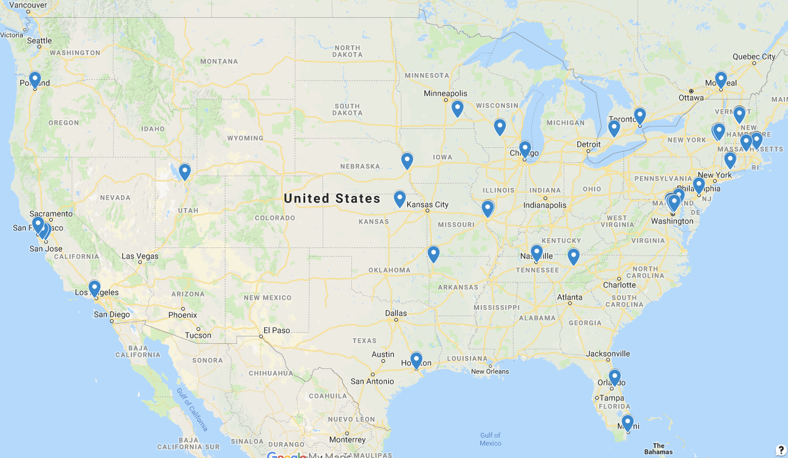

The 12th National Image Guided Therapy Workshop - 2022 Virtual
The 12th National Image Guided Therapy Workshop
The 12th National Image Guided Therapy Workshop was held on May 19, 2022, in virtual format. The workshop drew 289 registrations, including 29 NIH personnel and 48 industry representatives. The workshop started with four plenary lecturers covering state-of-art Image Guided Therapy research: Dr. Kim Butts-Pauly of Stanford University introduced her recent progress on Focused Ultrasound Therapy, and Dr. Oliver Jonas of Harvard Medical School on Drug Response measurements by intra-tumor device, Dr. Mathias Unberath on In Silico Experiment, and Dr. Ken Goldberg of UC Berkley on Artificial Intelligence robotic surgery. The plenary talks were followed by 35 oral presentations by Principal Investigators of active NIH grants on Image Guided Therapy research and 30 short presentations by fellows and post-docs to discuss their research progress with experts. The research presentation topics included Medical Robotics, Surgical technologies, Imaging and Sensing Technologies, and MRI-guided Focused Ultrasound therapies. The website for the workshop consists of the participants’ list and titles and authors of the talks. The link to the grants’ NIH Reporter page is provided for the talks covering the active NIH funding.
The overall goal of this workshop series is to foster discourse in translational research in image-guided therapy in the NIH-funded community and to communicate the availability of AT-NCIGT as a national resource for tools and technologies in the field. Attendees include NIH-funded academic scientists, clinicians, and leaders from industry and federal agencies interested in image-guided interventions. In the previous workshop also held in an online format, 454 participants, including 39 NIH Officers, learned the state-of-art in IGT from oral and poster presentations. Please view the participants’ list from the last workshop.
ORGANIZING CHAIRS
Nobuhiko Hata, PhD, Brigham and Women’s Hospital and Harvard Medical School
Robert J, Webster III, PhD, Vanderbilt University
Clare Tempany, MD, Brigham and Women’s Hospital and Harvard Medical School
PROGRAM CHAIRS
Nathalie Agar, PhD, Brigham and Women’s Hospital and Harvard Medical School
Qi Duan, PhD, National Institute of Biomedical Imaging and Bioengineering, National Institutes of Health
Nathan McDannold, PhD, Brigham and Women’s Hospital and Harvard Medical School
Allison Payne, PhD, University of Utah
Behrouz Shabestari, PhD, National Institute of Biomedical Imaging and Bioengineering, National Institutes of Health
Daniel B. Vigneron, PhD, University of California San Francisco
William (Sandy) Wells, PhD, Brigham and Women’s Hospital and Harvard Medical School
MEDIA COMMITTEE
Junichi Tokuda, PhD, Brigham and Women’s Hospital and Harvard Medical School
PROGRAM | Thursday, May 19, 2022, 12:30 – 4:30pm |
All events are in Eastern Daylight Time (EDT) |
PROGRAM AT A GLANCE |
|||||
| MAIN HALL | Breakout Room FENWAY | Breakout Room ALLSTON | Breakout Room CAMBRIDGE | ||
| 12:30 – 1:10pm | Welcome and Plenary Talks | ||||
| 1:20 – 2:50pm | Webinar Sessions
|
Medical Robotics | Imaging and Sensing | FUS/US/Ablation | Surgery |
| 3:00 – 3:20pm | NIH Information Session | ||||
| 3:30 – 4:30pm | Interactive Oral Sessions
|
Medical Robotics | Imaging and Sensing | MRI-guided FUS and Therapies | Neurosurgery |
ZOOM INFORMATION |
|||
| Zoom link without passcode Passcode embedded direct link sent via email |
Zoom Meeting ID | Zoom Passcode | |
| MAIN HALL | https://partners.zoom.us/j/85438733492 | 854 3873 3492 | Sent via Email |
| Breakout Room FENWAY | https://partners.zoom.us/j/87089505543 | 870 8950 5543 | Sent via Email |
| Breakout Room ALLSTON | https://partners.zoom.us/j/89375277321 | 893 7527 7321 | Sent via Email |
| Breakout Room CAMBRIDGE | https://partners.zoom.us/j/81017515803 | 810 1751 5803 | Sent via Email |
12:30-12:35pm | Opening Remarks |
|||||||||||||||||||
M
|
|
||||||||||||||||||
12:35-1:15pm | Plenary Talks |
|||||||||||||||||||
M
|
|
||||||||||||||||||
1:20-2:50pm | Webinar Session |
|||||||||||||||||||
Abstracts of the Oral Presentations |
|||||||||||||||||||
M
|
MEDICAL ROBOTICSSession Chairs:
|
||||||||||||||||||
RoomF |
IMAGING AND SENSINGSession Chairs:
|
||||||||||||||||||
RoomA |
FOCUSED ULTRASOUND/ULTRASOUND/ABLATIONSession Chairs:
|
||||||||||||||||||
RoomC |
SURGERYSession Chairs:
|
||||||||||||||||||
3:00-3:20pm | NIH Information and Q&A |
|||||||||||||||||||
M
|
Session Chairs: Behrouz Shabestari, PhD, National Institute of Biomedical Imaging and Bioengineering, National Institutes of Health Qi Duan, PhD, National Institute of Biomedical Imaging and Bioengineering, National Institutes of Health |
||||||||||||||||||
3:30-4:30pm | Interactive Oral Sessions |
|||||||||||||||||||
Abstracts of the Interactive Oral Presentations |
|||||||||||||||||||
M
|
MEDICAL ROBOTICSModerators:
|
||||||||||||||||||
RoomF |
IMAGING AND SENSINGModerators:
|
||||||||||||||||||
RoomA |
MRI-GUIDED FUS AND THERAPIESModerators:
|
||||||||||||||||||
RoomC |
NEUROSURGERYModerators:
|
||||||||||||||||||
Confirmed Attendees (as of 05/18/2022)
-
- Abdallah S. R. Mohamed | The University of Texas MD Anderson Cancer Center
- Abhinav K. Jha | Washington University in St. Louis
- Afsoon Nejati | Toronto’s Metropolitan University
- Alejandro Sisniega | Johns Hopkins University
- Alexander Klibanov | University of Virginia
- Alexis Girault | NVIDIA
- Ali Azhdarinia | The University of Texas Health Science Center at Houston
- Ali Moein | Boston University
- Ali Tavallaei | Ryerson University
- Ali Tavallaei | Toronto Metropolitan University
- Ali Uneri | Johns Hopkins University
- Allison Payne | University of Utah
- Alykhan Sewani | Ryerson University
- Amoon Jamzad | Queen’s University
- Anabel Alfonso | Memorial Sloan Kettering Cancer Center
- André Legendre | Kalima Blockchain
- Andrey Fedorov | Brigham and Women’s Hospital and Harvard Medical School
- Ashwin Singh Parihar | Washington University School of Medicine
- Aurea Pascal-Tenorio | Department of Radiology, Stanford University
- Bhadrasain | Vikram | NIH
- Blake Beier | Sterling Medical Devices
- Boklye Kim | NIH/NCI
- Brian Rodgers | NIH
- Brian Schlossberg | Lumicell Inc.
- Bridget Kilbride | UCSF
- Brooks Lindsey | Georgia Institute of Technology and Emory University
- Bryan Parker | International Healthcare
- Carl-Fredrik Westin | Brigham and Women’s Hospital and Harvard Medical School
- Cheng Wang | UCSF
- Chiayeng Wang | NCI/NIH
- Chih-Yen Chien | Washington University in St. Louis
- Chris Gibson | Robarts Research Institute
- Clare Tempany | Brigham and Women’s Hospital and Harvard Medical School
- Connor Barth | Oregon Health & Science University
- Cosmin Ciausu | Brigham and Women’s Hospital and Harvard Medical School
- David Bericat | NVIDIA
- David Moore | Focused Ultrasound Foundation
- Deepa Krishnaswamy | Brigham and Women’s Hospital and Harvard Medical School
- Dennis Parker | University of Utah
- Deshan Yang | Duke University
- Desmond Teck Beng Yeo | GE Research
- Dieter Haemmerich | Medical University South Carolina
- Dimitri Lezcano | Johns Hopkins University
- Dipanjan Pan | University of Maryland Baltimore
- Elena Maria Zannoni | University of Illinois Urbana-Champaign
- Elvis Chen | Robarts Research Institute
- Emilee Minalga | University of Utah
- Emma Erickson | Carnegie Mellon University
- Erez Nevo | Robin Medical
- Eric Jeffrey Seibel | University of Washington
- Étienne Léger | Brigham and Women’s Hospital and Harvard Medical School
- Eva Gombos | Brigham and Women’s Hospital and Harvard Medical School
- Evangelia Kaza | Brigham and Women’s Hospital, Dana-Farber Cancer Institute, Harvard Medical School
- Faisal Bashir | Medtronic
- Filipe Pedrosa | Western University
- Frederic Padilla | Focused Ultrasound Foundation
- Gang Li | Children’s National Medical Center
- George Durrant | Medtronic
- Gernot Kronreif | ACMIT Gmbh
- Ghina Zia | Indiana University School of Medicine
- Gregory Ekchian | Stratagen Bio Inc.
- Guanda Qiao | University of Maryland, Baltimore
- Guigen Liu | Brigham and Women’s Hospital and Harvard Medical School
- Gulsah Caneli | Medtronic
- Haichong (Kai) Zhang | Worcester Polytechnic Institute
- Hak Soo Choi | Massachusetts General Hospital
- Han Dong | Vanderbilt Bio Photonics Center
- Haoyin Zhou | Brigham and Women’s Hospital and Harvard Medical School
- Haroon Oqab | Kepler Space Institute
- Hasnine Haque | GE Healthcare
- Henrik Odéen | University of Utah
- Hong Chen | Washington University in St. Louis
- Huabei Jiang | University of South Florida
- Ileana Hancu | NIH/NCI
- Isaac Girgis | Burnett School of Biomedical Sciences, University of Central Florida
- Iulian Iordachita | Johns Hopkins University
- Jacek Capala | National Cancer Institute
- Jack Peters | Vanderbilt University
- Jackson Coole | Rice University
- Jacob | Ryerson University
- James Basilion | Case Western University
- Janice M Fairhurst | MassGeneral Brigham
- Jared Lawson | Vanderbilt University
- Javier Pascau | Universidad Carlos III de Madrid (Spain)
- Jayender Jagadeesan | Brigham and Women’s Hospital and Harvard Medical School
- Jeff Rezazada | Ryerson University
- Jeff Siewerdsen | Johns Hopkins University
- Jessica Rodgers | Queen’s University
- Jianing Pang | Siemens Healthineers
- Jie Ying Wu | Vanderbilt University
- Jing Wang | UT Southwest
- Josh Hillyard | University of Utah
- Joshua Crockett | University of Utah
- Joshua Ehrlich | Queen’s University
- Joshua Marchant | University of Utah
- Junichi Tokuda | Brigham and Women’s Hospital and Harvard Medical School
- Kai Bao | Massachusetts General Hospital
- Karen Joos | Vanderbilt University Medical Center
- Karun Sharma | Children’s National Medical Center / George Washington University
- Kenji Fujioka | Northern Digital Inc. (NDI)
- Kevin Cleary | Children’s National Hospital
- Khan Iftekharuddin | Old Dominion University
- Laura Connolly | Queen’s University
- Leyla Kabuli | UC Berkeley
- Lily Yang | Emory University
- Lisa Last | nView medical
- Lu Xu | Washington University in St. Louis
- Maie St. John | UCLA David Geffen School of Medicine
- Mara Saccomano | Helmholtz Pioneer Campus, Helmholtz Zentrum München
- Marek Belohlavek | Department of Cardiovascular Disease, Mayo Clinic College of Medicine and Science, Scottsdale
- Mariana Costa Bernardes Matias | Brigham and Women’s Hospital and Harvard Medical School
- Mark Vangel | Massachusetts General Hospital
- Masahito Naito | Brigham and Women’s Hospital and Harvard Medical School
- Masahito Suzuki | Johns Hopkins University
- Matthew Tarasek | GE Global Research
- Megha | Robotics and Control Lab, The University of British Columbia
- Mekhail Anwar | UCSF
- Michael Daly | University Health Network
- Michael Malmberg | University of Utah
- Michelle Kline | Utah Center for Advanced Imaging Research, University of Utah
- Michellie Choi | Western University
- Mike Kokko | Dartmouth College
- Milind Rajadhyaksha | Memorial Sloan Kettering Cancer Center
- Mohammad Khoobani | Toronto Metropolitan University
- Mohammad Salehizadeh | Brigham and Women’s Hospital and Harvard Medical School
- Mohammadmahdi | Tahmasebi Student at Toronto metropolitan university
- Mohmed Almekkawy | Penn State University
- Morgan Ringel | Vanderbilt University
- Nathalie Agar | Brigham and Women’s Hospital and Harvard Medical School
- Nazim Haouchine | Brigham and Women’s Hospital and Harvard Medical School
- Neal Clinthorne | Ehmet Health
- Neel Shihora | Vanderbilt University
- Neil Glossop | ArciTrax Inc., Queen’s University
- Nicholas Fordham | Brigham and Women’s Hospital, Boston University School of Medicine
- Nicholas Richards | Univeristy of Utah
- Nobuhiko Hata | Brigham and Women’s Hospital and Harvard Medical School
- Pedro Moreira | Brigham and Women’s Hospital and Harvard Medical School
- Perry Grigsby | Mallinckrodt Institute of Radiology
- Prerna | NVIDIA
- Pushpa Tandon | National Cancer Institute
- Qi Duan | NIH
- Quirina de Ruiter | Intuitive
- Rafael Moreta-Martinez | Universidad Carlos III de Madrid
- Randy King | NIH/NIBIB
- Rao Gullapalli | University of Maryland School of Medicine
- Rao P Gullapalli | University of Maryland School of Medicine
- Ravi Teja Seethamraju | Siemens Healthineers
- Rebecca Lisk | Surgical Navigation & Robotics Lab
- Richard Wahl | Mallinckrodt Institute of Radiology, Washington University School of Medicine
- Robb Merrill | Department of Radiology, University of Utah
- Robert Cormack | Brigham and Women’s Hospital and Harvard Medical School
- Robert Nordstrom | National Cancer Institute
- Rock Hadley | University of Utah
- Ron Alterovitz | University of North Carolina at Chapel Hill
- Ron Kikinis | Brigham and Women’s Hospital and Harvard Medical School
- Ross Berbeco | BWH/DFCI
- Rozhan Rabbani | Department of Electrical Engineering and Computer Sciences, University of California, Berkeley
- Rui Li | New York University
- Ryan Halter | Dartmouth College
- Ryo Murakami | Medical Fusion Laboratory, Worcester Polytechnic Institute
- Sai Tej | Independent
- Sam Clinard | University of Utah
- Sam Song | University of Central Florida
- Samuel Kesner | Medtronic
- Samuel S. Streeter | Thayer School of Engineering at Dartmouth
- Sanghoon Kim | Brigham and Women’s Hospital and Harvard Medical School
- Sara Johnson | University of Utah
- Sarah Frisken | Brigham and Women’s Hospital and Harvard Medical School
- Satoshi Kobayashi | Brigham and Women’s Hospital and Harvard Medical School
- Sean Madden | Lumicell, Inc.
- Sevda Mohammadi Gharalar | UCSF
- Shane Wells | University of Wisconsin Madison
- Shang Gao | Worcester Polytechnic Institute
- Sharan Ravigopal | Georgia Institute of Technology
- Sharath Bhagavatula | Brigham and Women’s Hospital and Harvard Medical School
- Shreyas Chandra Sekhar | WPI
- Shubham Mandot | University of Illinois at Urbana-Champaign
- Sijia Guo | University of Maryland School of Medicine
- Srinivas Sridhar | Northeastern University and Harvard Medical School
- Stephen Rudin | University at Buffalo (SUNY)
- Steven Roys | University of Maryland Hospital
- Stuart G. Silverman | Brigham and Women’s Hospital and Harvard Medical School
- Summer Gibbs | Oregon Health & Science University
- Susann Brady-Kalnay | Case Western Reserve University
- Szymon Płotka | Sano Centre for Computational Medicine
- Takahisa Kato | Canon USA, Inc.
- Tamar Geller | Yale University
- Tamas Ungi | Queen’s University
- Tianyi Zhou | Northeastern University
- Tina Kapur | Brigham and Women’s Hospital and Harvard Medical School
- Tokuyuki Honda | Canon USA, Inc.
- Tze-Yuan | Proprio
- Uditha Jayarathne | Northern Digital Inc.
- Walia Farzana
- Walid Ibn Essayed | Harvard Medical School and Brigham and Women’s Hospital
- William Evan Higgins | Penn State University
- Xenophon Papademetris | Yale University
- Xiao Liang | University of Maryland School of Medicine
- Xiaoguang Dong | Vanderbilt Institute for Surgery and Engineering, Vanderbilt University
- Yash Ajay Garje | Worcester Polytechnic Institute
- Yeonhee Chang | Vanderbilt
- Yichuan Tang | Worcester Polytechnic Institute
- Yilan Xu | Vanderbilt University
- Ying Xiao | UPENN
- Yuan Chuan Tai | Washington University in St. Louis
- Yue Chen | Georgia Institute of Technology
- Zachary Chau | Northeastern University
- Zhen Xu | University of Michigan
22 others, including six NIH officers and industry colleagues from Intuitive Surgical, Northern Digital Inc, Medtronic, and NVIDIA.
Abstract Submission: Due Wednesday, April 20, 2022
We are soliciting submissions of short abstracts up to 500 words. The abstract doesn’t have to be a presentation of new data, but rather a compilation of past published data supporting your vision in Image-Guided Therapy research or NIH-funded program.
- Place the presenter at the top of the authors’ list and designate him/her as the corresponding author. The priority is given to talks presented by the PI(s) of the NIH grant the study is based on.
- The abstract can cover published or unpublished work.
- Include the NIH Grant Numbers supporting the paper.
- The work presented can certainly be supported by sources other than NIH.
- The program committee will review all submissions and assign acceptances to either poster or oral presentations. Notice of acceptance will be sent out on 05/05/2022.
The 11th National Image Guided Therapy Workshop - 2020 Virtual
The 11th National Image Guided Therapy Workshop
The 11th National Image Guided Therapy Workshop was also our first fully virtual meeting. It was held by Zoom on April 16, 2020. It recorded 454 registered attendees, the largest number in the history of the workshop. Participants joined from 28 states and Washington DC in the United States, and from 13 other countries. As an additional metric available on the video conference platform, we are able to report that the average duration that an attendee stayed in the workshop was 2.5 hours. In a feedback survey (with 182 responses) over 90% rated the performance of the workshop between 8 and 10 on a scale of 1-10.
Presentations from the Workshop
CHAIRS
- Tina Kapur, PhD, Brigham and Women’s Hospital and Harvard Medical School
- Kevin Cleary, PhD, Children’s National Health System
- Milind Rajadhyaksha, PhD, Memorial Sloan Kettering Cancer Center
- Maie St. John, MD, PhD, David Geffen School of Medicine at UCLA
- Behrouz Shabestari, PhD, National Institute of Biomedical Imaging and Bioengineering
POSTER SESSION CHAIRS
- Kivanc Kose, PhD, Memorial Sloan Kettering Cancer Center
- Xiaotian (Dennis) Wu, PhD, Gordon Center for Medical Imaging at MGH
PROGRAM
| 12:30-1:00pm | Pre-Opening Setup Time for Presenters | |
| 1:00pm | Opening Remarks – Tina Kapur | |
| 1:02-1:10pm | Keynote Talk on Image Guided Therapy – Clare Tempany | |
| SESSION 1 | Guidance for General Surgery, Liver Ablation, Brain and Spine Surgery, and Cancer | |
| 1:10-1:15pm | 1. | Jayender Jagadeesan (Boston, MA) Navigation for General Surgery Applications |
| 1:15-1:20pm | 2. | Kristy Brock (Houston, TX) Anatomical Modeling to Improve the Precision of Image Guided Liver Ablation |
| 1:20-1:25pm | 3. | Jeffrey Siewerdsen (Baltimore, MD) Image Guidance in Brain and Spine Surgery Beyond Precision |
| 1:25-1:30pm | 4. | Sarah Frisken (Boston, MA) Insertion Paths for Laser Interstitial Thermal Therapy in the Brain |
| 1:30-1:35pm | 5. | Moritz Kircher (Boston, MA) Nanoprobes for Cancer Imaging and Therapy |
| SESSION 2 | Optical Imaging Guided Therapy | |
| 1:35-1:40pm | 6. | Milind Rajadhyaksha (New York, NY) Confocal Microscopy and Optical Coherence Tomography to guide Mohs Surgery |
| 1:40-1:45pm | 7. | Summer Gibbs (Portland, OR) Near Infrared Nerve-Specific Fluorophores for Nerve Sparing during Prostatectomy |
| 1:45-1:50pm | 8. | Haichong Zhang (Worcester, MA) Photoacoustic Image Instrumentation for Prostate Cancer Detection |
| 1:50-1:55pm | 9. | Junichi Tokuda (Boston, MA) MRI-Guided Prostate Focal Cryoablation |
| 1:55-2:00pm | 10. | Baohong Yuan (Arlington, TX) Ultrasound-switchable Fluorescence Imaging for Breast Cancer Surgery Guidance |
| 2:00-2:05pm | 11. | Maie St. John (Los Angeles, CA) Image-Guided Technologies for Head and Neck Cancer Surgery |
| SESSION 3 | Image Guided Drug Delivery | |
| 2:05-2:10pm | 12. | Nathan McDannold (Boston, MA) MRI-guided focused Ultrasound Neurosurgery |
| 2:10-2:15pm | 13. | Hak Soo Choi (Boston, MA) Renal Clearable Fluorophores for Image-Guided Drug Delivery and Cancer Surgery |
| 2:15-2:20pm | 14. | Hong Chen (St. Louis, MO) MRI-guided Focused Ultrasound for Noninvasive Diagnosis of Brain Tumors |
| 2:20-2:25pm | 15. | Miroslaw Janowski (Baltimore, MD) Intra-arterial Delivery of Macromolecules to the Brain Guided by Interventional PET |
| 2:25-2:30pm | 16. | Alexander Klibanov (Charlottesville, VA) Perfluorocarbon Superheated Nanodroplets for US Triggered Tumor Therapy |
| 2:30-2:35pm | 17. | Piotr Walczak (Baltimore, MD) Real-time MRI and Intravital Microscopy to Visualize Extravasation of Intra-Arterially Administered Antibodies in Mice |
| SESSION 4 | Robots and Devices | |
| 2:35-2:40pm | 18. | Kevin Cleary (D.C.) Body-mounted Robots for MRI-guided Interventions |
| 2:40-2:45pm | 19. | Axel Krieger (College Park, MD) Supervised Autonomous Robotic Laparoscopic Suturing |
| 2:45-2:50pm | 20. | Punit Prakash (Manhattan, KS) Virtual Bronchoscopy-Guided Microwave Ablation |
| 2:50-2:55pm | 21. | Ling-Jian Meng (Urbana, IL) Intraoperative C-arm SPECT for Hybrid Operating Room: a Design Study |
| 2:55-3:00pm | 22. | Cristian Atria (Salt Lake City, UT) NIH Funded Startup – nView Medical for Intraoperative 3D Imaging |
| 3:00-3:05pm | 23. | Ryan Halter (Hanover, NH) Image-Guidance in Soft-Tissue Surgical Applications |
| SESSION 5 | NIH Information and Q&A | |
| 3:05-3:10pm | 24. | Janet Eary (D.C.) Imaging to Guide Cancer Interventions – New NCI Initiatives |
| 3:10-3:15pm | 25. | Behrouz Shabestari (D.C.) National Centers for Biomedical Imaging and Bioengineering (NCBIB) P41 and New NIBIB Initiatives |
| 3:15-3:20pm | 26. | Michael Wolfson (D.C.) Initiatives for Junior Investigators at NIBIB |
| 3:20-3:35pm | Q&A Panel Moderated by Behrouz Shabestari, PhD, NIBIB Panelists:
|
|
| SESSION 6 | Posters | |
| 3:45-4:00pm | Posters are available before and after the meeting in the “Image Guided Therapy Workshop” Google Classroom.
Go to https://classroom.google.com
During the Workshop these will be presented in Zoom breakout rooms by presenters. |
|
POSTERS
1. Surgical/Guide |
| Stereovision-based Image Updating in Open Lumbar Fusion Surgery. Xiaoyao Fan, Maxwell Durtschi, Chen Li, Linton Evans, Songbai Ji, Yunliang Cai, Sohail Mirza and Keith Paulsen. |
| Shift Compensation in Epilepsy Surgery. Xiaoyao Fan, David Roberts and Keith Paulsen. |
| A Preliminary Study of Needle and Guide Dynamic Interaction for Targeted Interventions. Pankaj Kulkarni, Sakura Sikander, Pradipta Biswas and Sang-Eun Song. |
2. Optical |
| Dynamic in Vivo Imaging of Tumor-Immune Microenvironment (TiME) and Microvasculature in Skin Cancers for Potential Prognosis Prediction. Aditi Sahu, Melissa Gill, Christi Alessi-Fox, Miguel Cordova, Kivanc Kose, Anthony Santella, Salvador Gonzalez, Ashfaq Marghoob, Chih Shan Chen and Milind Rajadhyaksha. |
| Combined Reflectance Confocal Microscopy – Optical Coherence Tomography for Detection and Deep Margin Assessment of Basal Cell Carcinomas: A Clinical Study. Aditi Sahu, Oriol Yelamos, Nicusor Iftimia, Miguel Cordova, Christi Alessi-Fox, Melissa Gill, Gopi Maguluri, Stephen Dusza, Cristian Navarrete-Dechent, Salvador Gonzalez, Anthony Rossi, Ashfaq Marghoob, Chih-Shan Jason Chen and Milind Rajadhyaksha. |
| Combining a Nuclear Contrast Agent (PARPi-FL) With Fluorescence Confocal Microscopy to Improve Noninvasive Diagnosis of Basal Cell Carcinomas. Aditi Sahu, Jose Cordero, Susanne Kossatz, Christian Brand, Arianna Strome, Niasia Everret, Paula Demetrio Desouza Franca, Allan Halpern, Thomas Reiner, Milind Rajadhyaksha and Manu Jain. |
3. Optical 2 |
| Dynamic Optical Contrast Imaging: A Technique of Potentials. Yong Hu, Shan Huang, Yazeed Alhiyar, Peter Pellionisz, Oscar Stafsudd and Maie St. John. |
| Clinical Usability of Video Mosaicking with Reflectance Confocal Microscopy for Mapping Cancer Margins in vivo to guide Treatment. Kivanc Kose, Miguel Cordova, Oriol Yelamos, Eileen Flores, Gary Peterson and Milind Rajadhyaksha. |
| Pre-Operative Imaging of Oral Cancer Margins in Vivo With a Handheld Reflectance Confocal Microscope and Video-Mosaicking Approach: A Feasibility Study. Gary Peterson, Daniella Karassawa Zanoni, Marco Ardigo, Aditi Sahu, Snehal Patel and Milind Rajadhyaksha. |
4. Robotics |
| Body-Mounted Robotic Assistant for MRI-Guided Lumbar Spinal Injections. Gang Li, Nirav Patel, Karun Sharma, Kevin Cleary and Iulian Iordachita. |
| 3D CBT Image-Guided Autonomous Robotic Pedicle Screw Placement: A Feasibility Study. Cristian Atria, Andrew Hall, Najib El Tecle, Keith Nelson, Last Lisa, Alexander Smith and Robert Morgan. |
| A Novel 4-DOF Manipulator for MRI-guided Transperineal Prostate Intervention. Pradipta Biswas and Sang-Eun Song. |
5. Robotics 2 |
| Development of Exposure Phase Navigation as a Training Aid in Robotic Surgery. Michael Kokko, John Seigne, Douglas Van Citters and Ryan Halter. |
| Design and Workspace Analysis of a Patient Mounted Liver Ablation Robot. Mishek Musa, Karun Sharma, Kevin Cleary and Yue Chen. |
| Image-Guided Robotic Surgery for Reduction and Fixation of Pelvic Fractures. Ali Uneri, Rohan Vijayan, Runze Han, Greg Osgood, Nicholas Theodore and Jeffrey Siewerdsen. |
6. Quality/Data |
| Image Quality in Cone Beam Tomosynthesis. Lisa Last, Cristian Atria and Luke Newmeyer. |
| A Machine-Readable Representation of PI-RADS Reports Using the DICOM Standard. Andrey Fedorov, David Clunie and Clare Tempany. |
| National Cancer Institute Imaging Data Commons. Andrey Fedorov, William Longabaugh, David Pot, Steve Pieper, Erik Ziegler, Rob Lewis, Markus D. Herrmann, William Clifford, Hugo Aerts, André Homeyer, David Clunie and Ron Kikinis. |
7. Modeling/Planning |
| Intraoperative Tongue Deformation Estimation Using FEM-Multibody Modeling and Intraoperative Tracking: Cadaver Cases. Xiaotian Wu, C. Antonio Sánchez, John Lloyd, Sidney Fels, Joseph Paydarfar and Ryan Halter. |
| Development and Validation of a Finite Element Model for In Situ MR-Guided Conformal Ablation using Robotically Delivered Needle-Based Therapeutic Ultrasound. Katie Gandomi, Paulo Carvalho, Matthew Tarasek, Eric Fiveland, Chitresh Bhushan, Paul Neubauer, Zhanyue Zhao, Everette Burdette, Julie Pilitsis, Desmond Yeo, Christopher Nycz and Gregory Fischer. |
| Surgical Port and Trajectory Planning for PCNL Surgery Using CT Imaging and Genetic Algorithms. Moiz Khan, Filipe Pedrosa, Lexuan Wang, Dianne Sacco, Rajni Patel and Jayender Jagadeesan. |
8. Registration |
| Fusion Assisted Biopsy of a Heterogenous Left Thoracic Neurofibroma in a 23-Year-Old Female: A Case Study of a Multimodal Non-Rigid Registration Device. Christopher Gallo, Nikhil Gowda, William Plishker, Bhupender Yadav, Ranjith Vellody, Raj Shekhar and Karun Sharma. |
| Deformable MR to Cone-Beam CT Registration for High-Precision Neuro-Endoscopic Surgery. Michael Ketcha, Craig Jones, Pengwei Wu, Runze Han, Ali Uneri, Junghoon Lee, Mark Luciano, William Anderson and Jeffrey Siewerdsen. |
| A Surface Reconstruction and Registration-based Navigation System to Handle Tissue Deformation. Haoyin Zhou and Jayender Jagadeesan. |
9. Treatment/Diagnostics |
| Reflectance Confocal Microscopy-Guided Carbon Dioxide Laser Ablation of Low-Risk Basal Cell Carcinomas: A Prospective Study. Saud Aleissa, Milind Rajadhyaksha and Anthony Rossi. |
| Evaluation of Extramammary Paget Disease with Hand-Held Reflectance Confocal Microscopy. Saud Aleissa, Milind Rajadhyaksha and Anthony Rossi. |
| Determining the Role of MR-Guided Biopsy in Indeterminate PI-RADS 3 Lesions. Andrés Camacho, Jonathan Waring, Andriy Fedorov, Renato Umeton, Clare M. Tempany, Massimo F. Loda and Fiona M. Fennessy. |
10. Fluorescence/Drug Delivery |
| Real-time Fluorescence Lifetime Imaging System for Intraoperative Tissue Differentiation. Shan Huang, Yong Hu, Peter Pellionisz, Oscar Stafsudd and Maie St. John. A. |
| Multimodal Deformable Registration via GAN-based Image Translation and Dual-Stream Learning Network. Zhe Xu and Jayender Jagadeesan. |
| Efficacy of DNA-Functionalized Materials for Selective Removal of Chemotherapeutic Agents. Colin Yee, Parth Kumar, Bridget Kilbride and Steven Hetts. |
11. ML/DL |
| Utilizing Machine Learning for Reflectance Confocal Microscopy in Skin Cancer Care. Kivanc Kose, Alican Bozkurt, Christi Alessi-Fox, Melissa Gill, Jennifer Dy, Dana H. Brooks and Milind Rajadhyaksha. |
| Multimodal Deformable Registration via GAN-based Image Translation and Dual-Stream Learning Network. Zhe Xu and Jayender Jagadeesan. |
| Confidence Calibration and Predictive Uncertainty Estimation for Deep Medical Image Segmentation. Alireza Mehrtash, William Wells, Clare Tempany, Purang Abolmaesumi and Tina Kapur. |
12. Tissue Measurement |
| Feasibility Study of Q-Space Trajectory Imaging (QTI) for Assessment of Tissue Microstructure in Prostate Cancer to Assist With Target Selection for Prostate Biopsy. Bjoern Langbein, Filip Szczepankiewicz, Carl-Fredrik Westin, Adam Kibel, Clare Tempany, Martin Schostak, Andriy Fedorov, Fiona Fennessy and Camden Bay. |
| Feasibility of Quantitative MR Based Hypoxia Measurements in the Setting of Interstitial High Dose Rate Brachytherapy of the Cervix. Larissa Lee, Robert Cormack, Gregory Ekchian, Junichi Tokuda, Evangelia Kaza and Michael Cima. |
| Data-Driven Identification of Intra-tumor Metabolic Heterogeneity of Glioblastoma using Variational Autoencoder. Walid Abdelmoula, Begona Lopez, Elizabeth Randall, Jann Sarkaria, Jeffrey Agar, Tina Kapur, William Wells and Nathalie Agar. |
REGISTERED ATTENDEES
-
- Allison Payne PhD, University of Utah, Salt Lake City, UT
- Gregory Fischer PhD, Worcester Polytechnic Institute, Worcester, MA
- Jing Wang PhD, UT Southwestern Medical Center, Dallas, TX
- Steve Pieper PhD, Isomics, Inc., Cambridge, MA
- Shreyas Chandra Sekhar PhD Candidate, MD Candidate, Worcester Polytechnic Institute, Worcester, MA
- Michelle Kline MS Computer Science, University of Utah, Salt Lake City, UT
- Ken Wang PhD, Johns Hopkins Hospital, Baltimore, MD
- Michael Daly PhD, Princess Margaret Cancer Centre, Toronto, Ontario, Canada
- Elodie Lugez PhD, Queen’s university, Kingston, Ontario, Canada
- Dania Daye MD, PhD, Massachusetts General Hospital, Boston, MA
- Rosemary Wong PhD, National Cancer Institute, Rockville, MD
- Dong-Hyun Kim PhD, Northwestern University, Chicago, IL
- Zion Tse PhD, University of York, York, UK
- Baohong Yuan PhD, University of Texas, Arlington, Arlington, TX
- Ron Kikinis MD, Brigham and Women’s Hospital, Harvard Medical School, Boston, MA
- Jaydev P. Desai PhD, Georgia Institute of Technology, Atlanta, GA
- Jerry Ackerman PhD, Massachusetts General Hospital, Charlestown, MA
- Sarah Frisken PhD, Brigham and Women’s Hospital, Harvard Medical School, Boston, MA
- Gabor Fichtinger PhD, Queen’s University, Kingston, Ontario, Canada
- Lalitha K. Shankar MD, PhD, National Cancer Institute, Cancer Imaging Program, Bethesda, MD
- Shelley HuaLei Zhang PhD, Canon, Cambridge, MA
- Cristian Atria MBA, nView Medical, Salt Lake City, UT
- Dhruv Kool Rajamani Masters Student, Worcester Polytechnic Institute, Worcester, MA
- Ashim Subedee PhD, National Cancer Institute, Rockville, MD
- Xiaotian (Dennis) Wu PhD, Gordon Center for Medical Imaging, Massachusetts General Hospital, Boston, MA
- Shuwei Xing MD, Robarts Research Institute, London, Ontario, Canada
- Drew Elliott Research Technician, Georgia Institute of Technology, Atlanta, GA
- YingLi Lu PhD, Robarts Research institute, London, Ontario, Canada
- Yue Sun PhD Candidate, University of Michigan, Ann Arbor, MI
- Alexander Klibanov PhD, University of Virginia, Charlottesville, VA
- Jacek Capala PhD, National Cancer Institute, Rockville, MD
- Marek Belohlavek MD, PhD, Mayo Clinic, Scottsdale, AZ
- Dennis Parker PhD, University of Utah, Salt Lake City, UT
- Kim Butts Pauly PhD, Stanford University, Stanford, CA
- Hak Soo Choi PhD, Massachusetts General Hospital, Boston, MA
- Maryam Rettmann PhD, Mayo Clinic, Rochester, MN
- Luke Mitchell Wiseman MD Candidate, Michigan State University, East Lansing, MI
- Kim Lawson MA, Philips, Cambridge, MA
- Kevin Cleary PhD, Children’s National Hospital, Washington, D.C.
- Elena Kaye PhD, Memorial Sloan Kettering Cancer Center, New York, NY
- Xenophon Papademetris PhD, Yale University, New Haven, CT
- Tina Kapur PhD, Brigham and Women’s Hospital, Harvard Medical School, Boston, MA
- Prashin Unadkat MD, Northwell Health, Manhasset, NY
- Richard Wahl MD, Washington University in St. Louis, MO
- Ciprian N. Ionita PhD, State University of New York at Buffalo, Buffalo, NY
- Jeff Siewerdsen PhD, Johns Hopkins University, Baltimore, MD
- Paul Loschak PhD, Medtronic, Boston, MA
- Christina Yan MD Candidate, University of Ottawa, Ottawa, Ontario, Canada
- John Evans, Washington University in St. Louis, St. Louis, MO
- Emily Budziszewski MS Candidate, Case Western Reserve University, Cleveland, OH
- Daniel Margolis MD, Weill Cornell Medical College, New York, NY
- Alan Wang PhD, University of Auckland, Auckland, New Zealand
- Qi Duan PhD, NIBIB, National Institutes of Health, Bethesda, MD
- Viola Rieke PhD, University of Utah, Salt Lake City, UT
- Lily Yang MD, PhD, Emory University, Atlanta, GA
- Lyla Mu MS, Western University of Ontario, London, Ontario, Canada
- Henrik Odeen PhD, University of Utah, Salt Lake City, UT
- Simon Hao MD Candidate, Worcester Polytechnic Institute, Worcester, NY
- Andac Hamamci PhD, Yeditepe University, Istanbul, Turkey
- Javier Pascau PhD, Universidad Carlos III de Madrid, Madrid, Spain
- Rafael Moreta-Martinez PhD Candidate, Universidad Carlos III de Madrid, Madrid, Spain
- David García Mato PhD Candidate, Universidad Carlos III de Madrid, Madrid, Spain
- Mónica García Sevilla PhD Candidate, Universidad Carlos III de Madrid, Madrid, Spain
- Rashid Yasin PhD, Medtronic, Boston, MA
- Andrew Wiles PhD, Northern Digital Inc., Waterloo, Ontario, Canada
- Ying Xiao PhD, UPenn, Philadelphia, PA
- Ashley Gilbank MD Candidate, Techna Institute – University Health Network, Toronto, Ontario, Canada
- Andy Johnston MSC, Northern Digital Inc., Waterloo, Ontario, Canada
- Natasja Janssen Post-doctoral Researcher, Queen’s University, Kingston, Ontario, Canada
- Andrea Weeks PhD, Northern Digital Inc., Waterloo, Ontario, Canada
- Martin Kopcik MSc, Northern Digital Inc., Waterloo, Ontario, Canada
- Armin Armbruster Scientist, Northern Digital Inc., Waterloo, Ontario, Canada
- Isabela Choi PhD Candidate, University of Sao Paulo/ Massachusetts General Hospital, Boston, MA
- Bill Peine PhD, Medtronic, Boston, MA
- Jessica Rodgers PhD Candidate, Western University of Ontario, London, Ontario, Canada
- Iulian Iordachita PhD, Johns Hopkins University, Baltimore, MD
- Hareem Nisar PhD Candidate, Western University of Ontario, London, Ontario, Canada
- Katie Gandomi PhD Candidate, Worcester Polytechnic Institute, Worcester, MA
- Yiming Xiao PhD, Robarts Research Institute, Western University of Ontario, London, Ontario, Canada
- Uditha Jayarathne PhD, Northern Digital Inc., Waterloo, Ontario, Canada
- David Fuentes MD, PhD, The University of Texas MD Anderson Cancer Center, Houston, TX
- Clare Tempany MD, Brigham and Women’s Hospital, Harvard Medical School, Boston, MA
- Bruno Madore PhD, Brigham and Women’s Hospital, Harvard Medical School, Boston, MA
- Goutam Ghoshal PhD, Acoustic MedSystems, South Grafton, MA
- Dan Gibson MA, Northern Digital Inc., Waterloo, Ontario, Canada
- Alireza PhD Candidate, Brigham and Women’s Hospital, Harvard Medical School, Boston, MA
- Nancy Deaton PhD Candidate, Georgia Institute of Technology, Atlanta, GA
- Tamas Ungi MD, PhD, Queen’s University, Kingston, Ontario, Canada
- Walid Abdelmoula PhD, Brigham and Women’s Hospital, Harvard Medical School, Boston, MA
- Kristy Brock MD, PhD, The University of Texas MD Anderson Cancer Center, Houston, TX
- Bongseo Choi PhD, Northwestern University, Chicago, IL
- Namrata Unnikrishnan Nayar PhD Candidate, Georgia Institute of Technology, Atlanta, GA
- Csaba Pinter PhD, Pixel Medical, Inc., Las Palmas de Gran Canaria, Spain
- Dieter Haemmerich PhD, Medical University of South Carolina, Charleston, SC
- Virginia Mamone PhD Candidate, University of Pisa, Pisa, Italy
- Selva Jeganathan PhD, Case Western Reserve University, Cleveland, OH
- Heather Newman BA, Northern Digital Inc., Waterloo, Ontario, Canada
- Alastair Martin PhD, University of California – San Francisco, San Francisco, CA
- Steve van Hengstum BSc, Northern Digital Inc., Waterloo, Ontario, Canada
- Graham Wright PhD, Sunnybrook Research Institute, Toronto, Ontario, Canada
- Vignesh Manoj Varier Master of Science, Worcester Polytechnic Institute, Worcester, MA
- Roberta Piazza PhD Candidate, University of Pisa, Pisa, Italy
- Nilesh Ghugre PhD, Sunnybrook Research Institute, Toronto, Ontario, Canada
- Kevin Lee Professional Engineer, Ryerson University, Waterloo, Ontario, Canada
- Jill Weyers PhD, Sunnybrook Research Institute, Toronto, Ontario, Canada
- Anthony Rossi MD, Memorial Sloan Kettering Cancer Center, New York, NY
- Jeff Stanley BMath, Northern Digital Inc., Waterloo, Ontario, Canada
- Kivanc Kose PhD, Memorial Sloan Kettering Cancer Center, New York, NY
- John Fischer Undergraduate Student, Northern Digital, Waterloo, Ontario, Canada
- Max Balter PhD, Medtronic, Boston, MA
- Summer Gibbs PhD, Oregon Health & Science University, Portland, OR
- Connor Barth PhD, Oregon Health & Science University, Portland, OR
- Rui Li PhD Candidate, University of Georgia, Athens, GA
- Jana Delfino PhD, US Food and Drug Administration, Silver Spring, MD
- Zijian Deng PhD, Johns Hopkins University, Baltimore, MD
- Hong Chen PhD, Washington University in St. Louis, St. Louis, MO
- Lei G. Wang PhD, Oregon Health & Science University, Portland, OR
- Krishna Kumar Ramajayam PhD, Medical University of South Carolina, Charleston, SC
- Xiangkun Xu PhD, Johns Hopkins University, Baltimore, MD
- Elvis Chen PhD, Robarts Research Institute, London, Ontario, Canada
- Logan Fisher BS Candidate, University of Utah, Salt Lake City, UT
- Achraj Sarma PhD Student, Georgia Institute of Technology, Atlanta, GA
- David Madoff MD, Yale School of Medicine, New Haven, CT
- Moritz Gross Medical Student, Yale School of Medicine, New Haven, CT
- Julius Chapiro MD, PhD, Yale University School of Medicine, New Haven, CT
- Simon Iseke MD Candidate, Yale School of Medicine, New Haven, CT
- Vasily Pekurovsky MD, Yale University, New Haven, CT
- Simon Drouin PhD, École de Technologie Supérieure, Montreal, Quebec, Canada
- Antonia Berz Postgraduate Fellow, Yale Radiology & Biomedical Imaging, New Haven, CT
- Tom Kuhn Postgraduate Research Fellow, Yale University, New Haven, CT
- Taehoon Sim PhD, Northwestern University, Chicago, IL
- Neil Glossop PhD, ArciTrax Inc., Queen’s University, Toronto, Ontario, Canada
- Joshua Ehrlich MSc Candidate, Queen’s University, Kingston, Ontario, Canada
- Ali Tavallaei PhD, Ryerson University, Toronto, Ontario, Canada
- Mihyun Choi PhD, Stanford University, Stanford, CA
- Sharan Ravigopal PhD Candidate, Georgia Institute of Technology, Lawrenceville, GA
- Marco Schneider PhD, Auckland Bioengineering Institute, Auckland, New Zealand
- Jaykumar Patel Master Candidate, University of Toronto, Toronto, Ontario, Canada
- Alfonso Estudillo-Romero PhD, Université de Rennes, Rennes, France
- Pushpa Tandon PhD, National Cancer Institute, Rockville, MD
- Christina Liu PhD, National Cancer Institute, Rockville, MD
- Chiayeng Wang PhD, National Institutes of Health, Bethesda, MD
- Matthew Young PhD, National Cancer Institute, Rockville, MD
- Mercy Prabhudas PhD, NIAID, National Institutes of Health, Rockville, MD
- Aditi Sahu PhD, Memorial Sloan Kettering Cancer Center, New York, NY
- Gregory Ekchian PhD, MIT, Cambridge, MA
- Linton Evans MD, Dartmouth Hitchcock Medical Center, Lebanon, NH
- Susanne Kossatz PhD, Technical University Munich, Munich, Germany
- Christopher Nycz PhD, Worcester Polytechnic Institute, Worcester, MA
- Markus D. Herrmann MD, PhD, Massachusetts General Hospital, Boston, MA
- Christi Alessi-Fox MS, Caliber I.D., Rochester, NY
- Alexandra Golby MD, Brigham and Women’s Hospital, Harvard Medical School, Boston, MA
- Manu Jain MD, Memorial Sloan Kettering Cancer Center, New York, NY
- Michael D. Ketcha PhD Candidate, Johns Hopkins University, Baltimore, MD
- Nicusor Iftimia PhD, Physical Sciences Inc., Andover, MA
- Gary Peterson BS Mechanical Engineering, Memorial Sloan Kettering Cancer Center, New York, NY
- Chih-Shan Jason Chen MD, PhD, Memorial Sloan Kettering Cancer Center, Hauppauge, NY
- Mike Kokko PhD Candidate, Dartmouth College – Thayer School of Engineering, Hanover, NH
- Tatjana Atanasijevic PhD, NIBIB, National Institutes of Health, Bethesda, MD
- Michael B. Wolfson PhD, National Institutes of Health/NIBIB, Bethesda, MD
- Punit Prakash PhD, Kansas State University, Manhattan, KS
- Eileen S. Flores PhD Student, Penn State College of Medicine, Hershey, PA
- Gang Li PhD, Johns Hopkins University, Baltimore, MD
- Thomas Noh MD, Brigham and Women’s Hospital, Harvard Medical School, Boston, MA
- Pablo Valdes Quevedo MD, PhD, Brigham and Women’s Hospital, Harvard Medical School, Boston, MA
- Daniella Karassawa Zanoni MD, University of Iowa, Iowa City, IA
- Brian Mark Anderson PhD Candidate, The University of Texas MD Anderson Cancer Center, Houston, TX
- Pengwei Wu PhD Candidate, Johns Hopkins University, Baltimore, MD
- Ali Uneri PhD, Johns Hopkins University, Baltimore, MD
- Andrés Camacho MD, Brigham and Women’s Hospital, Harvard Medical School, Boston, MA
- Milind Rajadhyaksha PhD, Memorial Sloan Kettering Cancer Center, New York, NY
- Jinyun Yuan PhD, Washington University in St. Louis, St. Louis, MO
- Runze Han PhD Candidate, Johns Hopkins University, Baltimore, MD
- Xiaoxuan Zhang PhD Candidate, Johns Hopkins University, Baltimore, MD
- Alexander Smith PhD Candidate, MD Candidate, Carle-Illinois College of Medicine, Urbana, IL
- Andriy Fedorov PhD, Brigham and Women’s Hospital, Harvard Medical School, Boston, MA
- Elena Maria Zannoni PhD Candidate, University of Illinois Urbana-Champaign, Urbana, IL
- Evangelia Kaza PhD, Brigham and Women’s Hospital, Dana-Farber Cancer Institute, Harvard Medical School, Boston, MA
- Ling-Jian Meng PhD, University of Illinois Urbana-Champaign, Urbana, IL
- Anna Jablonska PhD, University of Maryland, Baltimore, MD
- Junichi Tokuda PhD, Brigham and Women’s Hospital, Harvard Medical School, Boston, MA
- Parikshit Juvekar MBBS, Brigham and Women’s Hospital, Harvard Medical School, Boston, MA
- J.F. Eary MD, National Cancer Institute, Bethesda, MD
- Albert Sinusas MD, Yale University, New Haven, CT
- Joe Paydarfar MD, Dartmouth Hitchcock Medical Center, Lebanon, NH
- Wes Gilson PhD, Siemens Healthineers, Malvern, PA
- Thomas Tang PhD, Philips, Toronto, Ontario, Canada
- Axel Krieger PhD, University of Maryland, College Park, MD
- Jonathan Sorger PhD, Intuitive Surgical, Sunnyvale, CA
- Amoon Jamzad PhD, Queen’s University, Kingston, Ontario, Canada
- Mitchell Doughty PhD Candidate, University of Toronto, Toronto, Ontario, Canada
- Nikhil Gowda MD Candidate, The George Washington University, SMHS, Washington, D.C.
- Haichong Zhang PhD, Worcester Polytechnic Institute, Worcester, MA
- Samuel Kesner PhD, Medtronic, Boston, MA
- Steve Levine PhD, Medtronic, Boston, MA
- Saud Aleissa MD, Memorial Sloan Kettering, New York, NY
- Yong Hu PhD, University of California, Los Angeles, Los Angeles, CA
- Pankaj Pramod Kulkarni PhD Candidate, University of Central Florida, Orlando, FL
- Sakura Sikander PhD Candidate, University of Central Florida, Orlando, FL
- Pradipta Biswas PhD Candidate, University of Central Florida, Orlando, FL
- Homan Kang PhD, Massachusetts General Hospital, Boston, MA
- Anita Mahadevan-Jansen PhD, Vanderbilt University, Nashville, TN
- Sohrab Eslami PhD, Medtronic Co, Boston, MA
- Shan Huang PhD Student, University of California, Los Angeles, Los Angeles, CA
- Melissa Gill MD, SUNY Downstate, Brooklyn, NY
- Zhe Xu MS Candidate, Brigham and Women’s Hospital, Harvard Medical School, Boston, MA
- Ephi Most ScD, Medtronic, Boston, MA
- Alejandro Lepervanche Robotic Surgery Senior Software Engineer, Medtronic – Minimally Invasive Technologies, Boston, MA
- Alireza Sedghi PhD, Queen’s University, Kingston, Ontario, Canada
- Najib El Tecle MD, Saint Louis University, St. Louis, MO
- Dara Kraitchman VMD, PhD, Johns Hopkins School of Medicine, Baltimore, MD
- Emily Dahl PhD Candidate, Stanford University, Stanford, CA
- Jax Luo PhD Candidate, Brigham and Women’s Hospital, Harvard Medical School, Boston, MA
- Canwen Liu PhD, Medtronic, Boston, MA
- Mishek Musa PhD Candidate, University of Arkansas, Fayetteville, AK
- Xiaoyao Fan PhD, Dartmouth College, Hanover, NH
- Reid Vassallo MSc Candidate, Western University of Ontario/Robarts Research Institute, London, Ontario, Canada
- Lifei Zhu PhD Candidate, Washington University in St. Louis, St. Louis, MO
- Alican Bozkurt PhD Candidate, Northeastern University, Cambridge, MA
- Aurea Pascal DVM MPVM, Stanford University, Palo Alto, CA
- Manana Sukhareva PhD, NIBIB, National Institutes of Health, Bethesda, MD
- Moiz Khan PhD, Brigham and Women’s Hospital, Harvard Medical School, Boston, MA
- Nobuhiko Hata PhD, Brigham and Women’s Hospital, Harvard Medical School, Boston, MA
- Nazim Haouchine PhD, Brigham and Women’s Hospital, Harvard Medical School, Boston, MA
- Peter Pellionisz PhD Candidate, MD Candidate, University of California, Los Angeles, Los Angeles, CA
- Artur Banach PhD Candidate, Brigham and Women’s Hospital, Harvard Medical School, Boston, MA
- Robert Cormack PhD, Brigham and Women’s Hospital, Harvard Medical School, Boston, MA
- Nathalie Agar PhD, Brigham and Women’s Hospital, Dana-Farber Cancer Institute, Harvard Medical School, Boston, MA
- Mazdak Taghioskoui PhD, Trace Matters Scientific, Somerville, MA
- Joeana Cambranis MSc Candidate, Western University of Ontario, London, Ontario, Canada
- Christine Demore PhD, Sunnybrook Research Institute, Toronto, Ontario, Canada
- Gaurav Dular MD, Siemens Healthcare GmbH, Erlangen, Germany
- Nazar Rasul PhD, Siemens Healthineers, Erlangen, Germany
- Solita Wang PhD, NIDCR/National Institutes of Health, Bethesda, MD
- Ileana Hancu PhD, National Institutes of Health, Bethesda, MD
- Denise Trochesset DDS, NYU College of Dentistry, New York, NY
- Houston Baker PhD, National Cancer Institute, Bethesda, MD
- George Redmond MS, MBA, National Cancer Institute, Bethesda, MD
- Frank J Bova PhD, University of Florida, Gainesville, FL
- Hamed Saeidi PhD, University of Maryland College Park, College Park, MD
- Zhuo Zhao PhD, University of Georgia, Athens, GA
- Miroslaw Janowski MD, PhD, University of Maryland, College Park, MD
- Rajni Patel PhD, University of Western Ontario and CSTAR, London, Ontario, Canada
- Angela Alarcon Master’s Student, Brigham and Women’s Hospital, Boston, MA
- Kai Bao PhD, Massachusetts General Hospital, Boston, MA
- Ritvik Pulya High School Student, Research Trainee, Brigham and Women’s Hospital, Boston, MA
- Takeshi Fukuda MD, PhD, Massachusetts General Hospital, Boston, MA
- Amy Daniel MSc, Northeastern University, Boston, MA
- Satoshi Kashiwagi MD, PhD, Massachusetts General Hospital, Charlestown, MA
- Hojjat Fallahi PhD, Kansas State University, Manhattan, KS
- Jan Sebek PhD, Kansas State University, Manhattan, KS
- J. Fernando Corredor BSBA, Invenio Imaging, San Francisco, CA
- John Carrino MD, Hospital for Special Surgery, New York, NY
- Salar Sajei PhD, Massachusetts General Hospital, Boston, MA
- Pegah Faridi PhD, Kansas State University, Manhattan, KS
- Laura Rigolo MA, Brigham and Women’s Hospital, Boston, MA
- Ryan Campion BS Biomedical Engineering, Zimmer Biomet, Denver, CO
- Ivan Delevic, OrthoSensor Inc., Miami, FL
- Zhontao Hu PhD, Washington University in St. Louis, St. Louis, MO
- Ceferino Obcemea, National Cancer Institute, Bethesda, MD
- Leo Zekelman PhD Student, Harvard University, Cambridge, MA
- Naoyuki Shono MD, PhD, Brigham and Women’s Hospital, Harvard Medical School, Boston, MA
- Cedric Goarant M&A, Apparius, Lyon, France
- Stacie Chen PhD, Washington University in St. Louis, St. Louis, MO
- Lawrence H. Staib PhD, Yale University, New Haven, CT
- Christopher Pacia PhD Candidate, Washington University in St. Louis, St. Louis, MO
- Andrew Hall PhD, Saint Louis University, St. Louis, MO
- Fangwen Zhai PhD, Tsinghua University, Beijing, China
- Filipe Pedrosa PhD Candidate, Western University of Ontario, London, Ontario, Canada
- Yan Gong PhD Candidate, Washington University in St. Louis, St. Louis, MO
- Jayender Jagadeesan PhD, Brigham and Women’s Hospital, Harvard Medical School, Boston, MA
- Behrouz Shabestari PhD, NIBIB, National Institutes of Health, Bethesda, MD
- Nathan McDannold PhD, Brigham and Women’s Hospital, Harvard Medical School, Boston, MA
- Eric Gaudet BSc(Eng), Northern Digital Inc., Waterloo, Ontario, Canada
- Piotr Walczak MD, PhD, University of Maryland, Baltimore, MD
- Moritz Kircher MD, PhD, Dana-Farber Cancer Institute, Harvard Medical School, Boston, MA
- Maie St. John MD, PhD, David Geffen School of Medicine, University of California, Los Angeles, Los Angeles, CA
- Haoyin Zhou PhD, Brigham and Women’s Hospital, Harvard Medical School, Boston, MA
- Giju Thomas PhD, Vanderbilt University, Nashville, TN
- Ryan Halter PhD, Dartmouth College, Hanover, NH
- Lisa Last MS, nView medical, Salt Lake City, UT
- Pedro Moreira PhD, Brigham and Women’s Hospital, Harvard Medical School, Boston, MA
- Colin Yee BS Materials Engineering, University of California – San Francisco, San Francisco, CA
- Henky Wibowo MSc, phenoMapper, LLC., San Jose, CA
- Prasad Vagdargi PhD Candidate, Johns Hopkins University, Baltimore, MD
- Rohan Vijayan PhD Candidate, Johns Hopkins University, Baltimore, MD
- Sarah Capostagno PhD Candidate, Johns Hopkins University, Baltimore, MD
- Niral Sheth MS, Johns Hopkins University, Baltimore, MD
- Alejandro Sisniega PhD, Johns Hopkins University, Baltimore, MD
- Rock Hadley PhD, University of Utah, Salt Lake City, UT
- Seong-Eun Kim PhD, University of Utah, Salt Lake City, UT
- Mark Wilbrink BSc, Northern Digital Inc., Waterloo, Ontario, Canada
- Lorne W Hofstetter PhD Candidate, MD Candidate, University of Utah, Salt Lake City, UT
- Johanna Dwyer PhD, Tufts Medical Center, Boston, MA
- Brian Rodgers MD, National Institutes of Health, Bethesda, MD
- Robert Pearsall MS, Medtronic Robotic Assisted Surgery, Boston, MA
- Robert Nordsrom PhD, National Cancer Institute, Rockville, MD
- Laurence Chabanas MSc, Surgivisio, France
- Luv Kohli PhD, InnerOptic, Durham, NC
- William (Sandy) Wells PhD, Brigham and Women’s Hospital, Harvard Medical School, Boston, MA
- Carl-Fredrik Westin PhD, Brigham and Women’s Hospital, Harvard Medical School, Boston, MA
- Islam Elhelf MD, PhD, BIDMC, Harvard Medical School, Boston, MA
- Lauren J. O’Donnell PhD, Brigham and Women’s Hospital, Harvard Medical School, Boston, MA
- Fan Zhang PhD, Brigham and Women’s Hospital, Harvard Medical School, Boston, MA
- Chengyan Chu MD, Radiology, Baltimore, MD
- Yaoheng Yang PhD Candidate, Washington University in St. Louis, St. Louis, MO
- Dhirajsinh Deshmukh MS, Worcester Polytechnic Institute, Worcester, MA
- Yichuan Tang PhD Student, Worcester Polytechnic Institute, Worcester, MA
- Xinxiao Li MD, Worcester Polytechnic Institute, Worcester, MA
- Yajie (Kevin) Liang MD, PhD, University of Maryland School of Medicine, Baltimore, MD
- Jose Alarcon PhD, Northern Digital Inc., Waterloo, Ontario, Canada
- Stephan Maier MD, PhD, Brigham and Women’s Hospital, Harvard Medical School, Boston, MA
- Parvin Mousavi PhD, Queen’s University, Toronto, Ontario, Canada
- Morteza Mohammadjavadi MSc, Stanford University, Stanford, CA
- Alice Santilli MSc Computing, Queen’s University, Toronto, Ontario, Canada
- Ilker Hacihaliloglu PhD, Rutgers University, Piscataway, NJ
- Brad Wood MD, NIH Clinical Center, National Cancer Institute, NIBIB, Bethesda, MD
- Farshid Alambeigi PhD, University of Texas at Austin, Austin, TX
- Nicholas Theodore MD, Johns Hopkins Hospital, Baltimore, MD
- Jiawei Ge MS, University of Maryland, College Park, MD
- Qingyu Zhao PhD, Stanford University, Stanford, CA
- Mehdi Moradi PhD, IBM Research, San Jose, CA
- Meysam Torabi MS, UC Berkeley, Verb Surgical Inc., Santa Clara, CA
- Merle Weitzenberg PhD Candidate, Leibniz University Hannover, Hannover, Germany
- Mehrdad Mohseni MD, National Institutes of Health, Bethesda, MD
- Michal Zawadzki PhD, CSK MSWiA, Warsaw, Poland
- Justin Gerolami, MSc, Queens University, Kingston, Ontario, Canada
- Gernot Kronreif PhD, ACMIT, Wiener Neustadt, Germany
- Thomas Bischof PhD, Helmholtz Zentrum München, Munich, Germany
- Bernardo Assein Arús PhD Candidate, Helmholtz Pioneer Campus, Neuherberg, Germany
- Tjadina Klein PhD Candidate, Helmholtz Zentrum München, Munich, Germany
- Andinet Enquobahrie PhD, Kitware, Carborro, NC
- George Stetten MD, PhD, University of Pittsburgh, Pittsburgh, PA
- Dilara Long PhD Candidate MD Candidate, National Institutes of Health, Bethesda, MD
- Janice Fairhurst, Interventional MRI Technologist, Brigham and Women’s Hospital, Boston, MA
- Ayele Negussie PhD, Clinical Center, Bethesda, MD
- Khan Iftekharuddin PhD, Old Dominion University, Norfolk, VA
- Chadwick L. Wright MD, PhD, Ohio State University, Columbus, OH
- Raj Shekhar PhD, Children’s National Hospital, Washington, D.C.
- Adam Dixon PhD, Rivanna Medical, Charlottesville, VA
- Joonil Seog, PhD, National Institutes of Health, Bethesda, MD
- Gabriel Quintana, BA, ESIME IPN, Mexico City, Mexico
- Amber Simpson PhD, Queen’s University, Kingston, Ontario, Canada
- Vikram Bhadrasain MD, National Institutes of Health, Bethesda, MD
- Andrew S. Mikhail PhD, National Institutes of Health, Bethesda, MD
- Chen Li PhD Candidate, Dartmouth College, Hanover, NH
- Patricia Lima PhD, Queen’s University, Kingston, Ontario, Canada
- Christine Wei MS, Queen’s University, Kingston, Ontario, Canada
- Ronak Ansaripour PhD Candidate, Northeastern University, Boston, MA
- Sofia Kieffa, BSc Candidate, Helmholtz Zentrum, Munich, Germany
- Ghina Zia PhD, Kansas State University, Manhattan, KS
- Bjoern Langbein MD, Brigham and Women’s Hospital, Harvard Medical School, Boston, MA
- Amber Williams, PhD Candidate, Northeastern University, Boston, MA
- Jim Basilion PhD, Case Western Reserve University, Cleveland, OH
- Ming Li PhD, National Institutes of Health, Bethesda, MD
- Quirina de Ruiter PhD, NIH Clinical Center, Bethesda, MD
- Sjoerd Vos PhD, University College London, London, UK
- Steven Allen PhD, Univeristy of Virginia Charlottesville, VA
- Annie Papadaki MSc, University College Hospital, London, UK
- William Pritchard MD, PhD, National Institutes of Health, Bethesda, MD
- Eren Dursun MSc, University College London, London, UK
- Shibly Sadique Graduate Student, Old Dominion University, Norfolk, VA
- Abigail Hellman PhD Candidate, Albany Medical College, New York, NY
- Harley Chan PhD, Guided Therapeutics Program, Techna Institute – University Health Network, Toronto, Ontario, Canada
- Laura Mancini PhD, University College Hospital, London, UK
- Bryan Bednarz PhD, University of Wisconsin-Madison, Madison, WI
- Teresa Maietta Lab Technician, Albany Medical Center, Albany, NY
- Vejay Vakharia MD, PhD, University College Hospital, London, UK
- Daniel Allen MSc Candidate, Western University of Ontario, London, Ontario, Canada
- Jin U. Kang PhD, Johns Hopkins University, Baltimore, MD
- Patrick Carnahan PhD Candidate, Robarts Research Institute, London, Ontario, Canada
- Ahmed Temtam PhD, Old Dominion University, Norfolk, VA
- Daniel Lindegger MD, PhD Candidate, Moorfields Eye Hospital, London, UK
- James Holmes PhD, University of Wisconsin-Madison, Madison, WI
- Sam Song PhD, University of Central Florida, Orlando, FL
- Anna Yaroslavsky PhD, University of Massachusetts, Lowell, MA
- Terry Peters PhD, Robarts Research Institute, London, Ontario, Canada
- Luiz Murta PhD, University of São Paulo Ribeirão Preto, Sao Paolo, Brazil
- Janette Wallace Research Manager, Peters Lab, Robarts Research Institute, London, Ontario, Canada
- Chris Munson BS, Villanova University, Villanova, PA
- Steve Bandula PhD, University College London, London, UK
- Yixuan Huang PhD Candidate, Johns Hopkins University, Baltimore, MD
- Yue Chen PhD, University of Arkansas, Fayetteville, AR
- Neal Clinthorne MS, Ehmet Health, Ann Arbor, MI
- Neel Shihora PhD Candidate, Vanderbilt University, Nashville, TN
- Charisse Garcia RN, National Institutes of Health, Bethesda, MD
- Monica Smith Pearl MD, Johns Hopkins University, Baltimore, MD
- John Onofrey PhD, Yale School of Medicine, New Haven, CT
- Clover Su PhD, Massachusetts General Hospital, Charlestown, MA
- Patrick Doran PhD Candidate, Boston University, Boston, MA
- Walid Ibn Essayed MD, Brigham and Women’s Hospital, Harvard Medical School, Boston, MA
- Leah Groves PhD Candidate, Western University of Ontario, London, Ontario, Canada
- Chloë Nicholson-Smith MESc, Western University of Ontario, London, Ontario, Canada
- Lukas Lindenroth PhD, University College London, London, UK
- Stephen Rudin PhD, State University of New York at Buffalo, Buffalo, NY
- Jinendra Ekanayake MD, PhD, University College, London Hospital, London, UK
- Marcus Kwon RA, Oregon Health & Science University, Portland, OR
- Scott MBA, IGI Technologies, Longmont, CO
- Fumitaro Masaki MS, Brigham and Women’s Hospital, Harvard Medical School, Boston, MA
- Akshaj Darbar Research Assistant, Queen’s University, Kingston, Ontario, Canada
- Samah Al Mbarak Phd Candidate, Helmholtz Zentrum München, Hannover, Germany
- Edward Xu PhD Candidate, Northeastern University, Boston, MA
- Mike Guttman MS, Johns Hopkins University, SOM, Cardiology, Baltimore, MD
- Fiona Fennessy MD, PhD, Brigham and Women’s Hospital, Harvard Medical School, Boston, MA
- Laura Volz, MS, OrthoGrid Systems, Charlotte, NC
- Paula Demetrio de Souza Franca, MD, PhD Candidate, MSK, New York, NY
- Amber Ming, Salt Lake City, UT
- Samuel Kadoury PhD, Polytechnique Montréal, Montreal, Quebec, Canada
- Niravkumar Patel PhD, Johns Hopkins University, Baltimore, MD
- Faranak Akbarifar PhD Candidate, Queen’s University, Kingston, Ontario, Canada
- Danielle Chamberlain BS, Brigham and Women’s Hospital, Boston, MA
- Mathis Zimmermann MS, MBA, Siemens Healthineers, Salt Lake City, UT
- Ivane Bakhutashvili PhD, NIH/CC, Bethesda, MD
- Peter Pinto MD, National Institutes of Health, Bethesda, MD
- Jose M Cordero MD, PhD, UT Southwestern, Dallas, TX
- John Snell PhD, Focused Ultrasound Foundation, Charlottesville, VA
- Eva Gombos MD, Brigham and Women’s Hospital, Harvard Medical School, Boston, MA
- Songbai Ji PhD, Worcester Polytechnic Institute, Worcester, MA
- Rahul Pal PhD, Massachusetts General Hospital, Boston, MA
- Stephanie Alley PhD Candidate, Polytechnique Montréal, Montreal, Quebec, Canada
- Kai Ding PhD, Johns Hopkins University, Baltimore, MD
- James Duncan PhD, Yale University, New Haven, CT
- Andrea Borsic PhD, NE Scientific, Boston, MA
- Mike Chicoine MD, Washington University, St. Louis, MO
- Cristian Linte PhD, Rochester Institute of Technology, Rochester, NY
- Shaoju Wu, PhD Candidate, Worcester Polytechnic Institute, Worcester, MA
- Afshan Bari BEng, Northern Digital Inc., Waterloo, Ontario, Canada
- Michael Regan Graduate Student, Brigham and Women’s Hospital, Boston, MA
- Yiming Xiao PhD, Robarts Research Institute, London, Ontario, Canada
- Stamatia Giannarou PhD, Imperial College London, London, UK
- Jeff Buchsbaum MD, PhD, AM, National Cancer Institute, Bethesda, MD
- Tina Ehtiati PhD, Siemens Healthineers, Washington D.C.
- Michael McDonald MD, PhD, National Cancer Institute, Cancer Imaging Program, Shady Grove, MD
- David Ristau B.Math (CS/EEE), Northern Digital Inc., Waterloo, Ontario, Canada
- Anand T. Kumar PhD, Massachusetts General Hospital, Harvard Medical School, Charlestown, MA
- Johannes Passand PhD, OVGU Magdeburg, Magdeburg, Germany
- Piotr Grodzinski PhD, National Cancer Institute, Rockville, MD
- Kristine Ma PhD Candidate, Northeastern University, Boston, MA
- Laura Connolly MASc Candidate, Queen’s University, Kingston, Ontario, Canada
- Rebecca Hisey PhD Candidate, Queen’s University, Kingston, Ontario, Canada
- Julia Wiercigroch Undergraduate Student, Queen’s University, Kingston, Ontario, Canada
- Sidhartha Tavri MBBS DABR, University Hospitals Cleveland, Cleveland, OH
- Édouard Saget Co-CEO, OrthoGrid Systems, Salt Lake City, UT
- Alan Morris MS, University of Utah, Salt Lake City, UT
- Richard Boddington MS, OrthoGrid Systems, Salt Lake City, UT
- Brett Anderson, Engineering, OrthoGrid Systems, Salt Lake City, UT
- Robert McGough PhD, Michigan State University, East Lansing, MI
- Joshua Cates PhD, OrthoGrid Systems & University of Utah, Salt Lake City, UT
- Michael Kassin MD, National Cancer Institute, Bethesda, MD
- Michal Maudahavakuk MD, PhD, National Cancer Institute, Bethesda, MD
- Sumana Ramanathan MS, Rutgers University, Piscataway, NJ
- Sujitha Jayaraj MS, Rutgers University, New Brunswick, NJ
- Arya Nabavi MD, KRH, Hannover, Germany
The 10th National Image Guided Therapy Workshop - 2018
The 10th National Image Guided Therapy Workshop
The 10th National Image Guided Therapy Workshop was successfully held with 98 registered attendees on October 7, 2018 at the Boston Marriott Long Wharf Hotel, 296 State Street, Boston. The attendees represented 39 academic institutions and 8 companies, as shown in the map below.

The program began with keynote presentations on the NCIGT Resource by Dr. Clare Tempany, and on Molecular Technologies for Image Guided Therapy by Dr. Christine Lorenz. This was followed by 24 oral presentations divided into four oral sessions entitled: Imaging Innovations for my practice of medicine: viewpoints from interventional radiology, surgery, radiation oncology, and gastroentrology; Medical Image Computing to Guide Interventions; Robotic Surgery, Surgical Training, Therapy Delivery; and Innovations in Imaging and Sensors. This was followed by a presentation of 30 posters. A highlight of the meeting was an interactive session between investigators and programs staff from NCI and NIBIB.
Workshop Registration
Workshop Program
Goal
The overall goal of this workshop series is to foster a discourse in translational research in image-guided therapy in the NIH-funded community, and to communicate the availability of NCIGT as a national resource for tools and technologies in the field. Attendees include NIH funded academic scientists, clinicians, and leaders from industry and federal agencies interested in image-guided interventions.
Important Dates
- Abstracts due Friday, August 10, 2018. Please submit here using the EasyChair conference management system.
- Acceptance decisions announced Friday, August 17, 2018 by email to authors.
- Camera ready copies of the abstracts due Friday, August 31, 2018 on the EasyChair website.
Submission Guidelines
Abstract submissions are solicited in areas of image-guided surgery, interventional radiology, adaptive radiation therapy, image-guided drug delivery, image-guided robotics, imaging informatics, and related areas. The workshop is a single track meeting that includes oral and poster presentations of refereed abstracts, invited talks, and individual interactions with NIH Programs Staff.
Electronic submissions will be accepted until Friday, August 10, 2018, 11pm Pacific Standard Time on the Easy Chair Conference Management Website.
Guidelines for Abstracts
- Abstracts should be 1 page (8.5 inch x 11 inch page, US letter size), submitted in acrobat pdf format, with 1 inch margins, maximum 6 lines per inch (single spaced in software such as MS Word), in size 11 Arial Font. Please click here for the IGT Workshop Abstract Template.
- Abstract submissions should include Title, Author(s), Affiliation(s), and five sections: Purpose, Methods, Results, Conclusions, Funding Source(s), identified by bold headers.
- Funding source(s) for the work, if any, must be acknowledged in the abstract.
- Images in abstracts are encouraged.
- Please do not submit material that is not ready for public dissemination, or has been previously published in the form that you submit for this workshop.
- The program committee will review all submissions, and assign acceptances to either poster or oral presentation.
Guidelines for Oral Presentations
The speaking time is 10 minutes including questions. The talk should cater to non-experts who are interested in learning about the big picture goal of your work (technology-wise, disease-wise) and then into the specifics of the project. Please plan to deliver the presentation using your own laptop computer.
Guidelines for Poster Presentations
The posters should be prepared in an electronic format of the authors’ choice, and presented using individual laptops at the meeting. Suggested format is 5-10 slides that can be cycled through in 10 minutes.
Chairs
- Tina Kapur, PhD, Brigham and Women’s Hospital and Harvard Medical School
- Kevin Cleary, PhD, Children’s National Health System
- Maie St. John, MD, PhD, University of California, Los Angeles
- Keyvan Farahani, PhD, National Cancer Institute
- Steven Krosnick, MD, National Institute of Biomedical Imaging and Bioengineering
Workshop Coordinator
- Danielle Chamberlain, Brigham and Women’s Hospital and Harvard Medical School
Venue
Boston Marriott Long Wharf Hotel, 296 State Street, Boston.
Book your group rate with the Marriot Long Wharf Hotel
Reservations can be made directly with Marriott reservations at (800) 228-9290 or (617) 227-0800. The negotiated room rate of USD 309 is available until September 21, 2018. Parking (USD 55/day) is not validated so please use public transportation if possible.
Contact
All questions about submissions should be emailed to Danielle Chamberlain.
Registration
Please note, the registration fee of $300 applies to all attendees, including presenters.
Workshop Program
Please note that the 12th Interventional MRI Symposium (iMRI 2018) will be held on October 5-6, at the Boston Marriott Long Wharf Hotel, 296 State Street, Boston, MA.
The 9th National Image Guided Therapy Workshop - 2017
The 9th National Image Guided Therapy Workshop
The 9th Image Guided Therapy Workshop was successfully held with 98 registered attendees on March 14-15, 2017 at the Hyatt Regency Hotel, One Bethesda Metro Center, Bethesda (1.301.657.1234).
The program was divided into 8 oral sessions and a poster session. It included 25 talks and 35 poster presentations. The oral sessions included Image-Guided Interventions, Surgery, Radiation Therapy, Perspectives from NCI, NIBIB, CSR, Perspectives from Industry, Novel Techniques for Living Tissue Microscopy and Spectroscopy, Robotics and Navigation, and Precision Therapy. The general chairs of this workshop were Drs. Tina Kapur, Alexandra Golby, Sarah Frisken, William Wells, Noby Hata, and Jayender Jagadeesan of Brigham and Women’s Hospital and Harvard Medical School, along with Dr. Maie St. John of University of California, Los Angeles, Dr. Zion Tse, of University of Georgia, and Dr. Milind Rajadhyaksha of Memorial Sloan Kettering Cancer Center. The program chairs were Dr. Tina Kapur of Brigham and Women’s Hospital and Harvard Medical School, Dr. Kevin Cleary of Children’s National Medical Center, and Dr. Keyvan Farahani of the National Cancer Institute, NIH, Dr. Steven Krosnick of National Institute of Biomedical Imaging and Bioengineering, Dr. Kristy Brock of University of Texas MD Anderson Cancer Center.
Background
The overall goal of this workshop series is to foster a discourse in translational research in image-guided therapy in the NIH-funded community, and to communicate the availability of NCIGT as a national resource for tools and technologies in the field. Similar to previous workshops in this series, attendees include members of academia, industry, and federal agencies interested in image-guided interventions.
Chairs
- Tina Kapur, PhD, Brigham and Women’s Hospital and Harvard Medical School
- Kristy Brock, PhD, The University of Texas MD Anderson Cancer Center
- Kevin Cleary, PhD, Childrens National Health System
- Keyvan Farahani, PhD, National Cancer Institute
- Steven Krosnick, MD, National Institute of Biomedical Imaging and Bioengineering
Hotel Reservation
Through this website you can book and modify your hotel reservation.
Registration
To register for the workshop, please click here. Please note, the registration fee of $250 is to be paid by all attendees, including presenters.
Very limited financial support towards the registration fee is available for students/fellows/junior faculty who would otherwise not be able to attend the meeting. After submitting your abstract, please email us to indicate your need this support, and we will do our best to accommodate you.
Program
Day One – Tuesday, March 14, 2017
| 13:00-15:30 | SESSION ONE: Image-Guided Interventions, Surgery, Radiation Therapy Session Chairs: Kevin Cleary, PhD, Children’s National Health System, Tina Kapur, PhD, Brigham and Women’s Hospital and Harvard Medical School |
| 13:00 | Image-Guided Interventions in AMIGO Clare Tempany, MD, Brigham and Women’s Hospital and Harvard Medical School, USA |
| 13:25 | Center for Image Guided Cancer Therapy at MD Anderson Kristy Brock, PhD, University of Texas MD Anderson Cancer Center, USA |
| 13:50 |
Carnegie Center for Surgical Innovation at Johns Hopkins Jeff Siewerdsen, PhD, Johns Hopkins University, USA |
| 14:15 | Multimodality Interventions with 3T MRI and BiPlane Angio at UCSF Steven Hetts, MD, University of California, San Francisco, USA |
| 14:40 | Image-Guided Head and Neck Cancer Surgery at UCLA Maie St. John, MD, University of California, Los Angeles, USA |
| 15:05 | Ergonomic Surgical Goggles for Molecular Fluorescence-Guided Cancer Resection Samuel Achilefu, PhD, Washington University at St. Louis, USA |
| 15:30-16:00 | Coffee Break |
| 16:00-16:30 | SESSION TWO: Perspectives from NCI, NIBIB Session Chairs: Maie St. John, MD, University of California, Los Angeles, USA, Zion Tse, PhD, University of Georgia, USA |
| 16:00 | Image-Guided Cancer Interventions at the National Cancer Institute Keyvan Farahani, PhD, National Cancer Institute, USA |
| 16:15 | Research Funding Opportunities at the National Institute of Biomedical Imaging and Bioengineering Steven Krosnick, MD, National Institute of Biomedical Imaging and Bioengineering, USA |
| 16:30-18:00 | SESSION THREE: Individual Interactions with NIH Programs Staff Session Chairs: Maie St. John, MD, University of California, Los Angeles, USA, Zion Tse, PhD, University of Georgia, USA |
| 16:30 | Guidelines for the Session Maie St. John, MD, University of California, Los Angeles, USA, Zion Tse, PhD, University of Georgia, USA |
| 16:40 | Introduction to NIH Program Directors and Scientific Review Administrators Keyvan Farahani, PhD, (NCI), Pushpa Tandon, PhD, (NCI), Houston Baker, PhD, (NCI), Jacek Capala, PhD, (NCI), Deepa Narayanan, MS, (NCI SBIR), Steve Krosnick, MD, (NIBIB), Randy King, PhD, (NIBIB), Richard Baird, PhD, (NIBIB), Todd Merchak, BS, (NIBIB SBIR), Manana Sukhareva, PhD, (NIBIB Office of Scientific Review), Mehrdad Mohseni, MD, (CSR) |
| 16:45 | Individual Meetings Signup Sheet |
| 18:00 | Adjourn |
| 18:05 | (Optional) Depart for Dinner at Bangkok Garden Restaurant (click here to sign up, self pay $30) |
Day Two – Wednesday, March 15, 2017 |
|
| 8:00-8:30 | Breakfast |
| 8:30-9:30 | SESSION FOUR: Perspectives from Industry Session Chair: Sarah Frisken, PhD, Noby Hata, PhD, Brigham and Women’s Hospital and Harvard Medical School, USA |
| 8:30 | Building Value in Your Startup Neil Glossop, PhD, Medical Device Entrepreneur, USA |
| 8:50 | Medical Product Development: Research to Deployment Everette C. Burdette, PhD, Acoustic MedSystems, Inc. |
| 9:15-10:30 | SESSION FIVE: Poster Session; Coffee Break |
| 10:30-11:30 | SESSION SIX: Novel Techniques for Living Tissue Microscopy and Spectroscopy Session Chair: Milind Rajadhyaksha, PhD, Memorial Sloan Kettering Cancer Center, USA |
| 10:30 | Peri-operative Confocal Imaging-guided Treatment of Basal Cell Carcinomas – for Mohs Surgery, Laser Ablation Milind Rajadhyaksha, PhD, Memorial Sloan Kettering Cancer Center, USA |
| 10:50 | Multimodality Molecular Imaging of Surgical Tissue for Breast Cancer Margin Assessment Nathalie Agar, PhD, Brigham and Women’s Hospital and Harvard Medical School, USA |
| 11:10 | Stimulated Raman Scattering Microscopy Provides Rapid Intraoperative Histology for Accurate Diagnosis of Pediatric Brain Tumors Todd C. Hollon, MD, Department of Neurosurgery, University of Michigan Health System, USA |
| 11:30-13:00 | Lunch Break |
| 13:00-14:30 | SESSION SEVEN: Robotics and Navigation Session Chair: Jagadeesan Jayender, PhD, Brigham and Women’s Hospital and Harvard Medical School, USA |
| 13:00 | MRI Compatible Robotics for In-bore Interventions Kevin Cleary, PhD, Children’s National Hospital, USA |
| 13:15 | Mixed Reality Navigation for Laparoscopic Surgery Jagadeesan Jayender, PhD, Brigham and Women’s Hospital and Harvard Medical School, USA |
| 13:30 | Towards Precise Freehand MRI-guided Cellular Therapeutic Targeting for Amyotrophic Lateral Sclerosis Zion Tse, PhD, University of Georgia, College of Engineering, Athens, GA and 3T Technologies, LLC, USA |
| 13:45 | Towards Cooperative Control of MRI-guided Pelvic Needle Placement Procedures Marek Wartenberg, Worcester Polytechnic Institute, USA |
| 14:00 | Robot-Assisted Less-Invasive Treatment of Osteolysis using a Continuum Manipulator Mehran Armand, PhD, Johns Hopkins University Applied Physics Laboratory, USA |
| 14:15 | Bimanual Autonomous Anastomosis of the Vaginal Cuff using the Smart Tissue Autonomous Robot (STAR) and Near-Infrared 3D Tracking System Axel Krieger, PhD, Sheikh Zayed Institute for Pediatric Surgical Innovation, USA |
| 14:30-15:00 | Coffee Break |
| 15:00-16:30 | SESSION EIGHT: Precision Therapy Session Chair: Alexandra Golby, MD, Brigham and Women’s Hospital and Harvard Medical School, USA |
| 15:00 | Feasibility of Real-time Adatptive Treament Planning for MR Guided High Dose Rate Interstitial Brachytherapy Robert Cormack, PhD, Dana-Farber Cancer Institute and Harvard Medical School, USA |
| 15:15 | Folate Targeted Intraoperative Imaging of Pulmonary Tumors Sunil Singhal, MD, Penn Medicine, USA |
| 15:30 | Monitoring Cryoablation using Short TI Inversion Recovery Ultrashort Echo Time (STIR-UTE) MRI Junichi Tokuda, PhD, Brigham and Women’s Hospital and Harvard Medical School, USA |
| 15:45 | Patient-Mounted Flexible Needle Guide Template for MRI Transperineal Prostate Focal Laser Ablation Bradford Wood, MD, National Institutes of Health, Radiology and Imaging Sciences, Center for Interventional Oncology, USA |
| 16:00 | Visualizing Surgical Margins during Robot-Assisted Procedures with Multi-Electrode Endoscopic Devices Ryan Halter, PhD, Dartmouth College, USA |
| 16:15 | Image-Guided Brain Tumor Resection Alexandra Golby, MD, Brigham and Women’s Hospital and Harvard Medical School, USA |
| 16:30 | Adjourn |
The 8th National Image Guided Therapy Workshop - 2016
The 8th National Image Guided Therapy Workshop
The 8th Image Guided Therapy Workshop was successfully held with 103 registered attendees, on March 15-16, 2016 at the Hyatt Regency Hotel, One Bethesda Metro Center, Bethesda, MD. Phone: 1.301.657.1234
The program was divided into 9 oral sessions and a poster session. It included 35 talks and 28 poster presentations. The oral sessions included Multimodality Image-Guided Surgery and Radiation Therapy, Perspectives from NCI, NIBIB, CSR, Robot Assisted Procedures, Optical Imaging for Surgery, MR Guided Interventions, HIFU, Image Analysis, Navigation, and Visualization for Surgery. The general chairs of this workshop were Drs. Clare Tempany, Alexandra Golby, Sarah Frisken, William Wells, and Jayender Jagadeesan of Brigham and Women’s Hospital and Harvard Medical School, along with Dr. Vikram Bhadrasain of National Cancer Institute, Dr. Steven Krosnick of the National Institute of Biomedical Imaging and Bioengineering, NIH, Dr. Jaydev Desai of University of Maryland, Dr. Steven Hetts of USCF, and Dr. Zion Tse of University of Georgia.The program chairs were Dr. Tina Kapur of Brigham and Women’s Hospital and Harvard Medical School, Dr. Kevin Cleary of Children’s National Medical Center, and Dr. Keyvan Farahani of the National Cancer Institute, NIH.
Workshop Program
GUIDELINES FOR ORAL PRESENTATIONS
The speaking time is 10 minutes, and 5 minutes for questions. The talk should cater to non-experts who are interested in learning about the big picture goal of your work (technology-wise, disease-wise) and then into the specifics of the project. Please plan to deliver the presentation using your own laptop computer.
GUIDELINES FOR POSTER PRESENTATIONS
The posters should printed, up to 48 inches by 48 inches, and may be in landscape or portrait orientation. Please bring the posters to the Ballroom between 12:30pm and 2:30pm on the first day of the workshop, and hang these in assigned spaces in the reception area between 2:30 and 3pm.
Background
The overall goal of this workshop series is to foster a discourse in translational research in image-guided therapy in the NIH-funded community, and to communicate the availability of NCIGT as a national resource for tools and technologies in the field. Similar to previous workshops in this series, attendance is expected of members of academia, industry, and federal agencies interested in image-guided interventions.
Important Dates
- Abstracts due by January 25, 2016. Please submit here. (We are using the EasyChair conference management website).
- Acceptance decisions emailed to authors by February 1, 2016.
- Camera ready copies of the abstracts due by February 20, 2016 on the EasyChair website
Registration
To register for the workshop, please click here. Please note, the registration fee is to be paid by all presenters, both oral and poster.
Financial support towards the registration fee is available for students/fellows/junior faculty who would otherwise not be able to attend the meeting. After submitting your abstract, please email us to indicate your interest in this support, and we will do our best to accommodate you.
Call for Abstracts
Abstract submissions are solicited for the 8th National Image-Guided Therapy workshop, a translational research workshop that brings together NIH funded researchers in areas of image-guided surgery, interventional radiology, adaptive radiation therapy, image-guided drug delivery, image-guided robotics, and imaging informatics. The workshop is a single track meeting that includes oral and poster presentations of refereed abstracts, invited talks, individual interactions with NIH Programs Staff, and industrial exhibits. The 2016 workshop will be held on March 15-16 at the Hyatt Regency Hotel, Bethesda, MD.
Abstract Submission process: Electronic submissions will be accepted until Monday, January 25, 2016, 11pm Pacific Standard Time on the EasyChair conference management website.
Abstract Guidelines
-
- Abstracts should be 1 page (8.5 inch x 11 inch page, US letter size), submitted in acrobat pdf format, with 1 inch margins, maximum 6 lines per inch (single spaced in software such as MS Word), in size 11 Arial Font.
- Abstract submissions should include Title, Author(s), Affiliation(s), and five sections: Purpose, Methods, Results, Conclusions, Funding Source(s), identified by bold headers.
- Funding source(s) for the work, if any, must be acknowledged in the abstract.
- Images in abstracts are encouraged.
- Please do not submit material that is not ready for public dissemination, or has been previously published in the form that you submit for this workshop.
- The program committee will review all submissions, and assign acceptances to either poster or oral presentation.
- Submission Page
Poster guidelines
The posters should printed, up to 48 inches by 48 inches, and may be in landscape or portrait orientation. Please bring the posters to the workshop room (which will be announced here) between times (which will be announced here) on the first day of the workshop, and hang these in assigned spaces.
Chairs
Tina Kapur, PhD | Brigham and Women’s Hospital and Harvard Medical School
Kevin Cleary, PhD | Childrens National Health System
Keyvan Farahani, PhD | National Cancer Institute
Registered Attendees
1. Nathalie Agar :: Brigham and Women’s Hospital and Harvard Medical School
2. Michelle Arkhangorodsky :: Princess Margaret Hospital University of Toronto
3. Dmitri Artemov :: Johns Hopkins University
4. Lauren Barber :: National Cancer Institute, National Institutes of Health
5. Walter Block :: University of Wisconsin-Madison
6. Emily Blum :: Chidren’s National Medical Center
7. Ethan Brodsky :: University of Wisconsin
8. Danielle Chamberlain :: Brigham and Women’s Hospital and Harvard Medical School
9. Shing Shin Cheng :: University of Maryland
10. Kevin Cleary :: Chidren’s National Medical Center
11. Richard Conroy :: NIBIB/National Institutes of Health
12. Andre Cote :: University of California San Francisco
13. Michael Daly :: University of Toronto
14. Jana Delfino :: Food and Drug Admin
15. Jaydev Desai :: University of Maryland
16. Kai Ding :: Johns Hopkins University
17. Kate Egan :: NIBIB/National Institutes of Health
18. Andinet Enquobahrie :: Kitware, Inc.
19. Avinash Eranki :: National Institutes of Health
20. Zeynep Erim :: National Institutes of Health
21. Keyvan Farahani :: National Institutes of Health
22. Andriy Fedorov :: Brigham and Women’s Hospital and Harvard Medical School
23. Barry Fetics :: Robin Medical, Inc.
24. Gregory Fischer :: Worcester Polytechnic Institute
25. Thomas Foo :: GE
26. Sarah Frisken :: Brigham and Women’s Hospital and Harvard Medical School
27. Neil Glossop :: Queen’s University
28. Alexandra Golby :: Brigham and Women’s Hospital and Harvard Medical School
29. Ruth Grossman :: National Institutes of Health
30. Dieter Haemmerich :: Medical University of South Carolina
31. Ray Harter :: Marvel Medtech LLC
32. Nobuhiko Hata :: Brigham and Women’s Hospital and Harvard Medical School
33. John Hazle :: MD Anderson Cancer Center
34. Lori Henderson :: National Cancer Institute, National Institutes of Health
35. Steven Hetts :: University of California San Francisco
36. Greg Hintz :: Varian Medical Systems
37. Lennox Hoyte :: University of South Florida
38. Danying Hu :: University of Washington
39. Jayender Jagadeesan :: Brigham and Women’s Hospital and Harvard Medical School
40. Takahiro Jimbo :: University of Tsukuba
41. Caroline Jordan :: University of California San Francisco
42. Kris Kandarpa :: National Institutes of Health
43. Tina Kapur :: Brigham and Women’s Hospital and Harvard Medical School
44. Margot Kern :: NIBIB/National Institutes of Health
45. Shadab Khan :: Dartmouth College
46. Pierre Khuri-Yakub :: Stanford University
47. Alexander Klibanov :: University of Virginia
48. Sravani Kondapavulur :: University of California San Francisco
49. Axel Krieger :: Chidren’s National Medical Center
50. Steve Krosnick :: NIBIB/National Institutes of Health
51. Gang Li :: Worcester Polytechnic Institute
52. Fake Lu :: Brigham and Women’s Hospital and Harvard Medical School
53. Reza Monfaredi :: Chidren’s National Medical Center
54. Erez Nevo :: Robin Medical, Inc.
55. Marco Nolden :: German Cancer Research Center Heidelberg
56. Robert Nordstrom :: National Cancer Institute, National Institutes of Health
57. Lauren O’Donnell :: Brigham and Women’s Hospital and Harvard Medical School
58. Keith Obstein :: Vanderbilt University
59. Miles Olsen :: University of Wisconsin
60. Niravkumar Patel :: Worcester Polytechnic Institute
61. Sunil Patil :: Siemens
62. Steve Pieper :: Isomics, Inc.
63. Frank Preiswerk :: Brigham and Women’s Hospital and Harvard Medical School
64. Xiaokun Hu Qingdao :: University Hospital China
65. Milind Rajadhyaksha :: Memorial Sloan-Kettering Cancer Center
66. Brian Rodgers :: National Cancer Institute, National Institutes of Health
67. Pooneh Roshani :: Chidren’s National Medical Center
68. Nicole Samec :: Magic Leap
69. Hongqiang Sang :: Chidren’s National Medical Center
70. Eric Seibel :: University of Washington
71. Hasan Sen :: Johns Hopkins University
72. Heidy Sierra :: Memorial Sloan-Kettering Cancer Center
73. Jeffrey Siewerdsen :: Johns Hopkins University
74. Joyce Silva :: University of Sao Paulo
75. Michael Simonson :: University of Wisconsin
76. John Snell :: Focused Ultrasound Foundation
77. Sam Song :: University of Central Florida
78. Greg Sorensen :: IMRIS, Inc.
79. Alexander Squires :: University of Georgia
80. Teodor Stanescu :: National Institutes of Health
81. Maie Stjohn :: UCLA
82. Manana Sukhareva :: National Institutes of Health
83. Hadi Talari :: Chidren’s National Medical Center
84. Pushpa Tandon :: National Cancer Institute, National Institutes of Health
85. Austin Taylor :: University of Georgia
86. Clare Tempany :: Brigham and Women’s Hospital and Harvard Medical School
87. Zion Tsz Ho Tse :: University of Georgia
88. Tamas Ungi :: Queen’s University
89. Pietro Valdastri :: Vanderbilt University
90. Thomas Vaughan :: Queen’s University
91. Bhadrasain Vikram :: National Cancer Institute, National Institutes of Health
92. Ian Walling :: Albany Medical College
93. Ken Kang-Hsin Wang :: Johns Hopkins University
94. William Wells :: Brigham and Women’s Hospital and Harvard Medical School
95. Emmanuel Wilson :: Chidren’s National Medical Center
96. Rosemary Wong :: National Cancer Institute, National Institutes of Health
97. Xiaotian Wu :: Dartmouth College
98. Kevin Wu :: University of Georgia
99. Allison Wyman :: University of California San Francisco
100. Pavel Yarmolenko :: National Institutes of Health
101. Desmond Teck Beng Yeo :: GE
102. Chunwang Yuan :: Beijing YouAn Hospital
103. Feng Zhang :: University of Washington
The 7th National Image Guided Therapy Workshop - 2014
The 7th National Image Guided Therapy Workshop
The 7th Image Guided Therapy Workshop was successfully held on September 18-19, 2014 at MIT with 109 registered attendees. The meeting was held in conjunction with MICCAI 2014. The program was divided into 5 oral sessions (Brain, Ultrasound, Robotics, Pelvic/Abdominal/Skin, and Endovascular) and a poster session. It included 23 talks and 22 poster presentations. On September 19, there were guided tours of the AMIGO Suite at BWH.
Proceedings of the Workshop
The goal of this workshop series was to introduce new investigators to the community, help foster collaborations across institutions, asses the current needs and opportunities in the field of image-guided interventions and NCIGT’s role as a US national center in relation to the greater IGT community.
Important Dates
Workshop: Thursday, September 18, 2014 at MIT.
AMIGO Tours: Friday, September 19, 2014 at Brigham and Women’s Hospital.
Program
| Thursday, September 18, 2014 | ||||
| MIT Building#W20 (Student Center), Room 306 (map) | ||||
| Session | Time | Title | Presenter | |
|---|---|---|---|---|
| 7:00 AM | COFFEE BREAKFAST | |||
| 8:00 AM | Opening Remarks | Tina Kapur, PhD Harvard Medical School |
||
| SESSION I: BRAIN 8:10-9:30 AM Session Chair: Michael Miga, PhD Vanderbilt |
||||
| 8:10 AM | Introduction to Session I | Michael Miga, PhD Vanderbilt |
||
| 8:20 AM | Open-Source 3D Ultrasound Visualization for ease of Interpretation during Brain Tumor Resection | Alexandra Golby, MD Harvard Medical School |
||
| 8:32 AM | Sensitivity-Based Acquisition Model for Intra-Operative Positron Imaging in Neurosurgery | Frederic Monge, PhD Candidate Université de Rennes, France |
||
| 8:44 AM | Importance of MR Imaging Feedback in the Administration of Therapeutics via Convection Enhanced Delivery | Alastair J. Martin, PhD University of California, San Francisco |
||
| 8:56 AM | Preliminary predictions from an inverse problem-trained model | Samuel Fahrenholtz, PhD candidate University of Texas MD Anderson Cancer Center |
||
| 9:08 AM | Two-tensor Unscented Kalman Filter Tractography Offers Improved Corticospinal Tract Modeling by Resolving the Effects of Peritumoral Edema and Crossing Fibers | Lauren O’Donnell, PhD Harvard Medical School |
||
| 9:30-11 AM | SESSION II: POSTERS & COFFEE | |||
| SESSION III: ULTRASOUND 11:00 AM -12:00 PM Session Chair: David Hawkes, PhD University College of London |
||||
| 11:00 AM | Introduction to Session III | David Hawkes, PhD University College of London |
||
| 11:10 AM | Real-time EM navigated breast conserving surgery: phantom and cadaver experiments | Gabor Fichtinger, PhD Queen’s University, Kingston, ON, Canada |
||
| 11:22 AM | Towards ProbeSight: Integration of a prior high-resolution 3D surface map into a probe-mounted camera system to locate the ultrasound probe relative to the patient | Jihang Wang, PhD candidate University of Pittsburgh |
||
| 11:34 AM | Bidimensional Localization of Active Ultrasound Markers | Guillaume Custillon, PhD Grenoble CIC-IT, France |
||
| 11:46 AM | Automatic Recognition of the Target Plane in 3D Ultrasound with EpiGuide | Mehran Pesteie, PhD candidate University of British Columbia |
||
| 12:00-1:00 PM | LUNCH | |||
| SESSION IV: ROBOTICS 1:00-2:00 PM Session Chair: Junichi Tokuda, PhD Harvard Medical School |
||||
| 1:00 PM | Introduction to Session IV | Junichi Tokuda, PhD Harvard Medical School |
||
| 1:08 PM | Multisection Tendon-Driven Robot with Prismatic Joint for Neuroendoscopy | Noby Hata, PhD Harvard Medical School |
||
| 1:20 PM | MRI-Powered, imaged and controlled actuators for interventional robots | Ouajdi Felfoul, PhD Boston Children’s Hospital & Harvard Medical School |
||
| 1:32 PM | Real-Time Dynamic Scan Plane Control for Effective MRI-Guided Robotic Interventions | Mahamadou Diakite, PhD University of Maryland |
||
| 1:44 PM | Fusion of laparoscopic ultrasound with MRI during robotically assisted nephrectomies | Samuel Kadoury, PhD Polytechnique Montreal |
||
| SESSION V: PELVIC, ABDOMINAL, SKIN 1:56-3:00 PM Session Chair: Kristy Brock, PhD University of Michigan |
||||
| 1:56 PM | Introduction to Session V | Kristy Brock, PhD University of Michigan |
||
| 2:04 PM | Lightfield 3D Endoscope for Minimally Invasive Surgery | Jason Geng, PhD Xigen |
||
| 2:16 PM | Implementing Therapeutic Dose-Volume Liver Response in Biomechanical Modeling | Daniel Polan University of Michigan |
||
| 2:28 PM | Oxygenation Assessment in Residual Gynecologic Cancers after External Beam Radiation: Preliminary Characterization using T2* Mapping | Pelin Aksit Ciris, PhD Harvard Medical School |
||
| 2:40 PM | Reflectance Confocal Microscopy to Guide Laser Ablation of Basal Cell Carcinomas | Heidy Sierra, PhD Memorial Sloan-Kettering Cancer Center |
||
| 2:52 PM | In vivo Confirmation of THz Wound Edema Imaging for Burn Surgery Using MR | Neha Bajwa, MS University of California, Los Angeles |
||
| 3:00-3:30 PM | COFFEE BREAK | |||
| SESSION VI: ENDOVASCULAR 3:30-5:00 PM Session Chair: Pelin Ciris, PhD Harvard Medical School |
||||
| 3:30 PM | Introduction to Session VI | Pelin Ciris, PhD Harvard Medical School |
||
| 3:38 PM | Magnetically Assisted Remote-controlled Endovascular Catheter for Interventional MR Imaging: In Vitro Navigation at 1.5 T versus X-ray Fluoroscopy | Steven W. Hetts, MD University of California, San Francisco |
||
| 3:50 PM | How New High-Resolution Detector Systems can have High Impact on Minimally Invasive Image-Guided Interventions | Stephen Rudin, PhD University at Buffalo, State University of New York |
||
| 4:02 PM | Positive contrast spiral imaging of a nitinol guidewire | Adrienne E Campbell-Washburn, PhD National Heart, Lung and Blood Institute, National Institutes of Health, Bethesda, MD |
||
| 4:14 PM | MRI-based computer models using T1-mapping for guiding electrophysiology interventions | Mihaela Pop, PhD Sunnybrook Research Institute, University of Toronto, Canada |
||
| 4:26 PM | Vascular Repair by MR RF Coagulation | Ouri Cohen, PhD Massachusetts General Hospital & Harvard Medical School |
||
Poster Program
Finite element based biomechanical analysis of cranial shapes for craniosynostosis surgical correction. Ricardo Ortiz, Andrew Bauer, Andinet Enquobahrie, Nabile Safdar, Gary Rogers and Marius Linguraru
Tissue characterization and blurring identification in temporal lobe epilepsy. Luiz Murta and Ron Kikinis
Mutual Information Registration of MRI for Neurosurgical Applications. Meysam Torabi, Anil Shetty and Ashok Gowda
Low Intensity Focused Ultrasound Acoustic Characterization Through Skull. Meghedi Babakhanian, Bryan Nowroozi, George Saddik, Ashkan Maccabi and Warren Grundfest
Development and Validation of an Endovascular Chemotherapy Filter Device for Removing High-Dose Doxorubicin from the Blood: In Vivo Porcine Study. Anand Patel, Jeffrey Yang, Maythem Saeed, Bradford Thorne, Prasheel Lillaney, Leo Sze, Daniel Cooke, Albert Chin, Mark Wilson and Steven Hetts
Quantitative ultra-high resolution MR imaging using magnetic nanoparticles. Codi Gharagouzloo and Srinivas Sridhar
Water Relaxation Parameters and the State of Protein Coagulation in Vascular Repair by MR Coagulation. Ming Zhao and Jerome Ackerman
Rapid Segmentation of the Median Nerve for a Video-Guided Ultrasound System. Aaron Sun, Vikas Shivaprabhu, Jihang Wang, John Galeotti, Vijay Gorantla and George Stetten
Assessment of In-vivo Corneal Hydration using Terahertz Imaging. Shijun Sung, Neha Bajwa, James Garritano, David Bennett, Bryan Nowroozi, Jean-Pierre Hubschman, Sophie Deng, Warren Grundfest and Zachary Taylor
Implementation of gesture control concepts for data accessibility in intraoperative settings. Franklin King, Saskia M. Camps, Andras Lasso, Tobias Penzkofer, Steve Pieper, Tina Kapur and Gabor Fichtinger
Usability Evaluation of a Touchless User Interface for 3D Slicer. Saskia Camps, Franklin King, Andras Lasso, Steve Pieper, Tina Kapur, Gabor Fichtinger and Tobias Penzkofer
Feasibility of intraoperative imaging with reflectance confocal microscopy to potentially guide Mohs surgery. Eileen Flores, Miguel Cordova, Kivanc Kose, William Phillips, Anthony Rossi, Kishwer Nehal and Milind Rajadyaksha
Electromagnetic Tracking for Catheter Path Reconstruction. Elodie Lugez, Hossein Sadjadi, Selim G. Akl and Gabor Fichtinger
Effect of Data Acquisition Speed and Technique on the Identification of Brachytherapy Source Positions with an Electromagnetic Tracker. Sarah Don, Robert Cormack, Akila Viswanathan and Antonio Damato
Bi-exponential diffusion analysis in normal prostate and prostate cancer: transition vs peripheral zone considerations. Thiele Kobus, Andriy Fedorov, Fiona Fennessy, Robert Mulkern, Clare Tempany and Stephan Maier
Quantitative and volumetric analysis of prostate cancer using mpMRI: a comparison of whole¬mount correlation versus routine histopathology report. Andriy Fedorov, Tobias Penzkofer, Mark Vangel, Michelle Hirsch, Clare Tempany and Fiona Fennessy
Clinical Application of 4-DOF Needle Guiding Manipulator for MRI-guided Transperineal Prostate Biopsy. Junichi Tokuda, Kemal Tuncali, Sohrab Eslami, Weijian Shang, Gang Li, Niravkumar Amrutlal Patel, Tamas Heffter, Gregory Fischer, Iulian Iordachita, Everette Clif Burdette, Nobuhiko Hata and Clare Tempany
Evaluation of Breast Tissue with Confocal Strip Mosaicking Microscopy: a potential platform for rapid pathology to guide surgery. Sanjee Abeytunge, Gary Peterson, Ricardo Toledo-Crow, Monica Morrow, Melissa Murray and Milind Rajadhyaksha
CT based Radiomics data predicts for nodal involvement and overall survival in NSCLC. Thibaud Coroller, Patrick Grossmann, Emmanuel Rios Velazquez, Raymond Mak and Hugo Aerts
Comparative Study of Validation Metrics for Percutaneous Microwave Ablation against a 4D Thermal Simulation. Garron Deshazer, Scott Collins, Edward Walsh, Damian Dupuy and Derek Merck
Lung segmentation in 3D CT Images of Induced Acute Respiratory Distress Syndrome. Alfredo Morales Pinzón, Maciej Orkisz, Jean-Christophe Richard, Claude Guérin and Marcela Hernández Hoyos
Advanced Approaches to Ultrasound Calibration: Planning a MICCAI Challenge. Emad Boctor, Kirby Vosburgh and Gabor Fichtinger
Registration Information
To register, please visit the Registration Site.
Registration Fee: USD 125
PLEASE NOTE THAT WHEN YOU REGISTER, you will have the option to register for the MICCAI international conference as well as other meetings in addition to this Image Guided Therapy (IGT) Workshop. To register for this IGT workshop, please check the box for “Post-conference Workshops, Challenges, Tutorials, Thursday, September 18”, then choose the “attending full-day session” and then select the “Image Guided Therapy Workshop”, as illustrated below.

On Friday September 19, we will be offering tours of the Advanced Multimodality Image Guided Operating (AMIGO) suite. Please check one of the Friday tours (morning or afternoon) (see picture below) to join these tours and experience first-hand this unique and innovative clinical testbed for IGT research. Please do register early because these tours have limited capacity (100) and are open to all MICCAI attendees (typically 1000) and will be filled on a first come first served basis.

Post-Registration Information
Registration Check-in: You may pick up your materials at the the pre-registration desk, which will be available in the lobby of MIT’s Kresge Auditorium on Sunday-Thursday, September 14-18, beginning at 7:00 am daily. Materials will be filed under your last name.
Cancellations and Changes: Cancellations before August 1, 2014 are subject to a 20% penalty fee. No refunds will be granted after that date. No refunds will be given for portions of the registration not being used. All refunds will be made in US dollars and will be processed in the manner in which the original payment was submitted, with the possible exception of wire payments which, at the organizers’ discretion, may be refunded via check. If a refund is made via wire transfer, any bank fees will be deducted from the refund. Credit card refunds will be issued to the original card.
If the conference is cancelled for reasons beyond the organizers’ control, payments will be refund less any expenses incurred by the conference.
Requests for cancellations, substitutions, or other changes may be made online until September 1, 2014. To cancel or make a change after that date, please send email to conferences-www at mit.edu.
Registration Questions: Please contact MIT Conference Services at conferences-www at mit.edu or call 617.253.1700.
Accessibility: To request disability accommodation, please contact MIT Conference Services at conferences-www at mit.edu.
GUIDELINES FOR ORAL PRESENTATIONS
The speaking time is 10 minutes, and 2 minutes for questions. The talk should cater to non-experts who are interested in learning about the big picture of what your lab does (technology-wise, disease-wise), why it is important to IGT, and then into the specifics of the project.
Please create a summary slide for the talk and put in the shared Dropbox Folder (20140918_IGT_Workshop_MIT) by Sunday, September 14th. The session chair will use these slides to introduce the session.
The final talk should be in the shared Dropbox Folder by Wednesday, September 17th 12noon so that we can test it on the podium laptop (mac) should a last minute need arise. The actual presentation can be done from your own laptop or the podium laptop.
GUIDELINES FOR POSTER PRESENTATIONS
The posters should printed, be no bigger than 48 inches by 48 inches, and may be in landscape or portrait orientation. Please bring the posters to the workshop room (which will be announced shortly) between 7:30 and 8am on the day of the workshop, and hang these in assigned spaces. We expect to be able to have the workshop room available to us the evening of the 17th, and if that is the case we will notify you and you are welcome to hang your posters on the evening of the 17th.
REGISTERED ATTENDEES AS OF 11/03/14
1. Jerome Ackerman :: Massachusetts General Hospital
2. Meghedi Babakhanian :: UCLA-Center For Advanced Surgical & Interventional
3. Arthur Baghdanian :: Boston Medical Center
4. Neha Bajwa :: UCLA
5. Spyridon Bakas :: Kingston University
6. Christos Bergeles :: The Hamlyn Centre, Imperial College
7. Emad Boctor :: Johns Hopkins University
8. Kristy Brock :: Princess Margaret Hospital University of Toronto
9. Adrienne Campbell-Washburn :: National Institutes of Health
10. Danielle Chamberlain :: Brigham and Women’s Hospital and Harvard Medical School
11. Gabriele Chiusano :: Universita’ Di Genova
12. Pelin Ciris :: Brigham and Women’s Hospital and Harvard Medical School
13. Ouri Cohen :: Athinoula A. Martinos Center for Biomedical Imaging
14. Assaf Cohen :: Haifa University
15. Thibaud Coroller :: Dana Farber Cancer Institute
16. Stephane Cotin :: INRIA Lille Nord Europe
17. Neil Crawford :: Globus Medical Inc.
18. Guillaume Custillon :: TIMC-IMAG
19. Sandeep Dalal :: Philips Research North America
20. Garron Deshuzer :: Brown University
21. Samuel Deslauriers-Gauthier :: University of Sherbrooke
22. Mahamadou Diakite :: University of Maryland
23. Karl Diedrich :: AZE Technology Inc.
24. Sarah Don :: Brigham and Women’s Hospital and Harvard Medical School
25. Pierre Dupont :: Boston Children’s Hospital
26. Philip Edgcumbe :: University of British Columbia
27. Samuel Fahrenholtz :: MD Anderson Cancer Center
28. Andriy Fedorov :: Brigham and Women’s Hospital and Harvard Medical School
29. Ouajdi Felfoul :: Boston Children’s Hospital
30. Aaron Fenster :: Robarts Research Institution
31. Gabor Fichtinger :: Queen’s University
32. Eileen Flores :: Memorial Sloan-Kettering Cancer Center
33. Charles Florin :: Siemens
34. David Fuentes :: MD Anderson Cancer Center
35. Charles Garraud :: B-Com
36. Jason Geng :: Xigen LLC
37. Codi Gharagouzloo :: Northeastern University
38. Xiaoyu Guo :: Johns Hopkins University
39. Andac Hamamci :: Fondazione Santa Lucia
40. Chafiaa Hamitouche :: Institut Mines Telecom / Telecom Bretagne
41. Nobuhiko Hata :: Brigham and Women’s Hospital and Harvard Medical School
42. Frida Hauler :: Medical University Vienna
43. Dave Hawkes :: University College London
44. Steven Hetts :: University of California San Francisco
45. Matthew Holden :: Queen’s University
46. Leslie Holton :: Medtronic ST Neurosurgery
47. Shelley HuaLei Zhang :: Brigham and Women’s Hospital and Harvard Medical School
48. Pierre Jannin :: LTSI INSERM U1099
49. Norbert Johnson :: Globus Medical Inc.
50. Samuel Kadoury :: Polytechnique Montreal
51. Hiroshi Kage :: Mitsubishi Electric Corporation
52. Tina Kapur :: Brigham and Women’s Hospital and Harvard Medical School
53. Ramy Khalil :: Scimitar Inc.
54. Ron Kikinis :: Brigham and Women’s Hospital and Harvard Medical School
55. Franklin King :: Queen’s University
56. Xiong Li :: Second Xiangya Hospital
57. Frank Lindseth :: SINTEF / NTNU
58. Elodie Lugez :: Queen’s University
59. Ivan Macia :: Vicomtech-IK4
60. Bruno Madore :: Brigham and Women’s Hospital and Harvard Medical School
61. John Magill ::
62. Wang Manning :: Fudan University
63. Alastair Martin :: University of California San Francisco
64. Tejas Mathai :: Carnegie Mellon University
65. Matt McGowan :: Globus Medical Inc.
66. Guy Medan :: Hebrew University of Jerusalem
67. Alireza Mehrtash :: Brigham and Women’s Hospital and Harvard Medical School
68. Frédéric Monge :: LTSI INSERM U1099
69. Michel Moreau :: Elekta
70. Luiz Murta :: University of Sao Paulo
71. Ram Naidu :: BK Medical ApS
72. Kishwer Nehal :: Memorial Sloan-Kettering Cancer Center
73. John O’Connor ::
74. Ricardo Ortiz :: Kitware, Inc.
75. Hiroyuki Oya :: University of Iowa
76. Xenophon Papademetris :: Yale University
77. Javier Pascau :: Universidad Carlos III De Madrid
78. Seyed Mehran Pesteie :: University of British Columbia
79. Terry Peters :: Robarts Research Institution
80. Steve Pieper :: Isomics, Inc.
81. Alfredo Morales Pinzon :: Universidad De Los Andes
82. Daniel Polan :: University of Michigan
83. Mihaela Pop :: Sunnybrook Research Institute
84. Philip Pratt :: Imperial College
85. Milind Rajadhyaksha :: Memorial Sloan-Kettering Cancer Center
86. Stephen Rudin :: SUNY
87. Yusuke Sakamoto :: University of Texas
88. Michael Scherer ::
89. Ravi Seethamraju :: Siemens Healthcare
90. Amitkumar Shah :: Technical University Munich
91. Yonghong Shi :: Fudan University
92. Heidy Sierra :: Memorial Sloan-Kettering Cancer Center
93. Oudom Somphone :: Philips Research MediSys
94. Hao Su ::
95. Shijun Sung :: UCLA
96. Zeike Taylor :: University of Sheffield
97. Clare Tempany :: Brigham and Women’s Hospital and Harvard Medical School
98. Meysam Torabi :: Visualase Inc.
99. Tom Vercauteren :: UCLA
100. Kirby Vosburgh :: Brigham and Women’s Hospital and Harvard Medical School
101. Jihang Wang :: University of Pittsburgh
102. Wei Wang :: Brigham and Women’s Hospital and Harvard Medical School
103. Wolfgang Wein :: ImFusion GmbH
104. Andrew Wiles :: Northern Digital Inc
105. Sanjay Yengul :: Boston University
106. Wenyao Zhang :: Beijing Institute of Technology
107. Chenxi Zhang :: Fudan University
108. Ming Zhao :: Massachusetts General Hospital
109. Qingyu Zhao :: UNC
110. Song Zhijian :: Fudan University
CALL FOR POSTER ABSTRACTS
Prospective attendees are encouraged to submit abstracts describing their research in image-guided therapy for consideration in the Oral and Poster Sessions of the workshop.
Abstract Guidelines
Abstracts should be 1 page (8.5 inch x 11 inch page, US letter size), submitted in acrobat pdf format, with 1 inch margins, maximum 6 lines per inch (single spaced in software such as MS Word), in size 11 Arial Font.
Abstract submissions should include Title, Author(s), Affiliation(s), and five sections: Purpose, Methods, Results, Conclusions, Funding Source(s), identified by bold headers.
Funding source(s) for the work, if any, must be acknowledged in the abstract.
Images in abstracts are encouraged.
Please do not submit material that is not ready for public dissemination, or has been previously published in the form that you submit for this workshop.
The program committee will review all submissions, and assign acceptances to either poster or oral presentation.
Abstracts are due by July 12, 2014.
The 6th National Image Guided Therapy Workshop - 2013
The 6th National Image Guided Therapy Workshop
The 6th Image Guided Therapy Workshop was successfully held on March 21-23, 2013 with 99 registered attendees. The topic for this year was Interventional applications for a changing healthcare environment. The meeting was held in conjunction with SMIT (Society for Medical Innovation and Technology). The program was divided into 9 oral sessions and a poster session. It included 46 talks and 40 poster presentations. The NCIGT/NIH portion of the workshop consisted of 7 oral sessions (Cardiac; Pelvis; Robotics; NIH (NCI, NIBIB) Programs Directions; Intra-Operative, Optical, Fluorescent Imaging and Medical Image Computing). The SMIT section consisted of a session each on Emerging Technologies for Minimally Invasive Interventions and High Intensity Focused Ultrasound. There was a combined poster session with 40 poster presentations. On March 23rd, there was a tour of the operating rooms at CNMC (Children’s National Medical Center) and the Sheikh Zayed Institute for Pediatric Surgical Innovation.
2013 Workshop Proceedings
Date and Venue
Date: March 21-23, 2013.
Venue: We have a block of rooms booked at the conference hotel, the DoubleTree by Hilton Washington DC in Crystal City, VA at the rate of $189.00 USD/night plus tax. A limited number of rooms at $109.00 USD/night is available for Friday. Use the link to book at group rate, or use group code IGM. This rate will be available until 28 February 2013. You can also call Reservations at 1-800-222-8733 and ask for the “Image Guided Therapy Workshop” Room Block (group code IGM).
Hotel Contact Information
DoubleTree by Hilton Hotel Washington DC-Crystal City,
300 Army Navy Drive, Arlington, Virginia 22202
Phone: 1.703.416.4100
Registration Link
The registration fee for this event is $300. All speakers, poster presenters, and attendees must register using this link.
Program
| Thursday, March 21, 2013 | ||||
| Salon A DoubleTree by Hilton Hotel Washington DC-Crystal City, VA |
||||
| Session | Time | Title | Presenter | |
|---|---|---|---|---|
| 9:00 AM | Registration Opens, with Coffee | |||
| 10:00-10:10 AM | Opening Remarks | Ferenc Jolesz, MD, Harvard Medical School | ||
| 10:10-10:30 AM | A Novel Multimodal Nanoparticle Platform for Combined Diagnostic and Intraoperative Cancer Imaging | Moritz Kircher, MD, PhD, Memorial Sloan Kettering Cancer Center | ||
| SESSION I: Cardiac Session Chair: Ehud Schmidt, PhD |
||||
| 10:30 AM | MRI-guided Atrial-Fibrillation Radio-Frequency Ablation in Humans: What’s Accomplished & Hurdles that Remain towards Practical Procedures | Ehud Schmidt, PhD, Harvard Medical School | ||
| 10:45 AM | Accelerated MRI Acquisition and Reconstruction for Cardiovascular Interventions | Michael Hansen, PhD, NHLBI Intramural | ||
| 11:00 AM | Utility of MRI for Complex VT Ablations | Saman Nazarian, MD, PhD, Johns Hopkins | ||
| 11:15 AM | MRI-guided Cardiovascular Interventions: The NIH Experience | Anthony Faranesh, PhD, NHLBI Intramural | ||
| 11:30 AM | Challenges and Promises of CMR Roadmap for Electrophysiology | Reza Nazafat, PhD, Harvard Medical School | ||
| 11:45 AM | Endovascular Catheter for Magnetic Navigation under MRI Guidance: Evaluation of Safety In Vivo at 1.5T | Steven Hetts, MD, University of California San Francisco | ||
| 12:00-1:30 PM | Buffet Lunch and Poster Session | Lincoln Hall | |||
| SESSION II: Pelvis Session Chair: Clare Tempany, MD |
||||
| 1:30 PM | 3T MR-guided Prostate Interventions at Brigham and Women’s Hospital | Clare Tempany, MD, Harvard Medical School | ||
| 1:45 PM | MR/US Fusion Biopsy of the Prostate | Peter Choyke, MD, NIH | ||
| 2:00 PM | In vivo Acoustic Radiation Force Impulse (ARFI) Elasticity Imaging of Prostate | Kathy Nightingale, PhD, Duke University | ||
| 2:15 PM | A PET-directed, 3D Ultrasound-guided Biopsy System | Fei Baowei, PhD, Emory | ||
| 2:30 PM | Real-time Catheter Tracking and Visualization in 3-T MR-Guided Brachytherapy | Akila Viswanathan, MD, Brigham and Women’s Hospital | ||
| 2:45-3:30 PM | Break and Poster Session | Lincoln Hall | |||
| SESSION III: Robotics Session Chair: Noby Hata, PhD |
||||
| 3:30 PM | Clinical Implementation of a Smart Template for 3T MRI-guided Transperineal Targeted Prostate Biopsy | Noby Hata, PhD, Harvard Medical School | ||
| 3:45 PM | Medical Robotics and Computer-Integrated Interventional Medicine | Russ Taylor, PhD, Johns Hopkins University | ||
| 4:00 PM | Towards Robot-Assisted Neurosurgery Under Continuous MRI | Jaydev Desai, PhD, University of Maryland | ||
| 4:15 PM | Advanced Biophotonics for Robotic Image-guidance of Brain Surgery Phantoms | Eric Seibel, PhD, University of Washington | ||
| 4:30 PM | Image-guided Robotic Surgery Inside the Beating Heart | Pierre Dupont, PhD, Children’s Hospital, Boston | ||
| 4:45 PM | Integrated 3D Tracked Ultrasound Image Guided Steerable Needle Directionally-conformable Therapeutic Ultrasound Minimally-invasive Interventional Therapy | Clif Burdette, PhD, Acoustic Medical Inc. | ||
| 5:00-7:30 PM | Buffet Dinner and Poster Session | Lincoln Hall | |||
| Friday, March 22, 2013 | ||||
| Salon A DoubleTree by Hilton Hotel Washington DC-Crystal City, VA |
||||
| Session | Time | Title | Presenter | |
| 7:30-8:00 AM | Breakfast | Lincoln Hall | |||
| SESSION IV: NIH (NCI, NIBIB) Programs Directions | ||||
| 8:00 AM | NCI Initiatives in Image-Guided Interventions | Keyvan Farahani, PhD, NCI | ||
| 8:15 AM | NIBIB Directions | Steve Krosnick, MD, NIH/NIBIB | ||
| SESSION V: Intra-Operative, Optical, Fluorescent Imaging Session Chair: Keyvan Farahani, PhD |
||||
| 8:30 AM | Fluorescence Image-Guided Surgery of Nerves | Christina Tan Hehir, PhD, GE Research | ||
| 8:50 AM | In-situ Augmentation for Image-Guided Microsurgery | John Galeotti, PhD and George Stetten, MD, PhD, Carnegie Mellon University | ||
| 9:10 AM | Quantitative Endoscopy for High Accuracy Navigation | Greg Hager, PhD, Johns Hopkins University | ||
| 9:30 AM | Improved MR Thermometry Processing for MR-guided FUS in the Brain | Kim Butts Pauly, PhD, Stanford University | ||
| 9:50 AM | Ultrasound Registration and Visualization for Neuronavigation | Matthew Toews, PhD, Brigham and Women’s Hospital | ||
| 10:10 AM | Motion-tracked Thermometry and Relaxometry using a US-MRI Hybrid Acquisition | Bruno Madore, PhD, Brigham and Women’s Hospital | ||
| 10:30-11:00 AM | Break | Lincoln Hall | |||
| SESSION VI: Medical Image Computing Session Chair: Ron Kikinis, MD |
||||
| 11:00 AM | Prototyping Clinical Applications with the Public Library for Ultrasound (PLUS) Toolkit and 3D Slicer | Gabor Fichtinger, PhD, Queens University | ||
| 11:20 AM | Neuroimage Analysis for Intra-Procedural Imaging | Steve Pieper, PhD, Isomics, Inc. | ||
| 11:40 AM | Emerging CT-imaging Technology and its Implications to Image-guided Therapy | Xiaochun Pan, PhD, Chicago Cancer Center | ||
| 12:00-1:30 PM | Buffet Lunch and Poster Session | Lincoln Hall | |||
| SMIT 25th Anniversary Opening Session: Emerging Technologies for Minimally Invasive Interventions |
||||
| 1:30 PM | Improving Surgical Outcomes | Paul Wetter, MD, Society of Laparoendoscopic Surgeons | ||
| 1:50 PM | Innovations in Information-Intensive Interventions: MRI-guided Procedures | Jonathan Lewin, MD, Johns Hopkins University | ||
| 2:10 PM | Advanced Mapping for Cardiac Interventions | Marek Orban, MD, ICRC Brno. Czech Republic & TBN, Mayo Clinic Rochester | ||
| 2:30 PM | Ultrasound-Guided Interventions | Purang Abolmaesumi, PhD, University of British Columbia, Canada | ||
| 2:50 PM | Navigation and Ultrasound Guided Therapy | Thomas Langø, PhD, Trondheim | ||
| 3:10 PM | Imaging Robotics | Gernot Kronreif, PhD, Austrian Center for Medically Innovative Technology | ||
| 3:30-4:00 PM | Break | Lincoln Hall | |||
| SMIT Session II: High Intensity Focused Ultrasound |
||||
| 4:00 PM | State of the Art of Brain FUS | Neal Kassell, MD, University of Virginia, Focused Ultrasound Foundation | ||
| 4:24 PM | Novel Clinical Application | Arik Hananel, MD, Focused Ultrasound Foundation | ||
| 4:48 PM | HIFU Potential for Pediatrics | Peter Kim, MD, Children’s National Medical Center | ||
| 5:12 PM | FUS Mediated Targeted Drug Delivery | Brad Wood, MD, NIH Clinical Center | ||
| 5:36 PM | FUS and Beyond | Andreas Melzer, MD, University of Dundee | ||
| 6:00 PM | Optional Self-Pay Group Dinner in Crystal City | |||
Saturday, March 23
- 8:30 am: Bus Pickup at DoubleTree Hotel for Children’s National Medical Center
- 9:00 am: Arrive Children’s, coffee service available in lobby
- 9:30 am: Overview of pediatric procedures and research: auditorium
- Orthopedics: Matthew Oetgen, MD
- Interventional Cardiology: Josh Kanter, MD
- Interventional Radiology: Karun Sharma, MD, PhD
- Robotic Urological Surgery: Amy Burns, MD
- Laparoscopic Surgery: Tim Kane, MD
- ENT Surgery: Diego Preciado, MD
- 11:30 am-12:50 pm: Children’s tours by rotating groups
- Group 1: Operating rooms
- Siemens Zeego
- Da Vinci Robot
- Group 2: Pain Clinic
- Group 3: Sheikh Zayed Institute
- STAR Robot
- Bioengineering Lab
- Group 1: Operating rooms
- 12:50-1:30pm: Buffet Lunch on 6th Floor Atrium
- 1:30 pm: Bus return to DoubleTree
- Optional: Afternoon Museum Tour (free)
Poster Presentations
All posters will be presented during each of the poster sessions of the meeting.
Abdomen
- Anand Patel, Erin Yee, Aaron Losey, Prasheel Lillaney, Mark Wilson and Steven Hetts. Intravenous Chemotherapy Filter (ChemoFilter): Prototype and In-vitro Proof-of-Concept of a Novel Device for High Dose Intra-arterial Chemotherapy Delivery
- Carlos Mendoza, Xin Kang, Nabile Safdar, Craig Peters and Marius George Linguraru. Semi-Automatic Kidney Quantification for Surgical Decision Making in Hydronephrosis
- Cheng Hong, Sheng Xu, Ankur Kapoor, Nadine Abi-Jaoudeh, Kimberly Imbesi, Charisse Garcia, Aradhana Venkatesan, Elliot Levy, Richard Chang and Bradford Wood. Methods for assisting Needle Angle Selection during CT-guided Biopsies
- Everette Burdette and Goutam Ghoshal. In vivo treatment of pig liver using Steerable Needle Therapeutic Ultrasound with Combined Imaging and Electromagnetic Tracking System
- Rahul Khare, Kevin Cleary, Linan Zhang, Emmanuel Wilson, Patrick Cheng and Craig Peters. Towards a Framework for Robotically Assisted Ureteroscopy
- Marco Beccani, Christian Di Natali, Mark Rentschler and Pietro Valdastri. Proof of Concept of Wireless Tissue Palpation in Abdominal Surgery
- Andrew Holbrook and Kim Butts Pauly. MR-guided Focused Ultrasound System for Continuous Breathing Liver Ablation
Brain, Head and Neck, Eye
- Jacqueline Esthappan, Yanle Hu and Perry Grigsby. MR-Guided Episcleral Plaque Brachytherapy for Uveal Melanoma
- Steven Hetts, Alastair Martin, Christopher Dowd, Van Halbach, Randall Higashida, Michael McDermott and David Saloner. Intraarterial MR Perfusion Imaging of Meningiomas: Comparison to Digital Subtraction Angiography
- Benjamin Grabow, Raghu Raghavan, Martin Brady, Ken Kubota, Chris Ross, Ethan Brodsky, James Raschke, Andrew Alexander and Walter Block. Systematic Investigation of Convection-enhanced Delivery Infusion Protocols and Catheters Using Real-time MRI
- Lauren O’Donnell, Jiaolong Cui, Neelan Marianayagam, Kelly Doolin, Isaiah Norton, Yanmei Tie, Laura Rigolo, Alexandra J. Golby. Single vs. Multiple Tensor Diffusion Tractography: Which is Better Correlated with Function?
- Wen Li, William Plishker, Junghoon Lee, John Wong and Raj Shekhar. Subminute Deformable Image Registration for Image-guided Radiation Therapy
Cardiovascular
- Aaron D. Losey, Alastair J. Martin, Prasheel Lillaney, Erin J. Yee, Mark W. Wilson, Maythem Saeed, Loi Do and Steven W. Hetts. Development of a Novel Vascular Phantom for Navigation Testing in Interventional MRI
- Aaron Losey, Prasheel Lillaney, Alastair J. Martin, Mark Wilson, Maythem Saeed, Erin J. Yee and Steven Hetts. An Evaluation of RF Heating in a Nitinol Braided Endovascular Catheter at 1.5T and 3T
- Christopher Haggerty, Maria Restrepo, Kirk Kanter, Timothy Slesnick, Jarek Rossignac, Thomas Spray, Mark Fogel and Ajit Yoganathan. Image-Based Computational Simulations for Patient-Specific Fontan Surgery Planning
- Alastair Martin, Prasheel Lillaney, Fabio Settecase, Lee Evans, Mark Wilson and Steven Hetts. Intra-Arterial MRA based Roadmapping for Magnetically-Assisted Remote Control Catheter Tracking
- Prasheel Lillaney, Vincent Malba, Lelande Evans, Anthony Bernhardt, Mark Wilson, Timothy Roberts, Alastair Martin, Maythem Saeed, Ronald Arenson and Steven Hetts. Catheters for Interventional MR: Fabrication of Micro-Coils for Catheter Tip Deflection
- Martin Rajchl, Feng P. Li, John Moore, Chris Wedlake, Usaf Aladl and Terry M. Peters. Feature Tracking for Image-guided Mitral Valve Repair
- Feng Li, Martin Rajchl, John Moore, Chris Wedlake and Terry Peters. CT-Enhanced Ultrasound for Guidance of Off-pump Beating Heart Interventions
Muscoskeletal
- Jan Egger, Tina Kapur, Bernd Freisleben and Christopher Nimsky. Interactive Real-Time Segmentation for Vertebral Bodies and Intervertebral Discs in Sagittal Planes
- Roberto Blanco Sequeiros, Matti Vähäkari, Risto Ojala, Pekka Kerimaa, Jussi Korhonen, Juha Jaakko Sinikumpu and Osmo Tervonen. Osteochodritis Dissecans of the Knee; MRI Guided Retrograde Drilling at 1.5 T and First Clinical Outcomes in Pediatric Patients.
- Everette Burdette and Goutam Ghoshal. In-vivo Treatment of Spine Tumors using Needle Based Therapeutic Ultrasound under Image Guidance with 3D Electromagnetic Tracking
- Elvis Chen and Terry Peters. An Integrated Ultrasound-guided, Magnetic-tracked, Spine Needle System
- Laura Bartha, Andras Lasso, Csaba Pinter, Tamas Ungi and Gabor Fichtinger. The Perk Tutor Training Platform Integrated with Simulated Ultrasound
- Manjunath Anand, Tamas Ungi, Andras Lasso, Paweena U-Thainual, Jagadeesan Jayender, Jan Fritz, John Carrino, Ferenc Jolesz and Gabor Fichtinger. Mobile Image Overlay sSystem for Image-guided Interventions
Pelvis
- Amir Tahmasebi, Reza Sharifi, Harsh Agarwal, Baris Turkbey, M Bernardo, Peter Choyke, Peter Pinto, Brad Wood and Jochen Kruecker. Deformable Registration of Prostate MRI using Statistical Deformation Modeling
- Perry Grigsby, Katie Fowler, Barry Siegel and Farrokh Dehdashti. Prospective Evaluation of Simultaneous PET/MRI and PET/CT in Cervical Cancer
- Reza Seifabadi, Esteban Escobar Gomez, Fereshteh Aalamifar, Gabor Fichtinger and Iulian Iordachita. Real-Time 3D Needle Shape Tracking Using Fiber Bragg Grating Sensors for Prostate Percutaneous Interventions
- Tobias Penzkofer, Kemal Tuncali, Andriy Fedorov, Junichi Tokuda, Sang-Eun Song, Fiona Fennessy, Nobuhiko Hata and Clare Tempany. Transperineal Prostate Biopsy: Update on Multireader, Multiparametric Navigated Interventions
- Robert Cormack. Preliminary Experience with a Software System to Enable MR-Guided Adaptive Brachytherapy of the Pelvis
- Andriy Fedorov, Andras Lasso, Mehdi Moradi, Emily Neubauer Sugar, Sang-Eun Song, Robert Owen, Tina Kapur, William M Wells, Paul Nguyen, Gabor Fichtinger and Clare Tempany. Towards Open Source Infrastructure for Joint MRI/TRUS Guided Prostate Interventions
Robotics
- Santhi Elayaperumal, Mark Cutkosky and Bruce Daniel. Development of a Passive Master-Slave System for MR-Guided Interventions
- James Goldie, Kristen Leroy, Brendan Labrecque, Kevin Cleary, Emmanuel Wilson, Katherine Davenport and Daniel Swerdlow. Evaluation of Force, Torque, and Range of Motion Exhibited during Abdominal Ultrasound Exam of Phantom and Human Subjects to Set Requirements for Robot-assisted Ultrasound
- Bamshad Azizi Koutenaei, Risto Kojcev, Emmanuel Wilson, Kevin A. Gary, Nassir Navab and Kevin Cleary. Integrated and Teleoperated System for Wireless Robotic Natural Orifice Transluminal Endoscopic Surgery (R-NOTES)
- Yilun Koethe, Sheng Xu, Gnanasekar Velusamy, Bradford Wood and Aradhana Venkatesan. New Developments in Robotic Navigation and Guidance for Image-guided Interventions
- Sang-Eun Song, Kemal Tuncali, Junichi Tokuda, Andriy Fedorov, Tobias Penzkofer, Clare Tempany and Nobuhiko Hata. Preliminary Observations on MRI-guided Targeted Prostate Biopsy using a Smart Template
- Simon Leonard, Yonjae Kim, Carolyn Cochenour, Kyle Wu, Peter Kim and Axel Krieger. Smart Tissue Anastomosis Robot (STAR)
Computation
- Ren Hui Gong, Özgür Güler and Ziv Yaniv. Interactive Initialization for 2D/3D Intra-Operative Registration using the Microsoft Kinect
- Hasan Sen and Peter Kazanzides. Dynamic Tracking with Electromagnetic Systems Using Particle Filters
- Tamas Ungi, Junichi Tokuda, Adam Rankin, Andras Lasso and Gabor Fichtinger. Prototyping Image-guided Therapy Applications using the SlicerIGT Platform
Workshop Chairs
- Ferenc Jolesz, MD, Brigham and Women’s Hospital & Harvard Medical School, Boston
- Clare Tempany, MD, Brigham and Women’s Hospital & Harvard Medical School, Boston
- Kevin Cleary, PhD, Children’s National Medical Center, Washington DC
- Andreas Melzer, MD, University of Dundee
- Michael Marohn, MD, Johns Hopkins Medical Institutions
Program Chairs
- Tina Kapur, PhD, Brigham and Women’s Hospital & Harvard Medical School, Boston
- Raj Shekhar, PhD, Children’s National Medical Center, Washington DC
- Keyvan Farahani, PhD, National Cancer Institute, NIH, Bethesda, MD
- Steven Krosnick, MD, National Institute of Biomedical Imaging and Bioengineering, NIH, Bethesda, MD
Program Committee
- Ron Kikinis, MD
- William M. Wells, PhD
- Alexandra Golby, MD
- Noby Hata, PhD
- Bruno Madore, PhD
- Ehud Schmidt, PhD
- Nathan McDannold, PhD
- Andriy Fedorov, PhD
- Marius Linguraru, PhD
- Ziv Yaniv, PhD
Call for Poster Abstracts
Prospective attendees are encouraged to submit abstracts describing their research in image-guided therapy for consideration in the Oral and Poster Sessions of the workshop. Please note that the abstracts will be published in a workshop proceedings and made available publicly on the workshop website, so do not submit material that is not ready for public dissemination.
Abstracts should include Title, Author(s), Affiliation(s), and four sections: Purpose, Methods, Results, and Conclusions, identified by bold headers. Abstracts should be 1 page, submitted in acrobat pdf format, with 1-inch margins in size 11 Arial Font. All submissions will be reviewed by the Program Committee of the workshop for scientific merit and program relevance and assigned to either oral or poster (23″x33″ Portrait format) presentation.
Submission site
Abstracts are due by February 8, 2013.
Important Dates
- February 8, 2013: Abstract Submission Deadline
- February 12, 2013: Author Notification
- February 19, 2013: Early Registration Deadline (Required for Presenters)
Registered Attendees as of March 20, 2013.
1. Purang Abolmaesumi :: University of British Columbia
2. Manjunath Anand :: Queen’s University
3. Bamshad Azizi :: Children’s National Medical Center
4. Lauren Barber :: Harvard Medical School
5. Roberto Blanco Sequeiros :: Oulu University Hospital
6. Walter Block :: University of Wisconsin-Madison
7. Everette C Burdette :: Acoustic MedSystems, Inc.
8. Kim Butts Pauly :: Stanford University
9. Jacek Capala :: National Institutes of Health
10. Elvis Chen :: Robarts Research Institution
11. Peter Choyke :: National Cancer Institute, National Institutes of Health
12. Kevin Cleary :: Children’s National Medical Center
13. Neal Clinthorne :: Xoran Technologies Inc.
14. Bahar Dasgeb :: National Institutes of Health
15. Jana Delfino :: Food and Drug Admin
16. Jaydev Desai :: University of Maryland College Park
17. Pierre Dupont :: Boston Children’s Hospital
18. Santhi Elayaperumal :: Stanford University
19. Andinet Enquobahrie :: Kitware, Inc.
20. Greg Evans :: National Cancer Institute, SBIR Development Center
21. Keyvan Farahani :: National Institutes of Health
22. Anthony Faranesh :: National Heart Lung and Blood Institute
23. Andriy Fedorov :: Brigham and Women’s Hospital and Harvard Medical School
24. Baowei Fei :: Emory University
25. Gabor Fichtinger :: Queen’s University
26. John Galeotti :: Carnegie Mellon University
27. Jason Geng :: Xigen LLC
28. Goutam Ghoshal :: Acoustic MedSystems, Inc.
29. Neil Glossop :: Queen’s University
30. Alexandra Golby :: Brigham and Women’s Hospital and Harvard Medical School
31. Ren Hui Gong :: Children’s National Medical Center
32. Perry Grigsby :: Washington University School of Medicine
33. Ozgur Guler :: Children’s National Medical Center
34. Rao Gullapalli :: University of Maryland School of Medicine
35. Gregory Hager :: Johns Hopkins University
36. Michael Hansen :: National Institutes of Health
37. Nobuhiko Hata :: Brigham and Women’s Hospital and Harvard Medical School
38. Steven Hetts :: University of California San Francisco
39. David Holmes :: Mayo Clinic
40. Cheng Hong :: National Institutes of Health
41. Iulian Iordachita :: Johns Hopkins University
42. Ferenc Jolesz :: Brigham and Women’s Hospital and Harvard Medical School
43. Tina Kapur :: Brigham and Women’s Hospital and Harvard Medical School
44. Rahul Khare :: Children’s National Medical Center
45. Ron Kikinis :: Brigham and Women’s Hospital and Harvard Medical School
46. Yilun Koethe :: National Institutes of Health
47. Doron Kopelman :: Emek Medical Center Israel
48. Daniel Kostro :: Brigham and Women’s Hospital and Harvard Medical School
49. Axel Krieger :: Children’s National Medical Center
50. Gernot Kronreif :: Austrian Center for Medical Innovation and Technology (ACMIT)
51. Steven Krosnick :: NIBIB/National Institutes of Health
52. Brendan LaBrecque :: Vivonics Inc.
53. Thomas Langø :: SINTEF
54. Andras Lasso :: Queen’s University
55. Jonathan Lewin :: Johns Hopkins School of Medicine
56. Wen Li :: Children’s National Medical Center
57. Senhu Li :: Xoran Technologies Inc.
58. Anlin Linan :: Children’s National Medical Center
59. Marius George Linguraru :: Children’s National Medical Center
60. Bruno Madore :: Brigham and Women’s Hospital and Harvard Medical School
61. Andreas Melzer :: IMSaT Dundee
62. Reza Monfaredi :: Children’s National Medical Center
63. Deepa Narayanan :: National Cancer Institute, National Institutes of Health
64. Saman Nazarian :: Johns Hopkins Hospital
65. Reza Nezafat :: BIDMC & Harvard Medical School
66. Kathy Nightingale :: Duke University
67. Lauren O’Donnell :: Brigham and Women’s Hospital and Harvard Medical School
68. Marek Orban :: St. Anne’s University Hospital Brno
69. Sunil Patil :: Siemens
70. Tobias Penzkofer :: Brigham and Women’s Hospital and Harvard Medical School
71. Terry Peters :: Robarts Research Institution
72. Steve Pieper :: Isomics, Inc.
73. Maria Restrepo :: Georgia Institute of Technology
74. Corey Ryan :: KUKA Robotics
75. Emam Saleh :: Brigham and Women’s Hospital and Harvard Medical School
76. Ehud Schmidt :: Brigham and Women’s Hospital and Harvard Medical School
77. Susan Scott :: Focused Ultrasound Foundation
78. Eric Seibel :: University of Washington
79. Reza Seifabadi :: Johns Hopkins University
80. Hasan Sen :: Johns Hopkins University
81. Azad Shademan :: Children’s National Medical Center
82. Raj Shekhar :: Chidren’s National Medical Center
83. George Stetten :: University of Pittsburgh/CMU Robotics
84. Yu Sun :: University of South Florida
85. Amir Tahmasebi :: Philips
86. Cristina Tan Hehir :: GE Global Research
87. Russell Taylor :: Johns Hopkins University
88. Clare Tempany :: Brigham and Women’s Hospital and Harvard Medical School
89. Matthew Toews :: Brigham and Women’s Hospital and Harvard Medical School
90. Tamas Ungi :: Queen’s University
91. Pietro Valdastri :: Vanderbilt University
92. Akila Viswanathan :: Brigham and Women’s Hospital and Harvard Medical School
93. Cyrill von Tiesenhausen :: KUKA Laboratories GmbH
94. Wei Wang :: Brigham and Women’s Hospital and Harvard Medical School
95. Paul Wetter :: Society of Laparoendoscopic Surgeons’
96. Emmanuel Wilson :: Children’s National Medical Center
97. Bradford Wood :: National Institutes of Health
98. Ziv Yaniv :: Children’s National Medical Center
99. Pavel Yarmolenko :: National Institutes of Health
The 5th National Image Guided Therapy Workshop - 2012
The 5th National Image Guided Therapy Workshop
The 5th Image Guided Therapy Workshop was successfully held on September 21, 2012 with 147 registered attendees. The program was divided into 4 oral sessions and a poster session. It included 25 talks and 31 poster presentations.
Workshop Proceedings
Program
| September 21, 2012 | ||||
| Joseph B. Martin Conference Center Harvard Medical School 77 Avenue Louis Pasteur, Boston, MA. |
||||
| 7:00 AM | First Shuttle Pick up at Marriott Copley | |||
| 7:45 AM | Second Shuttle Pick up at Marriott Copley | |||
| Session | Time | Title | Presenter | |
|---|---|---|---|---|
| 8:00 AM | Breakfast | |||
| 8:30-10:00 AM | ||||
SESSION I: Ultrasound Guided Therapy
Moderators:
Jim Duncan, PhD
Gabor Fichtinger, PhD
Stephen Aylward, PhD
Sandy Wells, PhD
SESSION II: Histopathology Based Validation
Moderators:
Kristy Brock, PhD
Nathalie Agar, PhD
Kirby Vosburgh, PhD
SESSION III: Molecular Imaging Guided Therapy
Moderators:
Michelle Bradbury, MD, PhD, MSKCC
Clare Tempany, MD
SESSION IV: Mixed Topics
Moderators:
Sandy Wells, PhD
Robert Howe, PhD
First Stop Marriott Copley Hotel, Boston.
Second Stop Faculty Dinner at McCormick And Schmick Restaurant, 34 Columbus Ave, Boston.
Poster Session
Group A: Interventional CT/Ultrasound
- 1. Image-Guided Robotically-Steerable CT-Compatible Instrument for Multi-Adjacent-Point Targeting | Meysam Torabi, Andrew Harris, Alex Golden, Rajiv Gupta and Conor Walsh
- 2. Enhanced 3D Ultrasound Visualization for Guiding Beating Heart Procedures | Laura Brattain, Nikolay Vasilyev, Pedro Del Nido and Robert Howe
- 3. Ultrasound Volume Reconstruction: Open-Source Implementation with Hole Filling Functionality | Thomas Vaughan, Andras Lasso and Gabor Fichtinger
Group B: Interventional MRI
- 4. Interventional Magnetic Resonance Imaging with an In-room Interactive Touch Device | Martin Alexander Rube, Benjamin F. Cox, Andrew B. Holbrook, Leon Melzer and Andreas Melzer
- 5. Closed-Loop Commutator Control of an MRI-Powered Actuator | Christos Bergeles, Panagiotis Vartholomeos, Lei Qin and Pierre Dupont.
- 6. Magnetic Resonance Imaging for Episcleral Plaque Brachytherapy | Jacqueline Esthappan, Yanle Hu, Carol Bertelsman, Jose Garcia-Ramirez and Perry Grigsby
- 7. Compact, Patient-Mounted MRI-guided Robot for Accurate Positioning of Multiple Cryoablation Probes | Faye Wu, Meysam Torabi, Alex Golden, Michael Werner, Atsushi Yamada, Noby Hata, Hao Su, Greg Cole, Gerg Fischer, Dan Frey, Conor Walsh and Kemal Tuncali
- 8. 4D MRI for MRI-guided liver stereotactic body radiation therapy | Teo Stanescu, Tony Tadic and David Jaffray
- 9. Concurrent 12-Lead ECG & MRI Study of Acute Left Ventricular Ischemia Progressing to Death | Zion Tse, Charles Dumoulin, Ronald Watkins, Kim Butts-Pauly, Israel Byrd, Jeffrey Schweitzer, Raymond Kwong, Gregory Michaud, William Stevenson, Ferenc Jolesz and Ehud Schmidt.
- 10. Swine Model Validation of Multimodality Cardiac Electrophysiology with an MRI-compatible Voltage-based Electroanatomic Mapping System | Zion Tse, Charles Dumoulin, Israel Byrd, Jeffrey Schweitzer, Ronald Watkins, Kim Butts-Pauly, Raymond Kwong, Gregory Michaud, William Stevenson, Ferenc Jolesz and Ehud Schmidt.
- 11. A Performance Evaluation Study of a Motorized Needle Guidance Template for MRI-guided Targeted Prostate Biopsy | Sang-Eun Song, Junichi Tokuda, Kemal Tuncali, Clare Tempany and Nobuhiko Hata
- 12. Evaluation of Commonly Used Devices in the MR Environment | Ramon Martin, Karan Madan, Luigi Nascimben, Daniel Kacher, Chang-Sheng Mei, Lawrence Panych
- 13. Catheter Digitization on T2 MR for Interstitial Gynecologic Brachytherapy using a Hybrid MRI/CT Technique | Antonio Damato, Robert Cormack, Tina Kapur, Ehud Schmidt and Akila Viswanathan.
Group C: Medical Imaging Computing
- 14. Development of Real-time Intraoperative Image Fusion for Laparoscopic Surgery in Pediatrics | Xin Kang, Mahdi Azizian, Emmanuel Wilson, Timothy Kane, Craig Peters and Raj Shekhar
- 15. Pituitary Adenoma Segmentation Using the Medical Image Computing Platform 3D Slicer | Jan Egger, Tina Kapur, Christopher Nimsky and Ron Kikinis
- 16. Capability of the Medical Image Computing Platform 3D Slicer for Glioblastoma Multiforme Segmentation in Magnetic Resonance Imaging (MRI) Data | Jan Egger, Tina Kapur, Andriy Fedorov, Steve Pieper, James Miller, Harini Veeraraghavan, Bernd Freisleben, Alexandra Golby, Christopher Nimsky and Ron Kikinis
- 17. Intraoperative Endoscoping Margin Evaluation for Prostate Resection Robotic Surgery | Alex Hartov, John Seigne, John Heaney, Andrea Borsic, Yuqing Wan and Ryan Halter.
- 18. Probabilistic deformation atlases for atlas-based registration and segmentation | John Onofrey, Lawrence Staib and Xenophon Papademetris
- 19. Image-based Tracking of Deflected Needle for Complex MR Images in MRI-guided Percutaneous Interventions | Atsushi Yamada, Junichi Tokuda and Nobuhiko Hata.
- 20. Prostate Central Gland Segmentation Using a Spherical Template Driven Graph Approach | Jan Egger, Tobias Penzkofer, Tina Kapur and Clare Tempany
- 21. Graph-Based Vertebra Segmentation Using a Cubic Template | Robert Schwarzenberg, Tina Kapur, William Wells, Christopher Nimsky, Bernd Freisleben and Jan Egger
- 22. Segmentation of Pelvic Structures for Gynecologic Brachytherapy | Jan Egger, Neha Agrawal, Tyler Blevins, Nabgha Farhat, Guillaume Pernelle, Xiaojun Chen, Yi Gao, William Wells, Tobias Penzkofer, Tina Kapur and Akila Viswanathan.
- 23. Linear Dynamic System Analysis for Segmenting Breast Carcinomas from DCE-MRI | Jayender Jagadeesan, Eva Gombos, Tyler Blevins, Sona Chikarmane, Neha Agrawal and Ferenc Jolesz
- 24. Optimal Trajectory Selection for Segmenting Breast Carcinomas from DCE-MRI using A Statistical Learning Algorithm | Jayender Jagadeesan, Vivek Narayan, Sona Chikarmane, Kirby Vosburgh, Ferenc Jolesz and Eva Gombos
- 25. Needle Labeling for Interstitial Gynecological Brachytherapy | Yi Gao, Nabgha Farhat, Neha Agrawal, Guillaume Pernelle, Xiaojun Chen, Jan Egger, Tyler Blevins, Sylvain Bouix, Allen Tannenbaum, William Wells, Ron Kikinis, Ehud Schmidt, Akila Viswanathan and Tina Kapur
- 26. A Software Prototype for Real-time Ablation Zone Planning Using Distance Transformation Calculated Isosurfaces | Jan Egger, Tina Kapur, Philipp Bruners, Tobias Penzkofer
- 27. Subminute nonrigid multimodality image registration for image-guided therapies | William Plishker, Wen Li, Nabile Safdar, Nobuhiko Hata and Raj Shekhar
- 28. A Novel Iterative Approach for Accounting for Non-Rigid Deformations in Image Guided Liver Surgery Using Sparse Surface Data | D. Caleb Rucker, Yifei Wu, Thomas S. Pheiffer, Amber L. Simpson, Michael I. Miga
Group D: Imaging Techniques & Others
- 29. Positive Contrast Ultrashort TE imaging with Ferumoxytol Contrast Agent | Codi Gharagouzloo, Saaussan Madi, Mukesh Harisinghani and Srinvas Sridhar
- 30. Interactive Real Time Inductively Coupled Catheter Coil Tracking Using a Transmit Array System | Ugur Yilmaz, Li Pan and Ergin Atalar.
- 31. Quantitative Imaging to Establish Distribution Parameters of Timed Release of Drug Eluting Nanoparticles from Implantable Devices for Image Guided Chemobrachytherapy | Rajiv Kumar, Stacey Markovic, Tej Jadhav, Mark Niedre, Paul Nguyen, Anthony D’Amico, Mike Makrigiorgos, Srinivas Sridhar and Robert Cormack
Friday, September 21, 2012
Invitation
Drs. Ferenc Jolesz and Clare Tempany would like to invite you you to the Fifth Image Guided Therapy workshop sponsored by the National Center for Image Guided Therapy (NCIGT), the Neuroimaging Analysis Center (NAC) and the National Institutes of Health (NIH). The workshop will be held on September 21, 2012 in the Joseph B. Martin Conference Center, Harvard Medical School, Boston.
The goal of this workshop is to learn about state of the art and future trends in image guided interventions. The focus for this year is Molecular and Ultrasound Image Guided Therapy. The program for this workshop includes a single track of scientific talks by thought-leaders in the field, as well as a poster session. The oral presentations will be a combination of invited talks and those selected from submitted abstracts. The posters will be selected from the abstract submissions.
The overall goal of this workshop series is to asses the current needs and opportunities in the field of image-guided interventions and NCIGT’s role as a national center in relation to the greater IGT community. Similar to previous workshops in this series, we expect attendance by the members of the academia, industry, and federal agencies interested in the field of image-guided interventions.
Program Committee
- Ferenc Jolesz, MD, Chair
- Clare Tempany, MD, Chair
- Tina Kapur, PhD, Program Chair
- Keyvan Farahani, PhD
- Ron Kikinis, MD
- Alexandra Golby, MD
- William Wells, PhD
- Nobuhiko Hata, PhD
Organizing Committee
- Ferenc Jolesz, MD
- Clare Tempany, MD
- Tina Kapur, PhD
- Danielle Chamberlain, BS, RT
- Danielle Klette
- Patti Goldberger, MBA
- Marianna Jakab, MS
- Jan Egger, PhD, PhD
- Neha Agrawal, MBBS
- Guillaume Pernelle, BS
- Tse Tsz Ho, PhD
Hotel Logistics
We have a block of rooms booked at the Copley Marriott Hotel in Boston at the rate of $249.00 USD/night. This rate will be available until August 30, 2012.
Please call Reservations at 1-800-228-9290 and ask for the Partner’s Health Care Interventional MRI Symposium Room Block.
Copley Marriott Hotel
110 Huntington Avenue
Boston, MA 02116
Phone: 617-236-5800
Courtyard Marriott in Brookline at the rate of $239 USD/night. This rate will be available until August 20, 2012.
Please call reservations at 866-296-2296 mention “iMRi Group” to book, or you may go online and use the following code: IMRIMRA – King Bed.
Courtyard Marriott
40 Webster Street
Coolidge Corner
Brookline, MA 02446
Phone: 617-734-1393
Best Western: The Inn at Longwood Medical at the rate of $189 USD/night. This rate will be available until August 30, 2012.
Please call reservations at 800-468-2378 or 617-731-4700 and mention “NCIGT Workshop and IMRI Symposium”
Best Western: The Inn at Longwood Medical
342 Longwood Avenue
Boston, MA 02115
Phone: (617) 731-4700
Registered Attendees as of September 20, 2012
1. Sanjee Abeytunge :: Memorial Sloan-Kettering Cancer Center
2. Jerome Ackerman :: Massachusetts General Hospital
3. Neha Agrawal :: Brigham and Women’s Hospital and Harvard Medical School
4. Stephen Aylward :: Kitware, Inc.
5. Neha Bajwa :: UCLA
6. Christos Bergeles :: Boston Children’s Hospital
7. Roberto Blanco Sequeiros :: Oulu University Hospital
8. Tyler Blevins :: Brigham and Women’s Hospital and Harvard Medical School
9. Philip Blumenfeld :: Brigham and Women’s Hospital and Harvard Medical School
10. Joyce Bomers :: Radboud University Nijmegen Medical Centre
11. Paul Borm :: Nano4Imaging GmbH
12. Chris Boyle :: Black Diamond Video Inc.
13. Amy Boyle :: IMRIS, Inc.
14. Laura Brattain :: Harvard University
15. John Brockway :: Monteris Medical Inc.
16. Harald Busse :: Leipzig University Hospital
17. Kim Butts Pauly :: Stanford University
18. Kim Butts Pauly :: Stanford University
19. John Carrino :: Johns Hopkins University
20. Xiaojun Chen :: Brigham and Women’s Hospital and Harvard Medical School
21. Byoung Wook Choi :: Yonsei University College of Medicine
22. Renxin Chu :: Brigham and Women’s Hospital and Harvard Medical School
23. Michael Cibelli :: Black Diamond Video Inc.
24. Benjamin Cox :: University of Dundee
25. Menard Cynthia :: Harvard Medical School
26. Meir Dahan :: IMRIS, Inc.
27. Antonio Damato :: Brigham and Women’s Hospital and Harvard Medical School
28. Thomas Dorn :: Black Diamond Video Inc.
29. Jan Egger :: Brigham and Women’s Hospital and Harvard Medical School
30. Yigitcan Eryaman :: Massachusetts Institute of Technology
31. Stephanie Eyerly :: Duke University
32. Janice Fairhurst :: Brigham and Women’s Hospital and Harvard Medical School
33. Keyvan Farahani :: National Cancer Institute, National Institutes of Health
34. Nabgha Farhat :: Brigham and Women’s Hospital and Harvard Medical School
35. Andriy Fedorov :: Brigham and Women’s Hospital and Harvard Medical School
36. Tsarfaty Galia :: Sheba Medical Center
37. Yi Gao :: Brigham and Women’s Hospital and Harvard Medical School
38. Xavier Garcia-Rojas :: Brigham and Women’s Hospital and Harvard Medical School
39. Doug Garrabrant :: IMRIS, Inc.
40. Wladyslaw Gedroyc :: St. Mary’s Hospital
41. Alexandra Golby :: Brigham and Women’s Hospital and Harvard Medical School
42. Perry Grigsby :: Washington University School of Medicine
43. Matthias Grothoff :: University Leipzig – Heart Centre Leipzig Diagnostic and Interventional Radiology
44. Rao Gullapalli :: University of Maryland School of Medicine
45. Matthias Gutberlet :: University Leipzig – Heart Centre Leipzig Diagnostic and Interventional Radiology
46. Tobias Hahn :: University and ETH Zurich
47. Hasnine Haque :: GE Healthcare, Japan
48. Alex Hartov :: Dartmouth College
49. Noby Hata :: Brigham and Women’s Hospital and Harvard Medical School
50. W. Scott Hoge :: Brigham and Women’s Hospital and Harvard Medical School
51. Andrew Holbrook :: Stanford University
52. Tokuyuki Honda :: Canon U.S.A.
53. Robert Howe :: Harvard University
54. Kullervo Hynynen :: Sunnybrook Research Institute
55. Jayender Jagadeesan :: Brigham and Women’s Hospital and Harvard Medical School
56. Marianna Jakab :: Brigham and Women’s Hospital and Harvard Medical School
57. Peter Jakab :: Brigham and Women’s Hospital and Harvard Medical School
58. Ferenc Jolesz :: Brigham and Women’s Hospital and Harvard Medical School
59. Samuel Kadoury :: Ecole Polytechnique
60. Yuvi Kahana :: Optoacoustics Ltd.
61. Thomas Kahn :: University of Leipzig
62. Tina Kapur :: Brigham and Women’s Hospital and Harvard Medical School
63. Samuel Kesner :: Wyss Institute/Harvard University
64. Ron Kikinis :: Brigham and Women’s Hospital and Harvard Medical School
65. Kye Kim :: Censeo Consulting Group Inc
66. Hiroumi Kitajima :: Emory University School of Medicine
67. Dara Kraitchman :: Johns Hopkins University
68. Rajiv Kumar :: Northeastern University
69. Kim Lawson :: Brigham and Women’s Hospital and Harvard Medical School
70. Senhu Li :: Xoran Technologies Inc.
71. Haiying Liu :: Covidien Ltd.
72. Xinyang Liu :: Brigham and Women’s Hospital and Harvard Medical School
73. Ting Liu :: Brigham and Women’s Hospital and Harvard Medical School
74. Tom Lloyd :: Imricor Medical Systems
75. Paul Loschak :: Harvard SEAS
76. Bruno Madore :: Brigham and Women’s Hospital and Harvard Medical School
77. Fatahi Mahsa :: University of Dundee
78. Mike Makrigiorgos :: Dana Farber Cancer Institute
79. Ramon Martin :: Brigham and Women’s Hospital and Harvard Medical School
80. Michael Marx :: Stanford University
81. Nathan McDannold :: Brigham and Women’s Hospital and Harvard Medical School
82. Chang-Sheng Mei :: Brigham and Women’s Hospital and Harvard Medical School
83. Can Meral :: Brigham and Women’s Hospital and Harvard Medical School
84. Michael Miga :: Vanderbilt University
85. Michael Moche :: University of Leipzig
86. Shigehiro Morikawa :: Shiga University of Medical Science
87. Shigeyuki Naka :: Department of Surgery, Shiga University of Medical Science
88. Erez Nevo :: Robin Medical, Inc.
89. Christopher Nimsky :: Department of Neurosurgery University Marburg
90. Isaiah Norton :: Brigham and Women’s Hospital and Harvard Medical School
91. Sherif Nour :: Emory University Hospital
92. Lauren O’Donnell :: Brigham and Women’s Hospital and Harvard Medical School
93. John Onofrey :: Yale University
94. Christiaan Overduin :: Radboud University Nijmegen Medical Centre
95. Rie Oyama :: Brigham and Women’s Hospital and Harvard Medical School
96. Parag Parikh :: Washington University School of Medicine
97. Matthew Pendleton :: Institute for Medical Science And Technology-University Of Dundee
98. Tobias Penzkofer :: Brigham and Women’s Hospital and Harvard Medical School
99. Guillaume Pernelle :: Brigham and Women’s Hospital and Harvard Medical School
100. Terry Peters :: Robarts Research Institution
101. Mathew Philip :: Robin Medical, Inc.
102. William Plishker :: IGI Technologies Inc.
103. Sonia Pujol :: Brigham and Women’s Hospital and Harvard Medical School
104. Peetermans Robert ::
105. Eva Rothgang :: Siemens
106. Martin Rube :: University of Dundee
107. Nael Saad :: Washington University in St. Louis
108. Emam Saleh :: Brigham and Women’s Hospital and Harvard Medical School
109. Shashank Sathyanarayan :: Johns Hopkins University
110. Ehud Schmidt :: Brigham and Women’s Hospital and Harvard Medical School
111. Jeff Schweitzer :: St. Jude Medical
112. Roneli Shaked :: Optoacoustics Ltd.
113. Raj Shekhar :: Children’s National Medical Center
114. Stuart Silverman :: Brigham and Women’s Hospital and Harvard Medical School
115. Jouke Smink :: Philips Healthcare
116. Sam Song :: Brigham and Women’s Hospital and Harvard Medical School
117. Govindarajan Srimathveeravalli :: Memorial Sloan-Kettering Cancer Center
118. Jason Stafford :: MD Anderson Cancer Center
119. Teodor Stanescu :: Princess Margaret Cancer Centre
120. Andrei State :: InnerOptic Technology Inc.
121. Jim Stefansic :: Pathfinder Therapeutics Inc.
122. Hao Su :: Worcester Polytechnic Institute
123. Garnette Sutherland :: University of Calgary – Project neuroArm
124. Clare Tempany :: Brigham and Women’s Hospital and Harvard Medical School
125. Gaurie Tilak :: Harvard Medical School
126. Junichi Tokuda :: Brigham and Women’s Hospital and Harvard Medical School
127. Meysam Torabi :: Wyss Institute/Harvard University
128. Kemal Tuncali :: Brigham and Women’s Hospital and Harvard Medical School
129. Richard Tyc :: Monteris Medical Inc.
130. Kirby Vosburgh :: Brigham and Women’s Hospital and Harvard Medical School
131. Tracy Waldron :: IMRIS, Inc.
132. Conor Walsh :: Harvard University
133. Wei Wang :: Brigham and Women’s Hospital and Harvard Medical School
134. Hartmut Warnken :: IMRIS, Inc.
135. Clifford Weiss :: Johns Hopkins University
136. William Wells :: Brigham and Women’s Hospital and Harvard Medical School
137. P. Jason White :: Brigham and Women’s Hospital and Harvard Medical School
138. Jeff Winter :: IMRIS, Inc.
139. Di Xu :: Johns Hopkins School of Medicine
140. Atsushi Yamada :: Brigham and Women’s Hospital and Harvard Medical School
141. Xiaoming Yang :: University of Washington
142. Erol Yeniaras :: MD Anderson Cancer Center
143. Kitaro Yoshimitsu :: Brigham and Women’s Hospital and Harvard Medical School
144. Lyubomir Zagorchev :: Philips Research
145. Lei Zhao :: Symbow Medical Technology Co. Ltd.
The 4th National Image Guided Therapy Workshop - 2011
The 4th National Image Guided Therapy Workshop
The 4th Image Guided Therapy Workshop was successfully held on October 12-13, 2011 in Arlington, VA, with 115 registered attendees from the NIH funded research community. The program was divided into 7 oral sessions and a poster session. It included 28 invited talks by thought leaders in the field, and 54 poster presentations.
Workshop Proceedings
Program
Wednesday, October 12
- 10am: Advanced Multimodality Image Guided Operating (AMIGO) Suite. Ferenc Jolesz, MD, PI NCIGT, Brigham and Women’s Hospital and Harvard Medical School
- 10:30am-12noon: Session I: Prostate Interventions (Session Chair: Clare Tempany, MD)12-1pm: Working Lunch for NIH Program Officers and Investigators
- TANDEM-ROBOT ASSISTED LAPAROSCOPIC RADICAL PROSTATECTOMY (T-RALP), Misop Han, MD, John Hopkins University
- BIOPSY TRACKING AND MRI FUSION TO ENHANCE IMAGING OF CANCER WITHIN THE PROSTATE, Daniel Margolis, MD, UCLA
- MR-GUIDED PROSTATE BIOPSY AND BRACHYTHERAPY, Kristy Brock, PhD, Princess Margaret Hospital, Toronto
- 1-3pm: Session II: Optical Imaging (Session Chair: David Boas, PhD)3-3:30pm: BREAK
- INTRAOPERATIVE OPTICAL COHERENCE TOMOGRAPHY FOR ASSESSING TUMOR MARGINS AND LYMPH NODE STATUS DURING BREAST CANCER SURGERY, Stephen Boppart, MD, PhD, University of Illinois Urbana-Champaign
- REFLECTANCE CONFOCAL MICROSCOPY OF SHAVE BIOPSY WOUNDS IN PATIENTS WITH SKIN CANCER: FEASIBILITY OF INTRA-OPERATIVE MAPPING OF TUMOR MARGINS, Milind Rajadhyaksha, PhD, Sloan-Kettering Institute for Cancer Research
- 3D OPTICAL IMAGING AND DIGITAL XRAY OF BREAST LESIONS, David Boas, PhD, Massachusetts General Hospital
- IN VIVO DETECTION OF NEOPLASIA IN THE DIGESTIVE TRACT, Thomas D. Wang, MD, PhD, University of Michigan
- 3:30-4:30pm: Session III: Small Business Innovations in Image Guided Therapy (Session Chair: Keyvan Farahani, PhD)
- MR-GUIDED LASER ABLATION, Roger McNichols, PhD (Vice President, Visualase, Houston, TX)
- FAST, EASY, AND ACCURATE 3D ULTRASOUND GUIDANCE FOR SURGICAL NEEDLE ABLATION, Sharif Razzaque, PhD (Chief Technology Officer, InnerOptic Technology, Inc., Chapel Hill, North Carolina)
- IMAGE GUIDED INTERVENTIONAL ULTRASOUND ABLATION AND RADIATION THERAPY, Clif Burdette, PhD, CEO Acoustic MedSystems
- 4:30-6pm: Session IV: Thermal Imaging (Session Chair: Nathan McDannold, PhD)6.15pm: Poster Session and Reception
- PROSPECTIVE 3D TREATMENT PLANNING FOR MR-GUIDED LASER INDUCED THERMAL THERAPY, Jason Stafford, PhD, University of Texas MS, Anderson Cancer Center
- IMPROVED MRI TEMPERATURE IMAGING USING A SUBJECT-SPECIFIC BIOPHYSICAL MODEL, Dennis Parker, PhD, University of Utah
- NONINVASIVE ESTIMATION OF TEMPERATURE CHANGE USING PULSE-ECHO ULTRASOUND: IN VIVO RESULTS, Emad Ebbini, PhD, University of Minnesota
- FOCUSED ULTRASOUND OF THE LIVER DURING FREE BREATHING, Kim Butts-Pauly, PhD, Stanford
Thursday, October 13
- 8:30-10am: Session V: Cardiac Imaging for Intervention (Session Chair: Ehud Schmidt, PhD)10am: BREAK
- REALTIME MRI-GUIDED CARDIOVASCULAR INTERVENTION, Robert Lederman, PhD, NHLBI
- CLINICAL EVALUATION OF AN ULTRASOUND BASED IMAGING SYSTEM FOR GUIDING CARDIAC ABLATION, Patrick Wolf, PhD, Duke
- MRI GUIDED EP ABLATION, Henry Halperin, MD, Johns Hopkins
- 5D IMAGE GUIDED CARDIAC ABLATION THERAPY, David Holmes, PhD, Mayo Clinic
- 10:30-12pm: Session VI: Abdominal Interventions (Session Chair: Kemal Tuncali, MD)12-1pm: Poster Session and Lunch
- 3T MRI FOR ABDOMINAL INTERVENTIONS AND COMPUTERIZED MONITORING OF CRYOABLATION, Kemal Tuncali, MD, Brigham and Women’s Hospital, Harvard Medial School
- US-GUIDED ABDOMINAL SURGERY, Michael Choti, MD, Johns Hopkins Surgery
- DEVELOPMENT OF AN INTRABILIARY MRI-MONITORED LOCAL AGENT DELIVERY TECHNIQUE: TOWARD MR/RF-ENHANCED CHEMOTHERAPY OF MALIGNANT BILIARY OBSTRUCTIONS, Xiaoming Yang, MD,PhD, University of Washington
- 1-2pm: KEYNOTE: MOLECULAR MEDICINE AND IMAGING SCIENCE: FOCUS ON IMAGE-GUIDED INTERVENTIONS, Belinda Seto, PhD, Deputy Director NIBIB
- 2-2:30pm: STIMULATED RAMAN SCATTERING MICROSCOPY: LABEL FREE MOLECULAR IMAGING FOR MEDICINE, Sunney Xie, PhD, Harvard University
- 2:30-3pm: BREAK
- 3-3:30pm: NCI Programs in Image-Guided Interventions, Keyvan Farahani, PhD, NCI
- 3:30-5pm: Session VII: Imaging for Gynecologic Cancers Radiation Therapy (Session Chair: Akila Viswanathan, MD)5pm: ADJOURN
- IMAGE-GUIDED GYNECOLOGIC BRACHYTHERAPY, Akila Viswanathan, MD, Brigham and Women’s Hospital/Dana Farber Cancer Institute, Harvard Medial School
- INTRA-TUMORAL METABOLIC HETEROGENEITY OF CERVICAL CANCER, Perry Grigsby, MD, Washington University, St Louis
- IGT FOR CERVIX CANCER USING DYNAMIC CONTRAST ENHANCED AND DIFFUSION WEIGHTED MAGNETIC RESONANCE IMAGING, Nina Mayr, MD, Ohio State University
- UTILITY OF PREOPERATIVE FERUMOXTRAN-10 MRI TO EVALUATE RETROPERITONEAL LYMPH NODE METASTASIS IN ADVANCED CERVICAL CANCER: RESULTS OF ACRIN 6671/GOG 0233, Mostafa Atri, MD, Sunnybrook and Women’s College, University of Toronto
Speaker Presentations
- David Boas: 3D Optical Imaging and Digital X-ray of Breast Lesions
- Kim Butts-Pauly: Focused Ultrasound of the Liver during Free Breathing
- Kayvan Farahani: NCI Programs in Image-Guided Intervention
- Perry Grigsby: Intra-tumoral Metabolic Heterogeneity of Cervical Cancer
- Mishop Han: Tandem-Robot Assisted Laparoscopic Radical Prostatectomy (T-RALP)
- David Holmes: 5D Image Guiding Cardiac Ablation Therapy
- Ferenc Jolesz: Welcome: NCIGT and AMIGO
- Daniel Margolis: Biopsy Tracking and MRI Fusion to Enhance Imaging of cancer within the Prostate
- Dennis Parker: Improved MRI Temperature Imaging Using a Subject-Specific Biophysical Model
- Milind Rajadhyaksha: Reflectance Confocal Microscopy of Shave Biopsy Wounds in Patients with Skin Cancer: Feasibility of Intra-operative Mapping of Tumor Margins
- Sharif Razzaque: Fast, Easy and Accurate 3D Ultrasound Guidance for Surgical Needle Ablation
- Belinda Seto: Molecular Medicine and Imaging Science: Focus on Image-Guided Interventions
- Jason Stafford: Prospective 3D Treatment Planning for MR-guided Laser Induced Thermal Therapy
- Patrick Wolf: Clinical Evaulation of an Ultrasound Based Imaging System for Guiding Cardiac Ablation
- Xiaoming Yang: Development of an Intrabiliary MRI-monitored Local Agent Delivery Technique: Toward MR/RF-enhanced Chemotherapy of Malignant Biliary Obstructions
Program Committee
- Ferenc Jolesz, MD, General Chair
- Clare Tempany, MD, General Chair
- Tina Kapur, PhD, Program Chair
- Ron Kikinis, MD
- Alexandra Golby, MD
- Sandy Wells, PhD
- Nathan McDannold, PhD
- Greg Clement, PhD
- Ehud Schmidt, PhD
- Kemal Tuncali, MD
- Noby Hata, PhD
- Akila Viswanathan, MD
- Abraham Levy, PhD, NCRR
- John Haller, PhD, NIBIB
- Keyvan Farahani, PhD, NCI
Registered Attendees as of October 7, 2011
1. Miguel Valdivia y Alvarado :: Houston Methodist Hospital Research Institute
2. Stephan Anderson :: Boston University
3. Anthony Apicelli :: Washington University School of Medicine
4. Mostafa Atri :: University of New Hampshire
5. Mahdi Azizian :: Children’s National Medical Center
6. James Beckett :: Philips Healthcare
7. Alana Beres :: Children’s National Medical Center
8. Jerry Bieszczad :: Creare Incorporated
9. Walter Block :: University of Wisconsin-Madison
10. David Boas :: Massachusetts General Hospital
11. Stephen Boppart :: University of Illinois
12. Kristy Brock :: Princess Margaret Hospital University of Toronto
13. Everette C Burdette :: Acoustic MedSystems, Inc.
14. Edward Butler :: Houston Methodist Hospital Physicians Organization
15. Kim Butts Pauly :: Stanford University
16. Jacek Capala :: National Institutes of Health
17. Elvis Chen :: Robarts Research Institution
18. Michael Choti :: Johns Hopkins University
19. Gregory Clement :: Brigham and Women’s Hospital and Harvard Medical School
20. Carl Colombi :: GE Healthcare
21. Antonio Damato :: Brigham and Women’s Hospital and Harvard Medical School
22. Katherine Davenport :: Children’s National Medical Center
23. Jim Deye :: National Cancer Institute, National Institutes of Health
24. Emad Ebbini :: University of Minnesota
25. Jan Egger :: University Hospital Of Marburg Germany
26. Jacqueline Esthappan :: Washington University School of Medicine
27. Stephanie Eyerly :: Duke University
28. Fabiola Fernandez-Gutierrez :: Institute for Medical Science And Technology-University Of Dundee
29. Keyvan Garahani :: National Cancer Institute, National Institutes of Health
30. Andriy Gedorov :: Brigham and Women’s Hospital and Harvard Medical School
31. John Gerut :: GE Healthcare
32. Barry Getics :: Robin Medical, Inc.
33. Behnood Gholami :: Brigham and Women’s Hospital and Harvard Medical School
34. Neil Glossop :: Philips Healthcare
35. Perry Grigsby :: Mallinckrodt Institute
36. David Guentes :: MD Anderson Cancer Center
37. John Haller :: NIBIB/National Institutes of Health
38. Henry Halperin :: Johns Hopkins University
39. Ryan Halter :: Dartmouth College
40. Misop Han :: Johns Hopkins University
41. Tiancheng He :: Houston Methodist Hospital Research Institute
42. David Holmes :: Mayo Clinic
43. Yanle Hu :: Washington University School of Medicine
44. Zhibin Huang :: East Carolina University
45. Nicusor Iftimia :: Physical Sciences Inc.
46. Jayender Jagadeesan :: Brigham and Women’s Hospital and Harvard Medical School
47. Ferenc Jolesz :: Brigham and Women’s Hospital and Harvard Medical School
48. Tina Kapur :: Brigham and Women’s Hospital and Harvard Medical School
49. Pierre Khuri-Yakub :: Stanford University
50. Ron Kikinis :: Brigham and Women’s Hospital and Harvard Medical School
51. Peter Kim :: Children’s National Medical Center
52. Alexander Klibanov :: University of Virginia
53. Pencilla Lang :: Robarts Research Institution
54. Bjorg Larson :: Memorial Sloan-Kettering Cancer Center
55. Andras Lasso :: Laboratory for Percutaneous Surgery Queen’s University
56. Kim Lawson :: Brigham and Women’s Hospital and Harvard Medical School
57. Robert Lederman :: National Heart Lung And Blood Institute
58. Abraham Levy :: NCRR/National Institutes of Health
59. Yubo Lu :: Johns Hopkins University
60. Daniel Margolis :: UCLA
61. Nina Mayr :: Ohio State University
62. Alan McLaughlin :: NIBIB/National Institutes of Health
63. Roger McNichols :: Visualase Inc.
64. Yanfeng Meng :: University of Washington
65. Azadeh Moini :: Stanford University
66. Mehdi Moradi :: Brigham and Women’s Hospital and Harvard Medical School
67. Kishwer Nehal :: Memorial Sloan-Kettering Cancer Center
68. Lauren O’Donnell :: Brigham and Women’s Hospital and Harvard Medical School
69. Diego Olego :: Philips Healthcare
70. Daniel Orringer :: Brigham and Women’s Hospital and Harvard Medical School
71. Li Pan :: Siemens Corporation
72. Dennis Parker :: University of Utah
73. Allison Payne :: University of Utah
74. Terry Peters :: Robarts Research Institution
75. Peter Pinto :: National Cancer Institute, National Institutes of Health
76. Milind Rajadhyaksha :: Memorial Sloan-Kettering Cancer Center
77. Sharif Razzaque :: InnerOptic Technology Inc.
78. Maryam Rettmann :: Mayo Clinic
79. Richard Robb :: Mayo Clinic
80. Ehud Schmidt :: Brigham and Women’s Hospital and Harvard Medical School
81. Belinda Seto :: NIBIB/National Institutes of Health
82. Sam Song :: Brigham and Women’s Hospital and Harvard Medical School
83. Jason Stafford :: MD Anderson Cancer Center
84. Po Su :: Houston Methodist Hospital Research Institute
85. Manana Sukhareva :: NIBIB/National Institutes of Health
86. Pushpa Tandon :: National Cancer Institute, National Institutes of Health
87. Thomas Tang :: Philips Healthcare
88. Clare Tempany :: Brigham and Women’s Hospital and Harvard Medical School
89. Radhika Tibrewal :: Brigham and Women’s Hospital and Harvard Medical School
90. Junichi Tokuda :: Brigham and Women’s Hospital and Harvard Medical School
91. Kanokpis Townamchai ::
92. Kemal Tuncali :: Brigham and Women’s Hospital and Harvard Medical School
93. Paweena U-Thainual :: Johns Hopkins University
94. Srirama Venkataraman :: Philips Healthcare
95. Bhadrasain Vikram :: National Cancer Institute, National Institutes of Health
96. Akila Viswanathan :: Brigham and Women’s Hospital and Harvard Medical School
97. Thomas Wang :: University of Michigan
98. William Wells :: Brigham and Women’s Hospital and Harvard Medical School
99. Mark Wilson :: University of California San Francisco
100. Patrick Wolf :: Duke University
101. John Wolfgang :: Massachusetts General Hospital
102. Rosemary Wong :: National Institutes of Health
103. Xiaoliang Xie :: Harvard University
104. Di Xu :: Johns Hopkins School of Medicine
105. Atsushi Yamada :: Brigham and Women’s Hospital and Harvard Medical School
106. Xiaoming Yang :: University of Washington
The Fourth Image-Guided Therapy workshop sponsored by the National Center for Image Guided Therapy (NCIGT), the Neuroimaging Analysis Center (NAC) and the National Institutes of Health (NIH), which will be held on October 12-13, 2011 at the Crowne Plaza National hotel, Arlington VA. The topic for this workshop is “Advanced Imaging Technologies and Methods for Image Guided Therapy” and the goal is to learn about state of the art and future trends in imaging for therapy. The chairs of this workshop are Drs. Ferenc Jolesz and Clare Tempany of Brigham and Women’s Hospital and Harvard Medical School. The program for this workshop includes a single track of invited scientific talks by thought-leaders in the field, as well as a poster session based on abstract submissions. The talks will be divided into sessions that focus on imaging advances for prostate, cardiac, abdominal, and gynecological interventions, as well as on techniques for optical and thermal imaging across clinical specialities.
Fourth NCIGT and NIH Image Guided Therapy Workshop Announcement
The overall goal of this workshop series is to asses the current needs and opportunities in the field of image-guided interventions and NCIGT’s role as a national center in relation to the greater IGT community. Similar to previous workshops in this series, we expect attendance by the members of the academia, industry, and federal agencies interested in the field of image-guided interventions.
NCIGT is a national resource center in image-guided therapy that is funded jointly by two NIH institutes: NCRR and NIBIB. In addition, funding for this conference was made possible (in part) by Grant# R13 CA 139764 from the National Cancer Institute. The views expressed in written conference materials or publications and by speakers and moderators do not necessarily reflect the official policies of the Department of Health and Human Services; nor does mention by trade names, commercial practices, or organizations imply endorsement by the U.S. Government.
Call for Poster Abstracts
Prospective attendees are encouraged to submit abstracts describing their research in image-guided therapy for consideration of exhibition in the Poster Sessions of the workshop. Please note that the abstracts will be published in a workshop proceedings and made available publicly on the workshop website, so please do not submit material that is not ready for public dissemination.
Authors should organize the abstract to include Title, Author(s), Affliation(s), and four sections: Purpose, Methods, Results, and Conclusions, identified by bold headers. The character count for the Purpose, Methods, Results, and Conclusions should be 2500. Submissions may be made by sending your abstract as a single page pdf format attachment to ncigt workshop posters mailing list. Abstracts will be considered on a rolling basis starting Monday, August 29, 2011 until Monday, October 3, 2011. All submissions will be reviewed by the Program Committee of the workshop for scientific merit and program relevance. Submitting authors will be notified of the result of the abstract review within two weeks of submission, starting Tuesday September 13, 2011.
Each accepted abstract will be presented at the meeting by the author(s) using a printed poster (23″x33″ Portrait format).
We are pleased to offer travel (airfare and hotel) reimbursement of upto $750 each and waiver of registration fee for select junior investigators, students, and underrepresented researchers. Selection criteria will be scientific merit of the submission, as determined by the Program Committee. To apply for this reimbursement and/or waiver, please send an email along with your submission, and we will notify you of your selection for these funds along with your acceptance decision, within 2 weeks of your submission. PLEASE NOTE THAT ACCEPTANCES WILL BE ON A ROLLING BASIS, SO PLEASE SUBMIT EARLY TO MAXIMIZE YOUR CHANCES FOR THESE FUNDS.
For questions please us.
Important Dates
- Registration opens: Monday, August 22, 2011 Click here to register. The registration fee is $260.
- Abstract submissions open: Monday, August 29, 2011 Submit, in pdf format, upto 2500 character abstract that fits in a single page to ncigt workshop posters mailing list. It should include a Title, Author(s) and Affiliations, Purpose, Methods, Results, and Conclusions, identified by bold headers
- Abstract acceptance decisions: Every Tuesday beginning September 13 (Acceptances will be announced every week on a rolling basis until the workshop).
- The workshop: October 12-13, 2011
Venue
Crowne Plaza Hotel Washington National Airport
1480 South Crystal Drive
Arlington, VA 22202
703.416.1600To reserve a room online, please click here to reach the Crowne Plaza Online Hotel Reservation Desk, or call 1-800-2CROWNE and refer to the ‘Image Guided Therapy’ block. Rooms are being held forRegistration
To register for the workshop, please click here. The registration fee is $260.
The 3rd National Image Guided Therapy Workshop - 2010
The 3rd National Image Guided Therapy Workshop
The 3rd Image Guided Therapy Workshop was successfully held on March 8-9, 2010, in Arlington, VA.
2010 Workshop Proceedings
Sponsored by the National Center for Image-Guided Therapy (NCIGT) and the National Institute of Health (NIH), this workshop will be focused on Multimodal Imaging in the Operating Room. The goal is to learn about state of the art and future trends in operating suites that use more than one imaging modality, and serve more than one clinical specialty.
The overall goal of this workshop series is to asses the current needs and opportunities in the field of image-guided interventions and NCIGT’s role as a national center in relation to the greater IGT community. Similar to the first two workshops in this series, we plan to hold a single track of talks, along with breakout sessions on topics that are of common interest to researchers in the NIH funded IGT community, as well as a poster session. We expect attendance by the members of the academia, industry, and federal agencies interested in the field of image-guided interventions.
The chairs of this workshop are Dr. Ferenc Jolesz of Brigham and Women’s Hospital and Harvard Medical School, and Dr. Keyvan Farahani of the National Cancer Institute.
NCIGT is a national resource center in image-guided therapy that is funded jointly by three NIH institutes: NCRR, NCI, and NIBIB.
Funding for this conference was made possible (in part) by Grant# 1 R13 CA 139764-01 from the National Cancer Institute. The views expressed in written conference materials or publications and by speakers and moderators do not necessarily reflect the official policies of the Department of Health and Human Services; nor does mention by trade names, commercial practices, or organizations imply endorsement by the U.S. Government.
Summary
The Third annual IGT workshop was held March 8th and 9th, 2010, in Arlington VA at the Crowne Plaza Hotel, Washington National Airport.The topic was Advanced Imaging Technology in the Operating Room. The workshop recorded 104 attendees.These attendees came from 32 institutions, 12 companies and the NIH. Participants traveled from 4 countries, Canada, France, Netherlands and Scotland, and from 17 states within the US.
This program for the workshop included 24 oral presentations, two break-out sessions and 43 posters presentations. The oral presentations where from international thought leading clinicians, researchers, and scientist on topics in Neurosurgery, Radiation Therapy, Focused Ultrasound Therapy, Prostate Cancer Intervention, CT and Cone-Beam CT Imaging, Medical Robotics, and Ultrasound-Guided Drug Delivery. The breakout sessions covered hands-on use of Registration Algorithms and Software, and MRgFUS Therapy.The posters were presented in 6 categories, selected from submitted abstracts.The 6 categories were:Cardiac, Abdomen, Prostate, Brain and Spine, Breast, and General IGT. At the conclusion of this workshop, we compiled a collection of PowerPoint presentations from the speakers suitable for public dissemination and have provided these on our website for this workshop.
Meeting Agenda
| Monday, March 8, 2010 | |||
| Time | Presenter | Institute | Topic |
| 12:00 PM – 1:00 PM | Lunch | ||
| 1:00 PM – 1:30 PM | Keynote: Ferenc Jolesz, MD, PI-NCIGT | Harvard Medical School and Brigham and Women’s Hospital | Advanced Multimodality Imaging in the Operating Room |
| 1:30 PM – 2:00 PM | Andreas Melzer, MD, DDS | University of Dundee, Scotland | Advances for Image-Guided Surgery at Dundee, Scotland: MITOS Multimodality Image-Guided Therapy Operating System |
| 2:00 PM – 2:30 PM | Randy Ellis, PhD | Queen’s University | Intraoperative CT and Cone-Beam CT Imaging |
| 2:30 PM – 3:00 PM | Garnette Sutherland, MD | University of Calgary | Imaging and Image Guidance in Neurosurgery |
| 3:00 PM – 3:30 PM | John Heiss, MD | NINDS/NIH | MR-Guided Neurosurgery |
| 3:30 PM – 4:00 PM | Nathan McDannold, PhD | Harvard Medical School and Brigham and Women’s Hospital | Focused Ultrasound Therapy |
| 4:00 PM – 4:15 PM | Break | ||
| 4:15 PM – 4:45 PM | David Jaffray, PhD | Princess Margaret Hospital | Experience and Innovation in Image-Guided Therapy |
| 4:45 PM – 5:15 PM | Alexandra Golby, MD | Harvard Medical School and Brigham and Women’s Hospital | Function Mapping for Neurosurgery |
| 5:15 PM – 5:45 PM | Graham Wright, PhD | Sunnybrook Health Sciences Centre | MRI Compatible C-arm Imaging for Cardiac Intervention |
| 5:45 PM – 7:00 PM | Poster Session and Reception | ||
| Tuesday, March 9, 2010 | |||
| Time | Presenter | Institute | Topic |
| 7:30 AM – 8:20 AM | Poster Session and Breakfast | ||
| 8:20 AM – 8:40 AM | Keyvan Farahani, PhD | NCI/NIH | NCI Programs and Funding Opportunities in Image-Guided Interventions |
| 8:40 AM – 9:00 AM | Peter Choyke, MD | NCI/NIH | Image-Guided Prostate Biopsy and Therapy |
| 9:00 AM – 9:20 AM | Brad Wood, MD/td> | ||
Moderator: Dominik Meier, PhD, Brigham and Women’s Hospital
Posters
CARDIAC
- Evaluation of the performance of MR-guided intramyocardial delivery of angiogenic genes in infarcted myocardium using cardiovascular MR imaging and histopathology. M. Saeed, A. Martin, D. Saloner, P. Ursell, S. Hetts, M. Wilson. Department of Radiology and Biomedical Imaging, and Pathology, University of California San Francisco, CA.
- Evaluation of Targeting Accuracy under Model-to-Subject Misregistrations Using Model-Enhanced Ultrasound-Assisted Guidance. C.A. Linte1,2, J. Moore1, A. Wiles3, C. Wedlake1 and T.M. Peters1,2. 1Biomedical Engineering, University of Western Ontario, London Ontario Canada. 2Imaging Research Laboratories, Robarts Research Institute, London Ontario Canada. 3 Medical Division, Northern Digital Inc., Waterloo Ontario Canada.
- Forward-Looking Intracardiac Ultrasound Imaging Catheters Using CMUTs. A. Nikoozadeh1, O. Oralkan1, M. Gencel1, J. Woo Choe1, D.N. Stephens2 A. de la Rama3, P. Chen3, K. Thomenius4, A. Dentinger4, D. Wildes4, K. Shivkumar5, A. Mahajan5, M. O’Donnell6, D. Sahn7 and P.T. Khuri-Yakub1. 1Stanford University; 2University of California, Davis; 3St. Jude Medical; 4General Electric Corporate Research & Development ; 5Univeristy of California, Los Angeles; 6University of Washington; 7Oregon Health and Science University.
- Improved Cardiac MRI Gating, Physiological Monitoring and Cardiac-Output Estimation by MRI Compatible 12-Lead ECGs. Z.T.H. Tse1, C.L. Dumonulin2, G. Clifford3, M. Herosch-Herold1, D. Kacher1, R. Kwong4, W.G. Stevenson4, and E.J. Schmidt1. 1Department of Radiology, Brigham and Women’s Hospital, Boston, MA; 2University of Cincinnati College of Medicine, Cincinnati, OH; 3Health Sciences and Technology, Massachusetts Institute of Technology, Boston, MA; 4Cardiology, Brigham and Women’s Hospital, Boston, MA.
ABDOMEN
- Integrated MRI and HIFU Control System: Towards Real Time Treatment of the Liver. A. B. Holbrook1,2, C.L. Dumoulin3, J.M. Santos4,5, Y. Medan6 and K. Butts Pauly2. 1Bioengineering, Stanford University, Stanford, CA; 2Radiology, Stanford, University, Stanford, CA; 3Imaging Research Center, University of Cincinnati College of Medicine, Cincinnati, OH; 4HeartVista, Los Altos, CA; 5Electrical Engineering, Stanford University, Stanford, CA; 6InSightec Ltd, Tirat Carmel, Israel.
- Image Guided Laproscopic Surgery System Using Open Source Software IGSTK. P. Cheng, E. Wilson, Z. Yaniv, P. Bhanot, K. Cleary. Georgetown University Medical Center, Washington D.C.
- Correcting for Soft Tissue Deformation in Image-Guided Liver Surgery: Multi-Site Preliminary Results. M.I. Miga. P. Dumpuri, Vanderbilt University, Nashville, TN.
- Miniaturized Endoscope Lens with Dual Field of View and Resolution for Medical Mutiphoton Microscopic Endoscopy Imaging. M. Chen, C. Xu, W.W. Webb. School of Applied and Engineering Physics, Cornell University, Ithaca, NY.
- A New System for Image Registered Natural Orifices Transluminal Endoscopy Surgery (IR NOTES). R. San Jose Estepar1,2, G. Fernandez-Esparrach3, C. Guarner-Argente3, H. Cordova3, A.M. Lacy3, C.C. Thompson4, K.G. Vosburgh2,5. 1Laboratory of Mathematics in Imaging, Brigham and Women’s Hospital, Boston, MA; 2Surgical Planning Laboratory, Brigham and Women’s Hospital, Boston, MA; 3Department of Gastroenterology, Department of Surgery, ICMDM, Hopital Clinic, CIBERehd, Barcelona, Spain; 4Division of Gastroenterology, Brigham and Women’s Hospital, Boston, MA; 5Center for Integration of Medicine & Innovative Technology (CIMIT), Boston, MA.
- New Kinematic Metric for Quantifying Surgical Skill for Flexible Instrument Manipulation. J. Jayender1,2, R. San Jose Estepar1, K. Obstein3, V.D. Patil1,2, C. Thompson3, K. Vosburgh1,2. 1Department of Radiology, Harvard Medical School, Brigham and Women’s Hospital, Boston, MA; 2CIMIT Image Guidance Laboratory, Boston, MA; 3Division of Gastroenterology, Brigham and Women’s Hospital, Boston, MA.
- Advanced Navigation and Motion Characteristics in Natural Orifice Transluminal Endoscopic Surgery. B. Lengyel, R. San Jose Estepar, K. Obstein, V.D. Patil, J. Jayender, D.E. Azagury, M. Ryou, S.N. Shaikh, M.B. Ryan, C.C. Thompson, K.G. Vosburgh. Harvard Medical School and Brigham and Women’s Hospital; CIMIT.
PROSTATE
- Multiphoton Microscopy of Human Prostate and Periprostatic Tissue for Real-Time Structure Identification During Nerve-Sparing Radical Prostatectomy. A.K. Tewari1, S. Mukherjee2, M. Hermani1, R. Yadav1, K. Mudalair1, J. Sterling2, S. Grover1, M. M. Shevchuk3, M.A. Rubin3, F.R. Maxfield2, W.R. Zipfel4, C. Xu5 , W.W. Webb5. 1Department of Urology, Weill Cornell Medical College, New York, NY; 2Departmend of Biochemistry, Weill Cornell Medical College, New York, NY; 3Department of Pathology and Laboratory Medicine, Weill Cornell Medical College, New York, NY; 4Department of Biomedical Engineering, Cornell University, Ithaca, NY; 5School of Applied and Engineering Physics, Cornell University, Ithaca, NY.
- Online Guidance of Tumor Targeted Prostate Brachytherapy using Histologically Referenced MRI. C. Ménard1, A. Rink1, J. Abed1, A. Simeonov1, J. Publicover1, J. Lee1, A.Beiki1, K. Brock1, W. Foltz1, C. Elliott2, G. Morton3, P. Warde1 and M. Haider1,3. 1Princess Margaret Hospital, University of Toronto, Toronto, Ontario, Canada; 2Sentineelle Medical Inc; 3Odette Cancer Center, University of Toronto, Toronto, CA.
- Intraoperative Imaging of the Neurovascular Bundle in Robot-Assited Laparoscopic Radical Prostatectomy. C. Kim, P. Mozer, S. Badaan, B. Vigaru, F. Schafer, K. Tseng, D. Petrisor, B. Trock, M. Han, D. Stoianovici. Robotics Lab, Urology Department, Johns Hopkins Medicine, Baltimore, MD.
- Electrical Property Based Image-Guided Prostate Biopsy. R. Halter, A. Borsic, Y. Wan, H. Syed, A. Hartov, J. Heaney, J. Seigne, A. Schned. Dartmouth College.
- Shielding Effects on MRI-Compatibility of a Robotic Device for MRI-Guided Transrectal Prostate Intervention. S. Song1, N. Cho1, I. Iordachita1, A. Krieger1,2, G. Fichtinger3, L. Whitcomb1. 1Department of Mechanical Engineering, Johns Hopkins University, Baltimore, MD; 2Krieger is presently with Sentinelle Medical Inc., Toronto, Canada; 3School of Computing, Queen’s University, Kingston, Canada.
- MRI Compatibility Study of a Pneumatically Actuated Robotic System for Transperineal Prostate Needle Placement. S. Song1, N. Cho1, J. Tokuda2, N. Hata2, C. Tempany2, G. Fichtinger3, I. Iordachita1. 1The Johns Hopkins University, ERC/LCSR, Baltimore, MD; 2Harvard Medical School, Brigham and Women’s Hospital, Boston, MA; 3Queen’s University, School of Computing, Kingston, Canada.
- Improved Prostate MRI with an Integrated Endo-rectal/MR-Tracking Coil Assembly Incorporating Prospective Motion Correction. L. Qin, E. J. Schmidt, K. Butts Pauly, C. Afdhal-Tempany. Harvard Medical School and Brigham and Women’s Hospital; Stanford University.
- Standardized Network Communication for MRI-guided Robotic Prostate Interventions. J. Tokuda1, G.S. Fischer2, J. Blevins3, N. Hata, E.C. Burdette3, G. Fichtinger4, C. M. Tempany1. 1National Center for Image-Guided Therapy, Brigham and Women’s Hospital; 2Worcester Polytechnic Instiute, 3Acoustic MedSystems Inc., 4Queen’s University.
- Real Time MR-Guided Prostate Ablation with Transurethral Multisectored Ultrasound Applicators and Multislice Treatment Planning and Control. A.B. Holbrook1,2, P. Prakash3, P. Jones3, C. Planey2, J.M. Santos4,5 C. J. Diederich3, K. Butts Pauly2, and F. Graham Sommer2. 1Bioengineering, Stanford University, Stanford, CA; 2Radiology, Stanford, University, Stanford, CA; 3Radiation Oncology, UCSF, San Francisco, CA; 4HeartVista, Los Altos, CA; 5Electrical Engineering, Stanford University, Stanford, CA.
BRAIN AND SPINE
- Pre-surgical Assessment of Language-dominant Hemisphere Using Task-free fMRI. Y. Tie, L. Rigolo, S. Shriver, A. Golby. Brigham and Women’s Hospital, Harvard Medical School, Boston, MA.
- Effects of Local Calcifications in Swine Brain During MR-guided HIFU. R. Bitton, K. Butts Pauly. Department of Radiology, Stanford University, Stanford, CA.
- SNR Trade-offs in MR-ARFI of Focused Ultrasound in the Brain. E. Kaye, K. Butts Pauly. Department of Radiology, Stanford University, Stanford, CA.
- Visualization-based Feedback for Image-Guided Neurosurgery. A. Joshi1, X. Papademetris1,2. 1Department of Diag. Radiology; 2Biomedical Engg, Yale.
- fMRI-DTI Modeling Via Relative Distance Atlases: Detection of Fiber Tracts in Patients with Tumors. L. J. O’Donnell, L. Rigolo, I. Norton, W. Wells, C-F. Westin, A.J. Golby. Harvard Medical School and Brigham and Women’s Hospital; CIMIT.
- Additional Value of Pre-Operative Multimodality Brain Mapping Data for Intraoperative Surgical Decision-Making. L. Rigolo, S. Mukundan, P. Black, I. Norton, F.A. Jolesz, A.J. Golby. Departments of Surgery and Radiology, Brigham and Women’s Hospital, Harvard Medical School, Boston, MA.
- Accuracy of an Electomagnectic Tracking (EM) System for Image-guided Placement of External Ventricuar Drain (EVD).V. Patil1,2, R. Shams2,3, J. Stoll4, A. Cheung5, R. San Jose Estepar1,2,6, R. Gupta3, K. Vosburgh1,2,4. 1Surgical Planning Laboratory, Brigham and Women’s Hospital, Boston, MA; 2CIMIT Image Guidance Laboratory, Massachusetts General Hospital, Boston, MA; 3College of Engineering and Computer Science, Australian National University, Canberra, ACT, Australia; 4Center for Integration of Medicine and Innovative Technology, Massachusetts General Hospital, Boston, MA; 5Department of Radiology, Massachusetts General Hospital, Boston, MA; 6Laboratory of Mathematics in Imaging, Brigham and Women’s Hospital, Boston, MA.
- Improved Visualization of the Extra Dural Spinal Nerves for Spine Pain Interventions. G. Danagoulian1, E.J. Schmidt1, S. Mukundan1, A. Shankaranarayanan2, K.S. Nayak3. 1Radiology Department, Brigham and Women’s Hospital, Harvard Medical School, Boston, MA; 2GE Healthcare Applied Science Lab, Menlo Park, CA; 3Electrical Engineering Department, University of Southern California, Los Angeles, CA.
BREAST
- MR-guided HIFU in Cadaver Breasts for Pre-Operative Tumor Localization of Non-Palpable Breast Tumors. R. Bitton, E. Kaye, B. Daniel, K. Butts Pauly. Department of Radiology, Stanford University, Stanford, CA.
- MRI Tools for Focal Spot Visualization During FUS Breast Treatment. E. Kaye, R. Bitton, K. Butts Pauly. Department of Radiology, Stanford University, Stanford, CA.
- 3D Stereoscopic Vision for MRI Guided Interventions: Technical Feasibility. M. Philip1, B. Fetics1, Abraham Roth1, Amir Roth1, E. Nevo1, F. Wacker2. 1Robin Medical, Inc., Baltimore, MD; 2Department of Radiology and Radiological Science, Johns Hopkins School of Medicine, Baltimore, MD.
- Comprehensive Volumetric Microscopy Guided Biopsy. D. Kang, M.J. Suter, P.A. Jillella, H. Yoo, B.J. Vakoc, N.S. Nishioka, B.E. Bouma, G. J. Tearney. Harvard Medical School and Wellman Center for Photomedicine, Massachusetts General Hospital.
GENERAL IGT
- Hybrid Referenceless and Multi-Baseline Subtraction MR Thermometry for Monitoring Thermal Therapies in Moving Organs. W. A. Grissom1, V. Rieke1, M. Lustig2, J. Santos3, M.M. McConnell4 and K. Butts Pauly1. 1Radiology, Stanford University, Stanford, CA; 2Electrical Engineering and Computer Science, UC Berkely, Berkely, CA; 3Electrical Engineering, Stanford University, Stanford, CA; 4Cardiovascular Medicine, Stanford University, Stanford, CA.
- Minimizing Imaging Dose in X-ray Fluoroscopy Guided Interventions. S. Siddique1,2, E. Fiume2, D. A. Jaffray1,3. 1Princess Margaret Hospital/Ontario Cancer Research Institute, Toronto Ontario M5G 2M9, Canada; 2Department of Computer Science, University of Toronto, Toronto, Ontario M5S 3G4, Canada; 3Departmens of Radiation Oncology and medical Biophysics, University of Toronto, Toronto, Ontario M5S 3E2, Canada.
- Medical GPS for Multi-Modality Procedures. H. Amalou, J. Locklin, A. Venkatesan, J. Kruecker, S. Xu, P. Pinto, M. Dreher, A. Kapoor, E. Levy, N. Abi-Jaoudeh, P. Choyke, B. Tukbey, N. Glossop, P. Guion, A. Kaushal, K. Sharma, A. Beck, B. Wood
- “Drugless” Tumor Therapy by Image-Guided Insonation of Microbubbles in the Tumor Vasculature: Possible Mechanisms of Action. A.L. Klibanov, T. Shevchenko, Z. Du, B. Kundu, R. Seip, B. Raju, C.T. Chin. University of Virginia, Charlottesville, VA; Philips Research North America, Briarcliff Manor, NY.
- Interventional Device Tracking and Imaging Using RTHawk, an Extensible Real-Time System. E. Brodsky, O. Unal, W. Block. Radiology and Medical Physics, University of Wisconsin, Madison, WI.
- Simultaneous MR Image Guidance and Catheter Tracking. S. Kecskemeti, E. Brodsky, W. Block, O. Unal. Radiology and Medical Physics, University of Wisconsin, Madison, WI.
- Wireless Hybrid Tracking System for Image Guided Therapy. H. Ren1, D. Rank2, J. Stallkamp2, P. Kazanzides1. 1Department of Computer Science, Johns Hopkins University, Baltimore, MD; 2Fraunhofer Institute for Manufacturing Engineering and Automation, Stuttgart, Germany.
- Evaluation of Accuracy and Clinical Feasibility of the MR-Compatible Image Overlay Augmented Reality System for Needle-Based Surgery. P. U-Thainual1, I. Iordachita3, Y. Otake3, N. Cho3, A. Machado4, J. Carrino4, G. Fichtinger2. 1Queen’s University, Department of Mechanical and Materials Engineering, Kingston, Ontario, Canada; 2Queen’s University, School of Computing, Kingston, Ontario, Canada; 3The Johns Hopkins University, ERC/LCSR, Baltimore, MD; 4Johns Hopkins Univrsity School of Medicine, Russell H. Morgan Department of Radiology and Radiological Science, Baltimore, MD.
- An Integrated Surgical Guidance System Based on a High-Performance Mobile C-Arm for 3D Imaging. J. Siewerdsen1, G. Hager2, D. Mirota2, S. Nithiananthan1, Y. Otake3, S. Schafer1, J. Stayman1, R. Taylor3, A. Uneri4, W. Zbijewski1 and C. Bulitta5. 1Department of Biomedical Engineering, Johns Hopkins University, Baltimore, MD; 2Department of Computer Science, Johns Hopkins University, Baltimore, MD; 3Department of Electrical and Computer Engineering, Johns Hopkins University, Baltimore, MD; 4Department of Mechanical Engineering, Johns Hopkins University, Baltimore, MD; 5Siemens Healthcare, Workflow & Solutions (SP) Division, Erlangen Germany.
- Image Guided Therapy Applications Using Time-Of-Flight Camera Data. M. Balda, C. Schaller, S. Placht. Friedrich-Alexander University Erlangen-Nuremberg, Germany.
- Fusion of Intraoperative Cone-Beam CT and Endoscopic Video for Image-Guided Procedures. M.J Daly1,2, H. Chan1, E. Prisman3, A. Vescan2,3, S. Nithiananthan4, J. Qiu1, R. Weersink1, D. Jaffray1, J.C. Irish3, J.H. Siewerden4. 1Ontario Cancer Institute, Princess Margaret Hospital, Toronto ON; 2Institute of Medical Science, University of Toronto, Toronto ON; 3Department of Otolaryngology-Head and Neck Surgery, University of Toronto ON; 4 Department of Biomedical Engineering, Johns Hopkins University, Baltimore MD.
Meeting Attendees
This meeting recorded 104 attendees, whose names and affiliations are listed below:
1. Stephen Aylward :: Kitware, Inc.
2. Dominique Belhachemi :: Yale University
3. David Beylin :: National Cancer Institute, National Institutes of Health
4. Walter Block :: University of Wisconsin-Madison
5. Ethan Brodsky :: University of Wisconsin
6. Brian Butler :: Houston Methodist Hospital Physicians Organization
7. Kim Butts Pauly :: Stanford University
8. Andrew Bzostek :: Medtronic Navigation
9. Joe Camaratta :: MedNest
10. John Carrino :: Johns Hopkins University
11. Minghan Chen :: Cornell University
12. Peter Choyke :: National Cancer Institute, National Institutes of Health
13. Kevin Cleary :: Georgetown University
14. Gregory Clement :: Brigham and Women’s Hospital and Harvard Medical School
15. Neal Clinthorne :: University of Michigan
16. Richard Conroy :: NIBIB/National Institutes of Health
17. Michael Daly :: Princess Margaret Hospital
18. Giovanna Danagoulian :: Brigham and Women’s Hospital and Harvard Medical School
19. Erik Dumont :: Image Guided Therapy
20. Tina Ehtiati :: Siemens Corporation
21. Randy Ellis :: Queen’s University
22. Andinet Enquobahrie :: Kitware, Inc.
23. Keyvan Farahani :: National Cancer Institute, National Institutes of Health
24. Grad Fercho :: Monteris Medical Inc.
25. Katherine Ferrara :: UC Davis
26. John Ferut :: GE Healthcare
27. Barry Fetics :: Robin Medical, Inc.
28. Aaron Flammang :: Siemens Corporate Research
29. John Frangioni :: Beth Israel Deaconess Medical Center
30. Zatcha Fuentes :: Brigham and Women’s Hospital and Harvard Medical School
31. Jason Geng :: Xigen LLC
32. Wesley Gilson :: Siemens
33. Alex Golby :: Brigham and Women’s Hospital and Harvard Medical School
34. John Haller :: NIBIB/National Institutes of Health
35. Ryan Halter :: Dartmouth College
36. Nobuhiko Hata :: Brigham and Women’s Hospital and Harvard Medical School
37. John Heiss :: Surgical Neurology/NINDS/NIH
38. Joachim Hornegger :: Pattern Recognition Lab, University of Erlangen
39. John Hossack :: University of Virginia
40. Steve Hushek :: IMRIS, Inc.
41. Deborah Imling :: IMRIS, Inc.
42. Iulian Iordachita :: Johns Hopkins University
43. David Jaffray :: Princess Margaret Hospital
44. Ferenc Jolesz :: Brigham and Women’s Hospital and Harvard Medical School
45. Alark Joshi :: Yale University
46. Dongkyun Kang :: Massachusetts General Hospital
47. Tina Kapur :: Brigham and Women’s Hospital and Harvard Medical School
48. Peter Kazanzides :: Johns Hopkins University
49. Pierre Khuri-Yakub :: Stanford University
50. Ron Kikinis :: Brigham and Women’s Hospital and Harvard Medical School
51. Chunwoo Kim :: Johns Hopkins University
52. Alexander Klibanov :: University of Virginia
53. Walter Kucharczyk :: University of Toronto
54. Nathanael Kuo :: Johns Hopkins University
55. Balazs Lengyel :: Brigham and Women’s Hospital and Harvard Medical School
56. David Leong :: Analogic Corporation
57. Abraham Levy :: NCRR/National Institutes of Health
58. James E. Lewis :: Houston Methodist Hospital Research Institute
59. Cristian Linte :: Robarts Research Institution
60. Julie Locklin :: National Institutes of Health
61. Christine Lorenz :: Siemens
62. Antonio Machado :: Johns Hopkins School of Medicine
63. Susan May :: GE Healthcare
64. Nathan McDannold :: Brigham and Women’s Hospital and Harvard Medical School
65. Dominik Meier :: Brigham and Women’s Hospital and Harvard Medical School
66. Andreas Melzer :: Universities Dundee & St. Andrews & Ninewells Hospital and Medical School
67. Michael Miga :: Vanderbilt University
68. Sushmita Mukherjee :: Weill Cornell Medical College
69. Erez Nevo :: Robin Medical, Inc.
70. Laura Nichols :: Brigham and Women’s Hospital and Harvard Medical School
71. Robert Owen :: BK Medical ApS
72. Anthony Pacifico :: Telemedicine and Advanced Technology Research Center
73. Li Pan :: Siemens Corporation
74. Mathew Philip :: Robin Medical, Inc.
75. Hongliang Ren :: Johns Hopkins University
76. Laura Rigolo :: Brigham and Women’s Hospital and Harvard Medical School
77. Maythem Saeed :: University of California San Francisco
78. Susan Scott :: Focused Ultrasound Foundation
79. Jeffrey Siewerdsen :: Johns Hopkins University
80. Nabil Simaan :: Columbia University
81. Mike Simpson :: IMRIS, Inc.
82. Scott Smith :: GE Global Research
83. Stephen Solomon :: Memorial Sloan-Kettering Cancer Center
84. Sam Song :: Johns Hopkins University
85. Paul Sovelius :: Houston Methodist Hospital
86. George Stetten :: University of Pittsburgh/CMU Robotics
87. Dan Stoianovici :: Johns Hopkins University
88. Garnette Sutherland :: University of Calgary
89. Raymond Sze :: Children’s National Medical Center
90. Pushpa Tandon :: National Cancer Institute, National Institutes of Health
91. Russell Taylor :: Johns Hopkins University
92. Clare Tempany :: Brigham and Women’s Hospital and Harvard Medical School
93. Junichi Tokuda :: Brigham and Women’s Hospital and Harvard Medical School
94. Zion Tsz Ho Tse :: Brigham and Women’s Hospital and Harvard Medical School
95. Paweena U-Thainual :: Queen’s University
96. Kirby Vosburgh :: CIMIT and MGH
97. Lihong Wang :: Washington University in St. Louis
98. William Wells :: Brigham and Women’s Hospital and Harvard Medical School
99. Louis Whitcomb :: Johns Hopkins University
100. K. Jeff Wilson :: Monteris Medical Inc.
101. Patrick Wolf :: Duke University
102. Bradford Wood :: National Cancer Institute, National Institutes of Health
103. Graham Wright :: Sunnybrook Health Sciences Centre
104. Pavel Yarmolenko :: National Institutes of Health
The 2nd National Image Guided Therapy Workshop - 2008
The 2nd National Image Guided Therapy Workshop
The 2nd Image Guided Therapy Workshop was successfully held on March 10-11, 2008 in Arlington, VA.
Registration and Hotel: Registration and Hotel Information for the workshop. Please note that there is no registration fee for the workshop but the workshop capacity is limited to 100 attendees, and registration will be closed after that count is reached.
Goal
On behalf of the National Cancer Institute (NCI), National Center for Research Resources (NCRR), National Institute of Biomedical Imaging and Bioengineering (NIBIB), and the National Center for Image-Guided Therapy (NCIGT) at the Brigham & Women’s Hospital, it is our pleasure to announce an upcoming workshop on “Clinical Image-Guided Therapy: Opportunities and Needs” and invite you to attend and participate in the workshop.
This workshop will be held on March 10-11, 2008 at the Rockville Hilton in Rockville, Maryland and will be composed of scientific sessions in areas of neuro-, prostate, and body interventions, focused ultrasound, and targeted drug-delivery, as well as imaging, computation and visualization technologies in support of image-guided therapies (IGT). There will also be parallel hands-on breakout sessions focused on various applications of the Slicer visualization modules. In addition, the organizers would like to invite submission of abstracts on clinical IGT for poster presentations at the meeting. Scientific abstracts may be submitted for the poster session of this workshop. Deadline for submission of abstracts is 5 pm EST January 24, 2008, with further details available below.
We expect attendance by the members of the academia, industry, and federal agencies interested in the field of image-guided interventions.
The overall goal of this workshop is to asses the current needs and opportunities in the field of image-guided interventions and NCIGT’s role as a national center in relation to the greater IGT community. In order to best achieve this goal it is important for all participants to attend both days of the workshop. The preliminary program for the workshop is currently available below and further details on the program and the logistics will be available in January.
Program Contacts
Keyvan Farahani, PhD
Acting Chief
Image-Guided Interventions Branch
Cancer Imaging Program
National Cancer Institute
Email: Farahani@nih.gov
Clare Tempany, MD
Professor of Radiology
Harvard Medical School
Brigham & Women’s Hospital
Email: ctempany@bwh.harvard.edu
Call for Poster Abstracts
Poster Sessions
There will be a working lunch poster session during both days of the workshop and abstract submissions will be considered for exhibits during the poster sessions. Prospective attendees are encouraged to submit abstracts describing their research in areas related to clinical image-guided therapy for consideration of exhibition in the Poster Sessions of the workshop.
Abstract Format, Submission and Acceptance
Authors should organize the abstract (250 words or less) in four sections: Purpose, Methods, Results, and Conclusions, identified by bold headers. Submissions may be made by sending your abstract to ncigt-workshop-posters@bwh.harvard.edu. Deadline for submission of abstracts is 5 pm EST January 24, 2008. All submissions will be reviewed by the Scientific Committee of the workshop for scientific merit and program relevance. Principal authors will be notified of the result of the abstract review by Feb 2, 2008.
Guidelines for Poster Format
The poster boards are 8′ wide x 4′ long. Each poster should not be larger than 4′ wide and 4′ long so that two posters can fit on each board.
Program Committee
- Ferenc Jolesz, MD, Brigham and Women’s Hospital
- Clare Tempany, MD, Brigham and Women’s Hospital
- Ron Kikinis, MD, Brigham and Women’s Hospital
- Keyvan Farahani, PhD, National Cancer Institute, NIH
- Abraham Levy, PhD, National Center for Research Resources, NIH
- John Haller, PhD, National Institute of Biomedical Imaging and Bioengineering, NIH
PrOCEEDINGS
Program
Monday March 10
8:00 – 8:15 am Introduction: Keyvan Farahani, PhD (NIH)
8:15 – 8:45 am Day 1 Keynote: Ferenc Jolesz, MD (BWH)
Session 1: Prostate Chair Keyvan Farahani (CIP/NCI)
8:45 – 9:05 am Session Keynote: Peter Choyke, MD (NIH)
9:05 – 9:20 am Clare Tempany, MD (NCIGT/BWH)
9:20 – 9:35 am Cynthia Menard, MD (Toronto)
9:35 – 10:05 am Speakers Panel
10:05-10:20am Break
Session 2: Body Chair Pushpa Tandon (CIP/NCI)
10:20 – 10:40 am Session Keynote: Gerald Dodd, III, MD (UTHSC, San Antonio)
10:40 – 10:55 am Kemal Tuncali, MD (NCIGT/BWH)
10:55 – 11:10 am Dennis Fowler, PhD (Columbia)
11:10 – 11:25 am Mehran Armand, PhD (Johns Hopkins)
11:25 – 11: 55 am Speakers Panel
11:55 am-1pm Lunch
Session 3: Neurosurgery Chair John Haller (NIBIB)
1:00 – 1:20 pm Session Keynote: Walter Hall, MD, PhD (U Minnesota)
1:20 – 1:35 pm Ferenc Jolesz (NCIGT/BWH)
1:35 – 1:50 pm Xenophon Papademetris, PhD (Yale)
1:50 – 2:05 pm Mathew Gounis, PhD (UMASS, Worcester)
2:05 – 2:35 pm Speakers Panel
2:35-3:35 pm Poster Presentations
Session 4: Computation and Visualization Chair Abraham Levy (NCRR)
3:35 – 4:05 pm George Chen, PhD (MGH)
4:05 – 4:20 pm Sandy Wells, PhD (NCIGT/BWH) (slides)
4:20 – 4:35 pm Michael Miga, PhD (Vanderbilt)
4:35 – 4:50 pm George Stetten, PhD (U Pittsburgh)
4:50 – 5:05 pm Robert Cormack, PhD (Rad Onc, BWH) (slides)
5:05 – 5:35 pm Speakers Panel
5:45-6:45 pm: Parallel Breakout Sessions: Link to the detailed page
Breakout Session 1: DTI/fMRI Acquisition and Visualization for Neurosurgery: Steve Whalen (slides), Lauren O’Donnell (slides)
Breakout Session 2: Slicer Prostate Module: Steve Haker, Noby Hata (slides)
Breakout Session 3: Liver Visualization: Nicu Archip, Paul Morrison (slides)
Tuesday March 11
8:00 – 8:10 am Introduction
8:10 – 8:40 am Day 2 Keynote: Chrit Moonen, PhD (U Bordeaux, France)
Session 5: Focused Ultrasound Chair Hector Lopez (NIBIB)
8:40 – 9:00 am Session Keynote: Kullervo Hynynen (U Toronto)
9:00 – 9:15 am Greg Clement, PhD (NCIGT/BWH)
9:15 – 9:30 am Patrick Wolf, PhD (Duke)
9:30 – 9:45 am Guillerno Tearney, PhD (MGH)
9:45 – 10:15 am Speakers Panel
10:15 -10:30 am Break
Session 6: Imaging Chair Abraham Levy (NCRR)
10:30 – 10:50 am Session Keynote: John Pauly, PhD (Stanford)
10:50 – 11:05 am Larry Panych, PhD (NCIGT/BWH) (slides)
11:05 – 11:20 am Erez Nevo, MD, PhD (Robin Medical Inc.)
11:20 – 11:35 am Ehud Schmidt, PhD (BWH)
11:35 – 12:00 pm Speakers Panel
12:00 pm-1pm: Lunch
Session 7: Targeted Drug and Cell Delivery Chair Keyvan Farahani (NCI)
1:00 – 1:20 pm Session Keynote: Zaver Bhujwalla, PhD (Johns Hopkins)
1:20 – 1:35 pm Nathan McDannold, PhD (NCIGT/BWH)
1:35 – 1:50 pm Alexander L Klibanov, PhD (U Virginia)
1:50 – 2:05 pm Jeff Bulte, PhD (Johns Hopkins)
2:05 – 2:35 pm Speakers Panel
2:35 – 2:45 pm Concluding Remarks
Adjournment
Poster Session
Prostate
- Song – A Pilot Study of Intraoperative Dynamic Dosimetry using Registered Ultrasound and Fluoroscopy (RUF) for Permanent Prostate Brachytherapy
- Fichtinger – Robotic Assistance for Ultrasound Guided Prostate Brachytherapy
- Mozer – Fully-Automated Robot for MRI Guided Prostate Interventions
- Krieger- MRI Guided Prostate Biopsy and Marker Placements
- Mozer – Framework for 3D TransRectal Ultrasound (TRUS) Image-Based Tracking
- Feleppa Planning and guidance of prostate-cancer therapy using tissue-type images generated from registered magnetic-resonance and ultrasound spectra
- Josan – MRI-guided Cryoablation – Acute Cryolesion Assessment with T1 and T2 Imaging
- Kruecker- Fusion of Pre-Acquired MRI with Transrectal Ultrasound for Realtime Interventional Guidance in the Prostate
Body
- Cheng – EM Tracking Guided Lung Biopsy – P. Cheng
- Yaniv- Navigated Radiofrequency (NAV-RFA) Ablation of Liver Tumors
- Armiger – An Intraoperative Biomedical Guidance System for Periacetabular Osteotomy
- Iftima – Image-Guided Intervention System for Pancreatic Cancer screening and Therapy
Neurosurgery
- Zibly- MR-Guided High Intensity Focused Ultrasound (MRgHIFU) – Cranial Nerve Thermal Injury Preliminary Results
- Xia- A Cooperatively-Controlled Image Guided Robot System for Skull Base Surgery
- Levene- Aberration Correction of GRIN lenses for Multipohoton-Microscopy – Guided Neurosurgery
- xCAT: Mobile Intraoperative CT Scanners for Head and neck Surgery – Clinthorne
- Protein-Based MR Imaging of Human Brain Tumors at 3T – Zhou & van Zijl
Cardiovascular
- Chuech- Vascular Replicas for the Simulation of Image-Guided Stroke Therapy
- Shmatukha- Vasculature-based Co-registration of X-ray and MR Images for the Guidance of Cardiovascular Interventions
- Linte- Minimally Invasive Intracardiac Therapy Using Augmented Reality Enhanced Ultrasound
- Wolf- In vitro ARFI Imaging of Cardiac Ablation Lesions
- Nikoozadeh- Intracardiac Ultrasound Imaging Catheters Intergrated with Electrophysiology Electrodes and Ablation Devices
- Wilson- Fabrication, Deflecftion, and Heating of Magnetically-Steered Catheters
- Hetts- Magnetic Catheter Deflection and Navigation at 1.5 Tesla
- Zhang- Image-guided Acoustic Droplet Vaporization (ADV) for Tissue Occlusion
- Salomon- Image-Guided Vascular Targeted Photodynamic Therapy Using Photosensitized (Ps) Bold MRI
Imaging, Computation, & Visualization
- Miga- Model-based Approaches to Enhancing Guidance for Surgical Therapy
- Papademetris- From Medical Image Computing to Computer Aided Intervention: Development of a Research Interface for Image Guided Navigation
- Galeotti- Holographic Display for In-Situ Merger of Real-Time Tomographic Data with Direct Vision
- Tgavalekos – Preliminary Results for Instrument Tip Tracking During Interventional Oncology Procedures
- Todd- Using thermal model predictions to improve MR temperature imaging time resolution
- Payne- Minimization of HIFU Treatment Time using Model Predictive Feedback Control
- Mao- A Novel Algorithm for Automatic Detection of Multiple Internal Fiducial Markers on Onboard MV and kV Images
- Wiersma- Combined kV and MV Imaging for Real-Time Tracking of Implanted Fiducial Markers
The 1st National Image Guided Therapy Workshop - 2006
The 1st National Image Guided Therapy Workshop
The 1st Image Guided Therapy Workshop was successfully held on October 19-20, 2006, with over 75 registered attendees. A summary white paper was published in: Dimaio S, Kapur T, Cleary K, Aylward S, Kazanzides P, Vosburgh K, Ellis R, Duncan J, Farahani K, Lemke H, Peters T, Lorensen WB, Gobbi D, Haller J, Clarke LL, Pizer S, Taylor R, Galloway R Jr, Fichtinger G, Hata N, Lawson K, Tempany C, Kikinis R, Jolesz F. Challenges in Image-guided Therapy System Design. NeuroImage 2007 Sep; 37(Suppl 1):S144-S51. PMID: 17644360. PMC3780776.
Registration and Attendee List
Registration Fee: US $250.00 payable onsite only by check payable to “BWPO Radiology” or cash. We can not accept credit cards, or payments before the meeting.
Registration: Registration for this workshop is quite simple. To register, please follow two steps:
- Create an account for yourself on this wiki by clicking here.
- After creating the account, go to the 2006 IGT Workshop Attendee List and add your name, Institution, an email address, and the name of the breakout session you will be attending on Friday.
Goal
The goal of this workshop is to bring together researchers developing Image-Guided Therapy (IGT) systems for a 2-day workshop to share their recent advances and to identify synergies in future strategy. The intent of the workshop is to foster community-based development, to share best practices in engineering such systems, to identify gaps in the engineering infrastructure available to IGT researchers, and ultimately to facilitate the transfer of technology among NIH-sponsored research centers.
In this program, we define IGT systems as the integrated devices for therapy delivery that incorporate intra-operative medical imaging, navigation, or robotics. In the lectures and breakout groups of this two-day workshop, we plan to:
- discuss system architectures currently used in IGT systems
- identify challenges in the design and implementation of IGT systems
- identify gaps in the engineering infrastructure available to IGT researchers
- identify opportunities and mechanisms for sharing low-level components and high-level architectural design patterns, and
- identify opportunities for the National Center for Image Guided Therapy (NCIGT) to help address these challenges and develop an open system architecture as part of its function as a biotechnology resource for the Image-Guided Therapy community.
The workshop will concentrate on the computer science and engineering aspects of such systems, as the clinical aspects have been covered in previous NIH-related workshops. The agenda will include plenary talks that will review technical aspects of IGT as well as breakout sessions in which the participants will concentrate on issues raised by the talks.
Background on this workshop
The initial idea of this workshop was developed in ad-hoc meetings with collaborators across institutions including Georgetown, Johns Hopkins, UNC, NIH, GE Global Research, Kitware Inc., and Brigham and Women’s Hospital. The Program Committee welcomed and encouraged suggestions from the IGT community on the content of this workshop until mid July, 2006, when the program was finalized.
Sponsors
We would like to gratefully acknowledge our industry sponsors whose financial support is helping us keep the registration fee low.
- GE Healthcare
- Siemens Corporate Research (SCR)
- Northern Digital (NDI)
- Medtronic Navigation
- Brainlab
- Acoustic Med
If your company would like to sponsor the workshop, please send an email to tkapur at bwh.harvard.edu for additional information.
Hotel Logistics
Date: October 19-20 (Thursday-Friday), 2006.
Location/Hotel: The Doubletree Hotel & Executive Meeting Center, 1750 Rockville Pike, Rockville, Maryland 20852. Phone number: +1 (301) 468-1100. Room rates for the meeting were US $166/night (+ applicable taxes) for reservations made prior to September 29, 2006 12am using the group code “BRI”. After that date, rates revert to the regular ($300+/nt) and we are unable to get the hotel to release additional rooms at the lower rate.
Please note that the conference hotel only has rooms blocked for October 19th night. If you are need accommodation for additional nights, a conveniently located area hotel is the Ramada Inn, 1775 Rockville Pike, Rockville, MD 20852. Phone (301) 881-2300.
Subway Information
- Directions from Washington Reagan International Airport (DCA) to the Doubletree Hotel:
- Take the Yellow Line to Gallery Place
- At Gallery Place, switch to the Red Line (going toward Shady Grove)
- Get off at Twinbrook; the Doubletree is across the street
Program Committee
Ferenc Jolesz, MD, Brigham and Women’s Hospital, is the Workshop Chair. The program committee includes:
- Kevin Cleary, PhD, Georgetown
- Peter Kazanzides, PhD, Johns Hopkins
- Keyvan Farahani, PhD, NIH
- Bill Lorensen, MS, GE Global Research
- Stephen Aylward, PhD, UNC, Kitware Inc.
- Randy Ellis, PhD, Brigham and Women’s Hospital
- Ron Kikinis, MD, Brigham and Women’s Hospital
- Clare Tempany, MD, Brigham and Women’s Hospital
Organizing Committee
- Simon DiMaio, PhD, Brigham and Women’s Hospital
- Noby Hata, PhD, Brigham and Women’s Hospital
- Dan Kacher, MS, Brigham and Women’s Hospital
- Eigil Samset, PhD, Brigham and Women’s Hospital
- Tina Kapur, PhD, Brigham and Women’s Hospital
- William M. Wells, PhD, Brigham and Women’s Hospital
- Marianna Jakab, MS, Brigham and Women’s Hospital
- Debbie O’Shea Begley, Brigham and Women’s Hospital, Workshop Coordinator
- Katie Mastrogiacomo, Brigham and Women’s Hospital, Workshop Staff
Agenda>>
Thursday, October 19, 2006
- 1:00-1:10pm: Welcome (Ferenc Jolesz, Brigham and Women’s Hospital)
- 1:10-1:15pm: Why Open Source Will Make Our Lives Better (Ron Kikinis, Brigham and Women’s Hospital) (Kikinis Talk Summary)
- 1:15-1:20pm: Goals for the Workshop (Randy Ellis, Brigham and Women’s Hospital)
- 1:20-1:40pm: IGT System Design (Kevin Cleary, Georgetown University)
- 1:40-2:00pm: IGT Software Design and Process (Bill Lorensen, GE Research)
- 2:00-2:20pm: IGT System Engineering (Peter Kazanzides, Johns Hopkins University)
- 2:20-2:40pm: IGT User Interfaces and Human-Computer Interactions (Randy Ellis, Brigham and Women’s Hospital)
- 2:40-3:00pm: Evolution of a VR-Based IGT Environment (Terry Peters & David Gobbi, Robarts Research Institute, University of Western Ontario)
- 3:00-3:20pm: System Challenges in Image-Analysis for Radiation Therapy (Steve Pizer, UNC)
- 3:20-3:40pm: Platform Technology for Multiple IGT applications (Bob Galloway, Vanderbilt)
- 3:40-4:00pm: Coffee Break
- 4:00-5:30pm: Panel Discussion I Chair: Jim Duncan, Yale.
- 5:30-6:30pm: Program Committee to capture the discussions and recommendations for the session
Friday, October 20, 2006
- 8:00am: Continental Breakfast
- 8:55am: Welcome back
- 9:00-9:20am: Successes and Challenges in Therapy Delivery (Gabor Fichtinger, Johns Hopkins University)
- 9:20-9:40am: IGT Challenges and Suggestions for Center (Heinz Lemke, Univerity of Southern California/CARS) (see also: The Operating Room and the need for an IT infrastructure and standards)
- 9:40-10:00am:Successes and Challenges in Effectors and Scanner Control (Noby Hata, Brigham and Women’s Hospital)
- 10:00-10:15am: NIBIB Perspective on IGT Research (John Haller, NIH)
- 10:15-10:30am: NCI/NIST Perspective on IGT Research (Larry Clarke, NIH)
- 10:30-11:00am: Break
- 11:00-11:40am: Panel Discussion II, Chair: Keyvan Farahani, NIH
- 11:40-11:50pm: Instructions for Breakout Groups
- 11:50-1:00pm: Lunch
- 1:00-2:30pm: Breakout discussions2:30pm-2:45pm: Coffee Break
- Breakout Session 1: Workflows for IGT(WORKFLOW)(Moderator: Stephen Aylward)
- Breakout Session 2: Validation (VALIDATION) (Moderator: Kirby Vosburgh)
- Breakout Session 3: Interfaces to Robots(ROBOT) (Moderator: Peter Kazanzides)
- Breakout Session 4: Tracking(TRACKING) (Moderators: Tina Kapur, Simon DiMaio)
- Breakout Session 5: IGT Case Study: Radiation Therapy for Prostate(RAD) (Moderator: Clare Tempany)
- 2:45pm-3:30pm: Plenary Session (report back from each breakout session)
- 3:30pm: Adjourn (all except Program and Organizing Committees)
For Program and Organizing Committee:
- 3:30-4:30pm: Data gathering and documentation planning
Community Links
OpenTracker
- SPLOT – OpenTracker Extension
Contact
For further information about the program please contact: Tina Kapur (tkapur at bwh.harvard.edu)
If you would like to be added to the mailing list for the workshop, please contact: Marianna Jakab (marianna at bwh.harvard.edu)
List of Attendees
1. Purang Abolmaesumi :: Queen’s University :: purang at cs.queensu.ca
2. Arnon Amir :: IBM Research, San Jose, CA :: arnon at almaden.ibm.com
3. Stephen Aylward :: Kitware, Inc. :: Stephen.Aylward at Kitware.com
4. Debbie Begley :: Brigham and Women’s Hospital and Harvard Medical School :: djo at bwh.harvard.edu
5. Luc Bidaut :: MD Anderson Cancer Center :: lbidaut at mdanderson.org
6. Jeff Biegus :: Northern Digital Inc :: jbiegus at ndigital.com
7. Michael T. Brown :: GE Global Research :: brownmt at research.ge.com
8. Clemens Bulitta :: Siemens Medical Solutions :: clemens.bulitta at siemens.com
9. Everette C Burdette :: Acoustic MedSystems, Inc. :: clifb at acousticmed.com
10. Ed Chaney :: UNC :: chaney at med.unc.edu
11. Patrick Cheng :: Georgetown University :: cheng at isis.georgetown.edu
12. Laurence Clarke :: National Cancer Institute, National Institutes of Health :: lclarke at mail.nih.gov
13. Kevin Cleary :: Georgetown University :: cleary at georgetown.edu
14. Zohara Cohen :: NIBIB/National Institutes of Health :: zcohen at mail.nih.gov
15. Ram D. Sriram :: National Institute of Standards and Technology :: sriram at nist.gov
16. Simon DiMaio :: Brigham and Women’s Hospital and Harvard Medical School :: simond at bwh.harvard.edu
17. Jim Duncan :: Yale University :: duncan at begrow.med.yale.edu
18. Randy Ellis :: Brigham and Women’s Hospital and Harvard Medical School :: ellis at bwh.harvard.edu
19. Andinet Enquobahrie :: Kitware, Inc. :: andinet.enqu at kitware.com
20. Keyvan Farahani :: National Institutes of Health :: farhank at mail.nih.gov
21. Gabor Fichtinger :: Johns Hopkins University :: gabor at cs.jhu.edu
22. Sven Flossmann :: BrainLAB, AG :: sven.flossmann at brainlab.com
23. Bob Galloway :: Vanderbilt University :: bob.galloway at vanderbilt.edu
24. David Gobbi :: Atamai, Inc. :: dgobbi at atamai.com
25. Dan Groszmann :: GE Global Research :: daniel.groszmann at med.ge.com
26. David Gustafson :: Abla-Tx, Inc. :: dgustafson at abla-tx.com
27. John Haller :: National Institutes of Health :: hallerj at mail.nih.gov
28. Steve Hartmann :: Medtronic Navigation :: steve.hartmann at medtronic.com
29. Chris Hasser :: Intuitive Surgical, Inc. :: chris.hasser at intusurg.com
30. Noby Hata :: Brigham and Women’s Hospital and Harvard Medical School :: hata at bwh.harvard.edu
31. Antony Hodgson :: University of British Columbia :: ahodgson at mech.ubc.ca
32. Scott Hoge :: Brigham and Women’s Hospital and Harvard Medical School :: shoge at bwh.harvard.edu
33. David Holmes :: Mayo Clinic College of Medicine :: holmes.david3 at mayo.edu
34. Ferenc Jolesz :: Brigham and Women’s Hospital and Harvard Medical School :: jolesz at bwh.harvard.edu
35. Tina Kapur :: Brigham and Women’s Hospital and Harvard Medical School :: tkapur at bwh.harvard.edu
36. Peter Kazanzides :: Johns Hopkins University :: pkaz at jhu.edu
37. Ali Khamene :: Siemens Corporate Research :: ali.khamene at siemens.com
38. Ron Kikinis :: Brigham and Women’s Hospital and Harvard Medical School :: kikinis at bwh.harvard.edu
39. Marcin Kociolek :: National Institute of Standards and Technology :: marcin at cme.nist.gov
40. John Kroon :: ImageGuide :: johnkroon at earthlink.net
41. Jochen Kruecker :: Philips Research :: jochen.kruecker at philips.com
42. Cynthia Landberg :: GE Global Research :: landberg at research.ge.com
43. Heinz Lemke :: University of Leipzig :: hulemke at cars-int.org
44. Abraham Levy :: NCRR/National Institutes of Health :: levyabra at mail.nih.gov
45. Haying Liu :: Brigham and Women’s Hospital and Harvard Medical School :: hliu at bwh.harvard.edu
46. Hector Lopez :: NIBIB/National Institutes of Health :: lopezh at mail.nih.gov
47. Bill Lorensen :: GE Global Research :: lorensen at crd.ge.com
48. Katie Mastrogiacomo :: Brigham and Women’s Hospital and Harvard Medical School :: kmast at bwh.harvard.edu
49. Desikachari Nadadur :: Abla-Tx, Inc. :: dnadadur at abla-tx.com
50. Chris Nafis :: GE Global Research :: nafis at crd.ge.com
51. Xenios Papademetris :: Yale University :: xenophon.papademetris at yale.edu
52. Grace Peng :: NIBIB/National Institutes of Health :: penggr at mail.nih.gov
53. Terry Peters :: Robarts Research Institution :: tpeters at imaging.robarts.ca
54. Steve Pieper :: Isomics, Inc. :: pieper at bwh.harvard.edu
55. Steve Pizer :: UNC :: pizer at cs.unc.edu
56. Eigil Samset :: Brigham and Women’s Hospital and Harvard Medical School :: samset at bwh.harvard.edu
57. Guy Shechter :: Philips Research :: guy.shechter at philips.com
58. Eric Shen :: Philips Research :: e.shen at philips.com
59. Jeff Stanley :: Northern Digital Inc :: jstanley at ndigital.com
60. Chuck Stevens :: Ascension Technology Corp. :: cstevens at ascension-tech.com
61. Clare Tempany :: Brigham and Women’s Hospital and Harvard Medical School :: ctempany at bwh.harvard.edu
62. Kirby Vosburgh :: Brigham and Women’s Hospital and Harvard Medical School :: kvosburgh at partners.org
63. Ziv Yaniv :: Georgetown University :: zivy at isis.georgetown.edu
64. Dwight Yen :: Food and Drug Admin :: dwight.yen at fda.hhs.gov
65. Terry Yoo :: National Institutes of Health :: yoo at nlm.nih.gov
66. Joel Zuhars :: GE Global Research :: joel.zuhars at med.ge.com
Content carried over from https://ncigt.org/past-igt-workshops/.